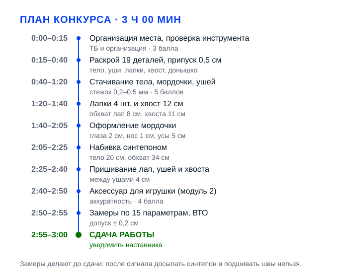
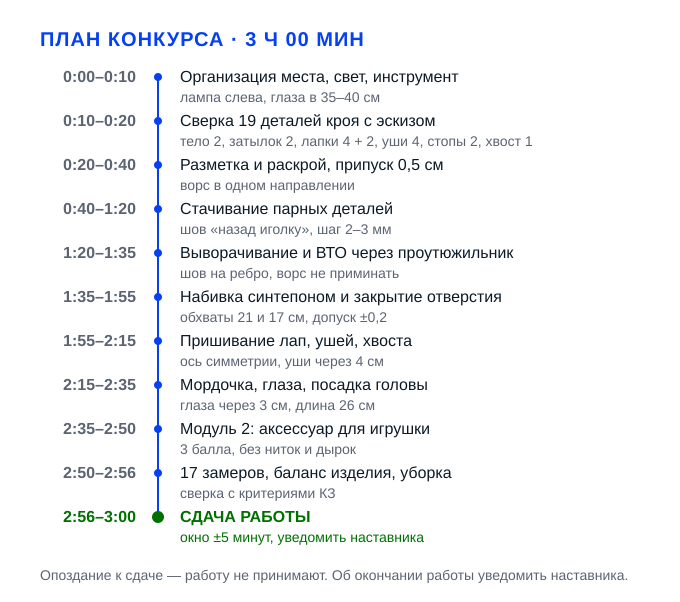
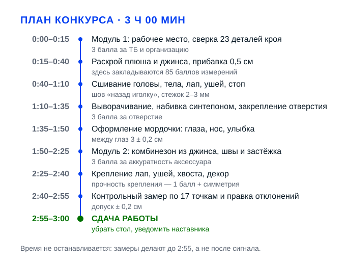

Дизайнер мягкой игрушки (Р)
Задания ниже — официальные файлы «Абилимпикс» (источник: abilympics-russia.ru), разложенные по категориям. Решения написаны по тексту задания, регламенту и критериям оценки; в них указано, что именно проверяет эксперт.
Школьник
14–16 лет, базовый уровень заданияВыдержка из официального конкурсного задания: страницы, относящиеся к категории «Школьник» (стр. 5–6 источника).
Пошаговое решение
Задание для школьников — изготовить вручную мягкую игрушку «Кот» из сатина и уложиться в три часа. По структуре это два модуля: пошив самой игрушки и аксессуар для неё, а внутри первого модуля шесть последовательных операций — раскрой с прибавкой на шов 0,5 см, стачивание деталей, оформление мордочки, набивка синтепоном, пришивание лап, ушей и хвоста, декоративное оформление. Оценивают работу по ста баллам: пятнадцать измеримых параметров по 5 баллов задают габариты готового кота — тело 20 ± 0,2 см, обхват нижней части 34 ± 0,2 см, уши 5 на 6 см с расстоянием между ними 4 см, хвост 12 см с обхватом 11 см, мордочка 5 на 4 см, нос 1 см, глаза 2 см с расстоянием 2 см, усы 5 см, обхват лап 8 см и длина стежка 0,2–0,5 мм. Остальные баллы дают за организацию места и технику безопасности, отсутствие дефектов, симметричность, прочность крепления деталей и аккуратность аксессуара. Главная особенность этой компетенции в том, что почти всё решается на раскрое и набивке: допуск ± 0,2 см не оставляет права на ошибку в припуске, а исправить габариты после закрытия отверстия уже нельзя.

Задача 1. Организовать рабочее место и подготовить сатин к раскроюМодуль 1 · 3 балла за ТБ и организацию
Первые сорок минут уходят не на шитьё, а на то, чтобы дальше шить без остановок: разложенный инструмент, проверенный по спецификации крой и отутюженный сатин. По критериям это 3 балла за технику безопасности и организацию работы, но фактически здесь закладываются все пятнадцать измеряемых параметров — длина тела 20 ± 0,2 см, уши 5 на 6 см, хвост 12 см с обхватом 11 см, обхват нижней части туловища 34 см. Ткань, не отутюженную до раскроя, потом не исправить: усадка сатина даёт 0,5–1 см на двадцати сантиметрах готовой игрушки, а это сразу выход за допуск. Поэтому организация места — не формальность перед стартом, а первый производственный этап, за который уже начисляют баллы.
Действие 1.1. Разложить инструмент и материалы по зонам
Шаг 1.1.1
Ножницы кладём справа от себя кольцами к корпусу, лезвиями вперёд — так их берут, не глядя и не переворачивая в руке. Игольницу ставим у правого края стола и втыкаем в неё три иглы разной длины: длинную для сметывания, среднюю для стачивания, тонкую для глаз и усов. Булавки держим в отдельной подушечке, мелок и мыло — в левом верхнем углу, сантиметровую ленту — на дальнем краю, чтобы её концы не свисали и не цеплялись за локоть.
Критерий «Соблюдение техники безопасности и организация работы» стоит 3 балла, и его снимают не за результат, а за то, как устроено место: свободно лежащие иглы, ножницы без своего места, мусор под руками. Раскладка по зонам экономит минуты, а в трёх часах их ровно столько, сколько нужно на девятнадцать деталей.
Проведите взглядом по столу: справа режущий инструмент, в центре свободная рабочая зона шириной не меньше 30 см, слева разметка, иглы только в игольнице. Ни одной иглы или булавки, лежащей прямо на ткани, быть не должно. Если игла упала на пол, поднимайте её сразу и при полном свете, а не наощупь: потерянная игла находится ногой.
Иглы, воткнутые в край стола или брошенные на ткань, — самая частая причина и укола, и потерянного балла: нарушение фиксируют сразу. Вторая ошибка — свалить всё в кучу у швейной машины, тогда на каждый переход за инструментом уходит по минуте.
Эксперт подходит к столу в первые пять минут и смотрит именно на иглы, булавки и ножницы, а не на ткань: порядок должен быть выставлен до начала кроя. Отдельно он отмечает, лежат ли ножницы с сомкнутыми лезвиями: это прямое требование инструкции по охране труда.
Шаг 1.1.2
Садимся так, чтобы корпус касался спинки стула, а расстояние от глаз до работы было 35–40 см — это прямое требование инструкции по охране труда. Свет должен падать слева, если вы правша: тень от руки не ложится на линию шва, и мелкий стежок видно без напряжения. Стол освобождаем от лишнего: сумочка, телефон и бутылка воды уходят на отдельный стул, потому что вода, пролитая на сатин, оставляет пятно, которое потом читается как загрязнение изделия.
Посадка и освещение входят в те же 3 балла за организацию, но практическая их цена выше: при наклоне над столом через час начинают уставать глаза и шея, а стежок 0,2–0,5 мм требует точности до миллиметра. Ровная спина и свет слева — это ещё и скорость, на которую рассчитаны три часа.
Проверьте просто: вытяните руку вперёд — ладонь ложится на стол без наклона корпуса. Тень от правой руки не закрывает рабочую зону. Ноги стоят на полу, а не поджаты под стул. Проверьте настольную лампу: если она стоит справа, переставьте её до начала работы, а не в середине шва.
Работать ссутулившись, положив ткань на колени: линия шва уходит из поля зрения, стежки получаются разной длины, и 5 баллов за качество швов уплывают. Вторая ошибка — сесть против окна, тогда работа всё время в тени.
Эксперт отмечает посадку и освещение в начале работы, дальше смотрит, держится ли участник прямо к середине конкурса. Он смотрит на посадку и на положение лампы в первые минуты и отмечает это в листе оценки вместе с организацией места.
Шаг 1.1.3
Проверяем инструмент до старта, а не в процессе: ножницы должны резать, а не мять ткань, и закрываться с лёгким ходом; иглы — без ржавчины и заусенцев на острие; булавки — с целыми головками; утюг — с чистой подошвой, без нагара, иначе на сатине останутся жёлтые полосы. Если что-то неисправно, сразу говорим наставнику или эксперту и просим замену: по инструкции неисправный инструмент меняют, но только до начала работ.
Инструкция по охране труда прямо предписывает при обнаружении неисправных ножниц или сломанных игл прекратить работу и сообщить наставнику или эксперту. Практический смысл тот же: тупые ножницы дают рваный срез, деталь осыпается по краю, и шов ложится на осыпавшуюся кромку — это видимый дефект на 3 балла.
Проверьте ножницы на обрезке: срез ровный, без «жевания» и без затяжек по краю. Утюг прогрейте на ненужном лоскуте: на нём не должно остаться ни нагара, ни желтизны. Игла входит в ткань с усилием, но без скрипа. Запасную иглу вставьте в игольницу заранее: сломанную меняют, но время на замену уходит из модуля.
Начать работу тупыми ножницами и «дорезать» деталь в два приёма: на кромке появляются ступеньки, припуск становится неравномерным, и набитое тело перекашивает. Вторая ошибка — промолчать про сломанную иглу и продолжить колоть ею ткань.
Эксперт фиксирует, обращался ли участник за заменой и в какой момент: до старта — это норма, в середине работы — уже нарушение организации. Он же проверяет, не осталось ли на столе сломанных игл: по инструкции о находке сообщают, а не выбрасывают молча.
Действие 1.2. Сверить девятнадцать деталей кроя со спецификацией
Шаг 1.2.1
Раскладываем детали по спецификации и считаем вслух, чтобы не сбиться: тело — 2 детали из зелёного сатина, ушки — 2 зелёные и 2 розовые передние, лапки — 4 зелёные, мордочка — 2 белые, донышко — 1, хвост — 1, нос — 1 красный, глаза — по 2 из жёлтого и по 2 из чёрного фетра. Всего десять позиций и девятнадцать деталей. Сверяем форму с техническим рисунком: ухо вытянутое, лопатой; мордочка округлая снизу и шире сверху.
ПК 1.1 требует проверять наличие деталей кроя в соответствии с эскизом, а критерий «Изделие соответствует эскизу, техническому рисунку» стоит 3 балла. Недокроенная пара лапок обнаруживается на этапе сборки, когда времени на повторный раскрой и пошив уже нет — игрушка остаётся трёхлапой.
Сверьте число по каждой позиции отдельно, а не общую кучу: две детали тела, четыре лапки, по две каждого вида глаз. Каждая пара лежит лицом вверх и по контуру совпадает с эскизом без перекоса. Считайте парами, а не общей кучей: две детали тела, четыре лапки, по две каждого вида глаз — так сбой виден сразу.
Выкроить «примерно по рисунку» и потерять одну из четырёх лапок: игрушка не встанет на все четыре точки, баланс нарушен, и это читается экспертом как незаконченная работа. Вторая ошибка — выкроить мордочку из зелёного сатина вместо белого.
Эксперт может попросить разложить детали до сшивания и сличить их количество с эскизом — это прямая проверка ПК 1.1, и она делается в любой момент модуля. Сверяет он и форму: вытянутое ухо и округлённая снизу мордочка должны читаться на выкроенных деталях.
Шаг 1.2.2
Определяем долевую нить. Кромка — уплотнённый край отреза, долевая идёт вдоль неё; проверяем растяжением: вдоль кромки сатин пружинит слабо, поперёк тянется заметно. На изнанке проводим мелком стрелку вдоль долевой на каждом отрезе, чтобы при раскладке лекал не гадать. Если кромки на отрезе нет, долевую определяют по направлению нитей основы: они толще и идут ровнее уточных.
Детали, выкроенные с нарушением долевой, ведут себя иначе при набивке: тело вытягивается и вместо 20 ± 0,2 см даёт 21–22 см, обхват нижней части уходит с 34 см, а хвост скручивается винтом. Каждый из этих замеров стоит 5 баллов, то есть ошибка в долевой обходится дороже, чем любая другая на этапе кроя.
Стрелки на всех отрезах смотрят в одну сторону, поперёк ткани деталь тянется заметно сильнее, чем вдоль. Приложите линейку к срезу: нити основы идут параллельно кромке, без перекоса «по диагонали». Возьмите обрезок и потяните его в двух направлениях: там, где тянется слабее, и проходит долевая.
Разложить тело поперёк долевой, потому что «так больше влезает на остаток»: экономия пять сантиметров ткани стоит пятнадцати баллов за габариты. Вторая ошибка — определить долевую по блеску сатина, который у атласного переплетения обманчив.
Эксперт смотрит на раскладку лекал и на направление долевой до того, как деталь вырезана: после раскроя исправить уже нельзя. Смотрит он на угол между осевой лекала и кромкой: он должен быть прямым, без перекоса в 5–7 градусов.
Шаг 1.2.3
Осматриваем каждый отрез на просвет и с лицевой стороны: пятна, затяжки, узлы нитей, заломы, которые не разгладятся, следы мела и ржавчины. Дефектные участки обводим мелком и выводим за контур лекала; если дефект идёт по всей ширине отреза, откладываем его и сразу говорим наставнику. Для глаз и носа осматриваем фетр отдельно: у него дефект виден только на ворсе, при косом свете.
Критерий «Отсутствие дефектов при изготовлении изделия» — 3 балла, и проверяют его на готовой игрушке: пятно, попавшее в центр тела, зашить нельзя, а перекроить деталь на этом этапе уже нечем. Пятно от мела или масла на сатине читается как загрязнение даже после стирки.
На просвет в отрезе нет тёмных полос и утолщений, на лице — пятен и затяжек. Меловая разметка нанесена только по изнанке, лицевая сторона чистая. Фетр просмотрен под углом к свету. Отметьте мелом границы годных участков: так видно, сколько ткани осталось на перекрой в случае ошибки.
Выкроить деталь через пятно в расчёте на «потом отстирается»: сатин после набивки не стирают, игрушка деформируется. Вторая ошибка — размечать контур по лицевой стороне и оставить на готовом изделии следы мела.
Эксперт осматривает изделие на сдаче и при хорошем освещении: следы мела, обрезки ниток и мелкий мусор на ткани он видит без лупы. Пятна он проверяет и на изнанке: сатин просвечивает, и дефект с изнанки читается на лицевой стороне.
Действие 1.3. Подготовить сатин и фетр к раскрою
Шаг 1.3.1
Утюжим сатин с изнанки на режиме «хлопок» — 150–170 °C, с паром, через проутюжильник из бязи или марли. Движения вдоль долевой, прижим по 2–3 секунды на участок, утюг не растягиваем по ткани, а переставляем. Фетр горячим утюгом не гладят: только лёгкое прижатие тёплым утюгом до 110 °C через ткань, иначе ворс сплющивается и деталь теряет вид.
ВТО деталей — требование ПК 1.5 и знание технических требований к влажно-тепловой обработке. Практический смысл в усадке: отутюженный с паром сатин садится сразу, а если это произойдёт после набивки, синтепон сваляется, тело потеряет форму и уйдёт из допуска 20 ± 0,2 см — это 5 баллов из 100.
Ткань сухая, гладкая, без заломов и лас, кромка не волнится. Приложите линейку: полотно лежит ровно, нити основы не перекошены. На фетре ворс поднят, а не приглажен полосами. Проведите ладонью по отутюженному полотну: не должно оставаться ощущения волнистости и «хруста» пересушенной ткани.
Шить неутюженную ткань: заломы уходят внутрь шва и на готовой игрушке читаются как перекос и неряшливость. Перегрев утюга даёт на сатине ласы — блестящие полосы, которые уже не убрать, это прямой дефект на 3 балла.
Эксперт видит результат ВТО по ровной, без заломов ткани ещё на этапе раскладки: мятый крой он отмечает как нарушение технологической последовательности. Отдельно он смотрит на фетр: приглаженный полосами ворс сразу выдаёт перегрев утюга.
Шаг 1.3.2
Складываем сатин вдвое лицевой стороной внутрь, выравниваем по кромке и скалываем булавками через каждые 10 см, ставя булавку поперёк среза, а не вдоль. Кромки совмещаем, но не натягиваем: натянутая ткань после раскроя даёт перекошенную деталь, которая после выворачивания перекашивается ещё сильнее. Для мелких деталей — ушей, мордочки, глаз — берём отдельные лоскуты и складываем их так же.
Парные детали — тело, ушки, мордочка, глаза — выкраивают в разворот, иначе левая и правая половины получаются зеркально разными, а симметричность деталей — отдельный критерий на 3 балла. Сколотый по кромке сатин гарантирует, что срезы не разъедутся при обводке.
Срезы совпадают по всей длине, булавки не топорщат ткань, на сгибе нет складок и «пузырей». Проведите пальцем по сгибу: он ровный, плотный, без воздушной прослойки. Сколотый пакет положите на стол и прижмите ладонью: он не должен «пружинить» воздухом между слоями.
Сколоть «на глаз»: сдвиг на 5 мм даёт перекошенное тело, уши разной ширины вместо 5 ± 0,2 см и мордочку с перекосом. Вторая ошибка — скалывать булавками вдоль среза, тогда ткань между ними выгибается волной.
Эксперт смотрит на симметричность уже готовых деталей, сложенных попарно, поэтому перекос закладывается здесь и проявляется позже. Он же смотрит, не наколоты ли булавки вдоль среза: по волне ткани это видно сразу.
Шаг 1.3.3
Стол протираем насухо, стелим клеёнку или плотную бумагу, готовим мелок, обмылок, линейку, сантиметровую ленту и коробку для обрезков. Обрезки складываем в коробку сразу, а не смахиваем на пол: мелкий мусор в рабочей зоне — отдельный минус по организации. Рядом кладём лист со спецификацией деталей, чтобы сверяться, не вставая.
Пространство рабочего места без производственного мусора — прямая формулировка критерия на 3 балла, и оценивают её и во время работы, и по окончании. Чистая рабочая зона ещё и практична: обрезки сатина прилипают к набивке и потом вытаскиваются из готовой игрушки пинцетом.
Стол сухой и чистый, на нём только инструмент и ткань, обрезки в коробке, пол под столом без лоскутков. Мелок и линейка под рукой, спецификация перед глазами. Проверьте освещение стола: тень от коробки с обрезками не должна падать на рабочую зону.
Работать на столе с остатками крошки и ниток: они прилипают к сатину и уходят внутрь изделия. Вторая ошибка — бросать обрезки под стол, откуда их достают уже после сигнала о сдаче, когда уборка засчитана.
Эксперт проходит по площадке в середине модуля: мусор под рабочим местом он видит и отмечает в листе оценки. Смотрит он и на пол: лоскутки под стулом считаются таким же производственным мусором, как и на столе.
Задача 2. Выкроить девятнадцать деталей с припуском 0,5 смМодуль 1 · крой под 15 замеров · припуск 0,5 см
Крой — этап, после которого все пятнадцать измеряемых параметров уже предопределены: длина тела 20 ± 0,2 см, ширина ушей 5 ± 0,2 см и длина 6 ± 0,2 см, расстояние между ушами 4 ± 0,2 см, ширина мордочки 4 ± 0,2 см, длина хвоста 12 ± 0,2 см с обхватом 11 ± 0,2 см, обхват лап 8 ± 0,2 см. Никакая аккуратная сборка не исправит деталь, выкроенную на сантиметр короче. Конкурсное задание отдельно оговаривает прибавку на шов — 0,5 см, и именно эта цифра связывает размер лекала с размером готовой игрушки: слишком маленький припуск разойдётся при набивке, слишком большой уменьшит изделие.
Действие 2.1. Разложить лекала с учётом долевой и парности
Шаг 2.1.1
Начинаем с самой крупной детали — тела. Кладём лекало так, чтобы его осевая линия шла строго вдоль долевой, отступ от кромки не меньше 1 см: у кромки ткань плотнее, и после набивки по шву получается утолщение. Обводим тонким мелком, держа его наклонно, под углом около 60 градусов к плоскости ткани: толстая линия даёт погрешность до 2 мм на каждой стороне, а в сумме это уже 4 мм против допуска ± 0,2 см.
Длина тела в готовом виде — 20 ± 0,2 см, это 5 баллов, и допуск здесь жёстче, чем толщина мелка. Тело кроят двумя деталями, которые стачиваются по контуру, поэтому погрешность обводки удваивается и уходит в длину и обхват одновременно.
Осевая лекала совпадает со стрелкой долевой, отступ от кромки не меньше сантиметра, линия тонкая и непрерывная. Проверьте сантиметровой лентой длину обведённого контура по осевой: она должна совпадать с лекалом до 2 мм. Проверьте прямой угол: осевая лекала и кромка должны образовывать именно 90 градусов, а не «почти».
Обвести толстым мелком и не проверить контур: деталь выходит на 3–4 мм шире, а после набивки разница добирается ещё двумя сантиметрами обхвата. Вторая ошибка — положить тело поперёк долевой ради экономии ткани.
Эксперт придирчиво измеряет именно тело: это первое, что бросается в глаза, и первое, что попадает под ленту при оценке. Смотрит он и на обхват: тело, выкроенное с перекосом, даёт разницу между правой и левой стороной силуэта.
Шаг 2.1.2
Ушки и мордочку обводим парами: сначала одну деталь, затем, перевернув лекало лицевой стороной вниз, вторую — так получаются зеркальные половинки. Ухо в готовом виде 5 ± 0,2 см по ширине и 6 ± 0,2 см по длине, поэтому лекало уха кладём длинной стороной вдоль долевой: поперёк ухо после набивки садится и становится короче шести сантиметров. Розовые передние ушки кроим тем же лекалом, что и зелёные, иначе они не совпадут по контуру.
Расстояние между ушами — 4 ± 0,2 см, ширина 5 ± 0,2 см, длина 6 ± 0,2 см: три отдельных критерия по 5 баллов. Если зелёное и розовое ухо выкроены по разным лекалам, при сборке получается ступенька по краю, и симметричность теряется вместе с баллами за внешний вид.
Парные детали совпадают по контуру при наложении лицом к лицу, розовое и зелёное ухо одинаковы по размеру. Ширина обведённого уха — 5 см плюс припуск, длина — 6 см плюс припуск. Приложите лекало ко второй детали пары: контуры должны совпасть, а разворот быть зеркальным, а не одинаковым.
Обвести второе ухо, не переворачивая лекало: получаются две одинаковые, а не зеркальные детали, и одно ухо встаёт задом наперёд. Вторая ошибка — выкроить передние ушки по лекалу мордочки.
Эксперт складывает уши попарно и прикладывает линейку: ширина и длина проверяются на готовом изделии, но расхождение видно уже в крое. Особое внимание он уделяет передним розовым ушкам: они должны быть выкроены тем же лекалом, что и зелёные.
Шаг 2.1.3
Лапки кроим четырьмя деталями зелёного сатина, по две на переднюю и заднюю пару, обхват каждой в готовом виде — 8 ± 0,2 см. Хвост — одна деталь длиной 12 см; чтобы получить обхват 11 ± 0,2 см, ширина детали в крое должна быть около 7 см с учётом припусков и неплотной набивки. Донышко — круг диаметром около 9 см, он должен свободно, без натяжения, вписаться в нижнюю часть тела с обхватом 34 ± 0,2 см.
Обхват лап 8 ± 0,2 см и обхват хвоста 11 ± 0,2 см — по 5 баллов каждый, и оба замера задаются шириной детали в крое, а не набивкой. Узкая деталь хвоста даст обхват 9–10 см, и исправить это на этапе сборки уже невозможно, потому что ткань не растянется на два сантиметра.
Детали лапок одинаковы по ширине, хвост в крое около 7 см шириной и 12 см длиной без припусков. Донышко приложите к нижнему срезу тела: длины окружности хватает с запасом 1–1,5 см на посадку. Измерьте ширину каждой лапки в крое: расхождение больше 3 мм между четырьмя деталями уже заметно на готовой игрушке.
Выкроить хвост узкой полосой 4–5 см «чтобы был изящный»: обхват выходит 8–9 см вместо 11, и 5 баллов уходят. Вторая ошибка — выкроить донышко в обрез, тогда при втачивании тело собирается в сборку и нижняя часть идёт волной.
Эксперт измеряет обхват лап и хвоста лентой на готовой игрушке, поэтому запас по ширине детали нужно заложить заранее. Ленту он прикладывает и к хвосту в крое, сверяя ширину детали с будущим обхватом 11 см.
Действие 2.2. Обвести контур и отложить припуск 0,5 см
Шаг 2.2.1
Обводим контур лекала сплошной тонкой линией, не отрывая мелок на закруглениях, а поворачивая его вместе с линией. Ткань при обводке придерживаем левой рукой, не сдвигая: сдвиг на миллиметр по всему контуру даёт перекос детали. На парных деталях сначала обводим одну половину, потом, перевернув лекало, вторую, и обязательно помечаем, где перед, а где спинка.
Тонкий контур — это база, от которой отсчитывается припуск. Если линия дрожит или двойная, прибавку 0,5 см отложить уже не от чего, и деталь выйдет неровной. Ровный контур напрямую связан с критерием качества швов на 5 баллов: шов идёт по линии, а не по «примерно там».
Все детали обведены одной непрерывной линией, лекало не смещалось, на закруглениях линия плавная. Проверьте наложением лекала: контур идёт под ним ровно, без зазоров и наплывов. Проверьте контур на просвет у окна: двойная или дрожащая линия сразу покажет, где рука сбилась.
Обвести деталь по внешнему краю лекала, а потом «на глаз» добавить припуск: на одном участке прибавка 3 мм, на другом 8 мм, и после стачивания деталь перекашивает. Вторая ошибка — обводить по лицевой стороне, оставляя следы мела.
Эксперт смотрит на готовое изделие, но неровный припуск виден по шву: он то подтянут, то «гуляет» по ширине. Смотрит он и на парность обводки: оба уха должны быть обведены с одинаковым наклоном к долевой.
Шаг 2.2.2
Откладываем припуск 0,5 см — ровно столько, сколько требует конкурсное задание. Отмеряем линейкой через каждые 2–3 см по контуру и соединяем точки второй линией, а не «на глаз»: на детали длиной 20 см рука ошибается на 3–4 мм. На вогнутых участках припуск слегка уменьшаем до 4 мм, чтобы после выворачивания не образовались складки у шва.
Прибавка 0,5 см прописана в задании буквально, и это не формальность: припуск 0,5 см при набивке садится в шов без натяжения. При 2–3 мм шов при набивке расходится и появляются дырки, а критерий «качество соединения без дырок» стоит 3 балла; при 1 см деталь уменьшается, и все замеры уходят вниз.
Ширина припуска по всему контуру одинаковая, проверяется линейкой в четырёх-пяти точках, включая закругления. Вторая линия параллельна первой, без слияний и разрывов. Измерьте припуск на самом узком участке — у основания уха: именно там он чаще всего съедается до 2 мм.
Отложить припуск «примерно 5 мм», не измеряя: на выступающих участках он выходит 2 мм, и именно там шов разойдётся при набивке. Вторая ошибка — сделать припуск 1–1,5 см «с запасом», тогда уши и лапы после выворачивания окажутся меньше нормы.
Эксперт не измеряет припуск напрямую, но видит его последствия: расходящиеся швы и несоответствие габаритов. Его практический тест — сложить готовое ухо пополам: перекос припуска читается как волна по краю.
Шаг 2.2.3
Подписываем каждую деталь на изнанке: тело, ухо зелёное, ухо розовое, мордочка, лапка, хвост, донышко, нос, глаз жёлтый, глаз чёрный. Парные помечаем «Л» и «П», а на деталях тела и мордочки ставим метку верха, чтобы при сборке не перевернуть их. Надпись делаем тонко, у самого края припуска: она уйдёт в шов и не будет видна на готовой игрушке.
Без маркировки девятнадцать похожих деталей путаются: зелёные ушки и лапки одинаковы по цвету, и на сборку уходит лишние десять минут из трёх часов. Кроме того, надпись внутри припуска страхует от перекоса: вы всегда видите, где перед детали.
Каждая деталь подписана, метки верха стоят на теле и мордочке, парные помечены Л и П. Надписи не выходят за линию шва и не видны с лицевой стороны. Надписи должны читаться вами, а не экспертом: пишите тонко и близко к срезу, внутри будущего шва.
Подписать детали посередине, крупно и толстым мелком: надпись останется на готовой игрушке, а это дефект. Вторая ошибка — не помечать парность, тогда левое ухо встаёт на место правого и разворот ворса не совпадает.
Эксперт при осмотре выворачивает изделие и смотрит изнанку: посторонние надписи и метки внутри — признак небрежности. Смотрит он и на срез: если надпись попала в шов, при набивке мел проступит на лицевой стороне.
Действие 2.3. Вырезать, насечь и проверить комплект
Шаг 2.3.1
Режем ножницами длинными резами, не смыкая лезвия до конца и не приподнимая ткань над столом: поднятая ткань уводит линию на 2–3 мм, а на мелких деталях это заметно. На вогнутых участках — шейка, основание уха, внутренний изгиб лапки — делаем короткие резы по 2–3 мм, поворачивая саму ткань, а не ножницы. Ножницы держим так, чтобы нижнее лезвие шло по столу, а не по воздуху.
Ровный срез — условие ровного шва, а качество швов с длиной стежка 0,2–0,5 мм оценивается в 5 баллов. Рваный, «зажёванный» край осыпается, и при набивке из шва выбиваются нити — это видно на готовом изделии как бахрома по контуру.
Срез ровный, без ступенек и затяжек, припуск по всей длине одинаковый. Проведите пальцем по кромке: она не лохматится и не тянется за пальцем. Проверьте срез на свет: ровный край даёт одну линию, а не «ступеньки» из отдельных резов.
Резать мелкими «кусающими» движениями, разворачивая ножницы на углах: на закруглении получается гранёный контур, и ухо выходит угловатым. Вторая ошибка — приподнимать ткань над столом и резать на весу.
Эксперт видит качество среза по контуру готовой игрушки: угловатые закругления и осыпавшиеся края читаются сразу. Замечает он и характер закруглений: гранёный контур уха он отмечает как признак спешки.
Шаг 2.3.2
Ставим контрольные насечки глубиной 2 мм в местах, где детали совмещаются: середина уха по нижнему срезу, осевая мордочки сверху и снизу, центр донышка, середина отверстия для набивки. Насечку делаем кончиками ножниц поперёк линии шва, а не вдоль: продольная насечка разрывает припуск при набивке.
Насечки — это разметка, которая не смывается и не стирается, в отличие от мела. По ним уши встают симметрично с расстоянием между ними 4 ± 0,2 см, а мордочка не съезжает в сторону. Без насечек симметричность проверяют на глаз, а глаз не ловит 3 мм, которые в критерии «симметричность деталей» стоят 3 балла.
Насечки глубиной не больше 2 мм, ровно по линии шва, на всех парных деталях в одинаковых местах. Приложите детали друг к другу: насечки совпадают. Проверьте глубину, раздвинув ткань пальцами: насечка не должна доходить до линии шва.
Насечь припуск на 4–5 мм «чтобы виднее»: насечка доходит до линии шва и при набивке превращается в дырку, а за дырки снимают баллы по двум критериям сразу. Вторая ошибка — насекать только на одной детали пары.
Эксперт не ищет насечки специально, но видит их результат: ровно посаженные уши и мордочку без перекоса. Он может попросить сложить парные детали по насечкам: это быстрый и наглядный тест на симметрию.
Шаг 2.3.3
Пересчитываем комплект: девятнадцать деталей по десяти позициям. Раскладываем по позициям в органайзер или на поднос, парные кладём лицом вверх и рядом. Сверяем с листом спецификации ещё раз и только после этого убираем лекала и мелок в сторону, чтобы они не мешали на рабочей поверхности.
Проверенный комплект — это спокойные следующие два часа. Если деталь потерялась именно сейчас, её ещё можно выкроить из остатка; если через час, придётся останавливать сборку. Пункт «Сопоставлять наличие количества деталей кроя с эскизом» входит в требования к квалификации школьников.
На подносе десять позиций и девятнадцать деталей, ни одна не лежит лицевой стороной вниз, лекала убраны. Сверка со спецификацией занимает меньше минуты — пройдите по списку пальцем. Отдельно проверьте мелочи — нос, донышко и четыре фетровых кружка: теряются они легче всего.
Убрать лекала, не пересчитав детали: нехватка обнаруживается на сборке, и время на новый раскрой берётся из оформления мордочки. Вторая ошибка — держать лекала на рабочем столе, где они цепляются за ткань.
Эксперт может в любой момент попросить показать комплект деталей: наличие всех девятнадцати — прямая проверка готовности к сборке. Смотрит он и на порядок на подносе: детали, разложенные по позициям, читаются как организованная работа.
Задача 3. Сшить детали кроя вручнуюМодуль 1 · 5 баллов за швы · 3 за симметричность
Второй пункт задания — сшить детали кроя. Шьют вручную, и именно здесь решается судьба пяти баллов за качество швов с длиной стежка 0,2–0,5 мм: по сути это частый мелкий стежок, четыре-пять проколов на сантиметр шва, при котором синтепон не выбивается между нитями. К этому добавляются 3 балла за симметричность готовых деталей и 3 балла за прочность отверстия для наполнения. Работа идёт по цепочке: сначала стачиваем тело, мордочку и ушки, потом выворачиваем и приутюживаем, затем сшиваем четыре лапки и хвост — и только после этого переходим к лицу, потому что мордочку нельзя размечать на ненабитой голове.
Действие 3.1. Стачать тело, мордочку и ушки
Шаг 3.1.1
Берём нить в два сложения, длиной 40–50 см: длинная путается, лохматится и теряет прочность на изгибах. Иглу подбираем номер 7–9 — она проходит через плотный сатин, не раздвигая нити. Шьём стачным швом по изнанке, отступив от обведённого контура ровно 5 мм: линия припуска уже нанесена, ведём иглу по ней. Длина стежка по заданию 0,2–0,5 мм, то есть практически 4–5 проколов на сантиметр.
Длина стежка — отдельный измеримый критерий на 5 баллов, и он проверяется на готовом изделии: эксперт смотрит шов с изнанки и на просвет. Частый мелкий стежок держит набивку, не даёт синтепону выбиваться и не расходится, когда игрушку сжимают. Редкий стежок в 3–4 мм при набивке разъезжается, и появляются те самые дырки, за которые снимают ещё 3 балла.
Стежки одинаковой длины по всему шву, нить натянута ровно, без петель. Проверьте на 5 см шва: должно уместиться 20–25 проколов. Потяните шов в стороны — он не расходится и не «дышит». Посчитайте проколы на 5 см шва: меньше двадцати — стежок слишком редкий, и шов придётся перешивать.
Шить стежком «вперёд иголку» длиной 4–5 мм, потому что так быстрее: шов получается рыхлым, при набивке расходится, и теряются сразу 5 баллов за швы. Вторая ошибка — взять нить длиной в метр: она перекручивается и образует узлы.
Эксперт выворачивает изделие и смотрит шов с изнанки, прикладывая лупу к проблемным участкам: длина стежка — его измеримый критерий. Он же смотрит, не стянут ли шов: стянутая ткань идёт волной и меняет силуэт изделия.
Шаг 3.1.2
Каждый шов начинаем и заканчиваем закрепкой: два стежка на одном месте, потом основной шов. Ведём по линии припуска, придерживая детали так, чтобы срезы не разъезжались; на углах и закруглениях делаем два коротких стежка на месте и только потом поворачиваем ткань. Дойдя до конца, снова закрепка, нить обрезаем ножницами, а не отрываем руками — оторванная нить распускается по шву.
Закрепки — это прочность крепления, за которую в критериях отвечают 3 балла, и одновременно защита от роспуска шва при набивке. Отрывать нить руками запрещено инструкцией по охране труда, и это правило проверяют на площадке: нить, оторванная зубами или руками, рвёт волокна ткани и оставляет лохматый конец.
На концах шва стоят закрепки, нитки обрезаны коротко и ровно, шов не тянет. Проверьте пальцами: проведите вдоль шва — нигде нет бугорков и узлов. Осмотрите изнанку на свет: концы нитей должны быть обрезаны, а не заправлены внутрь шва.
Оставить концы нитей по 3–4 см, чтобы «потом закрепить»: они вылезают на лицевую сторону после выворачивания, и это читается как «нитки торчат». Вторая ошибка — завязать узел и оставить его снаружи шва.
Эксперт осматривает изнанку и торцы швов: обрезанные нити и закрепки видны при выворачивании. Отмечает он и длину оставленных концов: нити по 3–4 см он считает незаконченной работой.
Шаг 3.1.3
В теле оставляем незашитым участок 4–5 см — в нижней части, там, где потом встанет донышко, или в боковом шве. Края отверстия сразу закрепляем двумя стежками с каждой стороны, иначе при набивке они расползутся на 1,5–2 см и закрыть их потайным швом будет нечем. Отверстие размечаем до начала шва, а не «найду место по ходу»: потом его положение диктует уже готовая форма.
Критерий «Отверстие для наполнения игрушки прочно закреплено» стоит 3 балла, и его проверяют, потянув за края отверстия. Кроме того, через это отверстие набивка идёт порциями, поэтому 4–5 см — рабочий минимум: через 2 см синтепон не пройдёт, а через 8 см край деформируется и шов пойдёт волной.
Отверстие ровное, края закреплены, при натяжении не расползаются. После набивки его края должны сходиться без натяжения ткани. Проверьте закрепки потягиванием: край не должен расползаться больше чем на 1 мм.
Оставить отверстие без закрепок: при набивке край уходит внутрь, ткань осыпается, и закрыть изделие аккуратно уже невозможно. Вторая ошибка — сделать отверстие в самом видном месте, на мордочке или на спине.
Эксперт проверяет закрепление отверстия на готовой игрушке, аккуратно оттягивая край: незакреплённый край виден по осыпавшейся кромке. Смотрит он и на размер отверстия: через 2 см набивка не пройдёт, и это видно по буграм на теле.
Шаг 3.1.4
Ушки шьём двуцветными: зелёную и розовую деталь складываем лицевыми сторонами внутрь и стачиваем по боковым сторонам и по длинной дуге, оставляя открытым нижний срез — через него ухо вывернется и им же пришьётся к голове. Мордочку из белого сатина стачиваем по контуру целиком, оставляя 2–3 см для выворачивания; выворачиваем и приутюживаем, чтобы шов лёг на ребро.
Двухцветное ухо — это то, что делает кота узнаваемым, и одновременно проверка аккуратности: розовая деталь должна совпасть с зелёной по контуру, иначе по краю получится ступенька и ухо будет разной ширины. Симметричность готовых деталей — 3 балла, и уши входят в неё первыми.
Ухо вывернуто, розовая сторона спереди, шов идёт точно по краю, без перекосов. Парные уши совпадают по ширине 5 ± 0,2 см и длине 6 ± 0,2 см. Проверьте, что розовая сторона смотрит на лицо, а не внутрь: перевёрнутое ухо заметно на готовой игрушке сразу.
Стачать ухо по всем четырём сторонам, не оставив отверстия для выворачивания: придётся распарывать шов, а на сатине от распоротого шва остаются следы проколов. Вторая ошибка — стачать ухо, сложив зелёное с зелёным.
Эксперт складывает уши попарно и прикладывает линейку: ширина и длина измеряются на готовом изделии, а цветовая сторона видна сразу. Смотрит он и на шов по краю уха: перекос розовой детали читается как ступенька по контуру.
Действие 3.2. Вывернуть, приутюжить и проверить симметрию
Шаг 3.2.1
Выворачиваем деталь через оставленное отверстие, начиная с самого дальнего уголка: подталкиваем ткань тупым концом карандаша, палочкой или обратной стороной кисти. Иглой и ножницами уголки не выправляем — они прокалывают сатин, и на лицевой стороне остаётся прокол, который после набивки превращается в дырку. Ткань вытягиваем не рывком, а постепенно, поворачивая деталь.
Проколы на сатине не зашиваются незаметно: нить раздвигается, и в месте прокола образуется стойкая точка, которая при набивке расходится. Это прямой дефект по критерию «отсутствие повреждений» на 3 балла. Аккуратное выворачивание ещё и сохраняет форму: уголок, вытянутый рывком, растягивается и торчит.
Все уголки выправлены, на лицевой стороне нет проколов и затяжек, шов лежит на ребре контура. Посмотрите деталь на свет: точки проколов видны как мелкие светлые крапины. Проверьте кончики ушей на ощупь: растянутый уголок тоньше остальной ткани и на просвет светлее.
Выправлять уголки ножницами или иглой: 2–3 прокола на ухе, и на готовой игрушке они читаются как повреждения. Вторая ошибка — выворачивать рывком, растягивая и без того узкое основание уха.
Эксперт осматривает лицевую сторону при боковом свете: затяжки и проколы видны именно так. Он смотрит и на кончики лап: именно там чаще всего остаются следы от иглы или ножниц.
Шаг 3.2.2
Приутюживаем шов на ребро: кладём деталь швом вверх на мягкую подложку — сложенное полотенце или проутюжильник в два слоя — и прижимаем утюгом с паром по 2 секунды, продвигаясь вдоль шва. Утюг не «водим» поперёк шва, а ставим и переставляем. Мордочку приутюживаем с изнанки, уши — с изнанки, подложив внутрь шаблон из картона, чтобы не загладить сгиб.
Приутюженный шов лежит плоско и не создаёт утолщения по контуру — а утолщение на двадцатисантиметровом теле сразу меняет силуэт и обхват. ВТО после выворачивания входит в требования к квалификации наравне с раскроем, и без него детали выглядят мятыми, что снимает баллы за общее впечатление.
Шов лежит на ребре, ткань вокруг него плоская, без заломов и волнистого края. Проведите пальцем по контуру: он ровный, без бугров. Проверьте утюг на ненужном лоскуте: нагар на подошве оставит на сатине жёлтую полосу, которая не сойдёт.
Утюжить деталь на твёрдом столе без подложки: шов отпечатывается на лицевой стороне рельефной полосой. Вторая ошибка — водить утюгом поперёк шва, растягивая закругления.
Эксперт оценивает баланс и силуэт изделия: мятая, с задранным швом деталь нарушает баланс, и это в критерии общего впечатления. Смотрит он на шов с изнанки: ровно отутюженный шов лежит узкой полосой, а не валиком.
Шаг 3.2.3
Складываем парные детали лицом к лицу и сравниваем по контуру на просвет, приложив к окну или настольной лампе. Уши — попарно, лапки — все четыре в ряд, половинки тела — друг к другу. Расхождение больше 2 мм — переделываем сразу, пока деталь не соединена с остальными: после сборки это уже невозможно.
Симметричность готовых деталей (лап, ушей, глаз) — оценочный критерий на 3 балла, и он проверяется визуально, без линейки: глаз человека ловит несимметрию от 3 мм. Проверка на просвет — самый быстрый способ поймать перекос, пока он ещё исправим.
Пары совпадают по контуру, расхождение не больше 2 мм, разворот деталей зеркальный, а не одинаковый. Уши одной ширины 5 ± 0,2 см и одной длины 6 ± 0,2 см. Разложите пары на листе бумаги и обведите контур карандашом: вторая деталь должна лечь точно в него.
Проверить симметрию «на глаз», не складывая детали: перекос в 4–5 мм замечают только на готовой игрушке, когда уши уже пришиты. Вторая ошибка — сравнивать детали, не сложив их лицом к лицу, а просто положив рядом.
Эксперт складывает уши и лапы попарно при осмотре изделия: это стандартный приём проверки симметрии. Отмечает он и разворот деталей: одинаковые, а не зеркальные половинки он видит без всяких измерений.
Действие 3.3. Сшить четыре лапки и хвост
Шаг 3.3.1
Каждую лапку складываем вдоль лицевой стороной внутрь и стачиваем по длинной стороне и по одному торцу, оставляя второй торец открытым для набивки. Обхват лапы в готовом виде 8 ± 0,2 см, значит, ширина детали в крое около 4 см с припусками: после стачивания и набивки две сложенные ширины дают нужный обхват. Шьём тем же частым стежком, что и тело, иначе разница в плотности шва видна на готовой игрушке.
Обхват лап — 5 баллов, и он закладывается шириной детали, а не силой набивки. Кроме того, лап должно быть ровно четыре и они должны быть одинаковыми: эксперт сравнивает их попарно по длине и обхвату, и разница в полсантиметра видна сразу.
Все четыре лапки одинаковы по ширине, стачаны по одной линии, торцы открыты с одной стороны. Приложите линейку к сложенной лапке: ширина без припусков — 4 см. Проверьте, что открытый торец у всех четырёх лапок с одной стороны: иначе при набивке одну придётся распарывать.
Стачать лапку по обеим сторонам и зашить оба торца: набить её будет нечем, и придётся распарывать, теряя время и оставляя следы проколов. Вторая ошибка — выкроить все четыре лапки одной ширины, но разной длины.
Эксперт измеряет лапы на готовом изделии: длина и обхват каждой, сравнение попарно. Он обращает внимание на шов по длинной стороне: он должен идти ровно, без перекрута вокруг оси.
Шаг 3.3.2
Хвост 12 см длиной и обхватом 11 см — это толстый, почти в 3,5 см диаметром хвост, поэтому деталь складываем вдоль и стачиваем по длинной стороне, оставляя открытым один торец. Конец хвоста закругляем: на конце делаем два-три коротких стежка по дуге, чтобы после выворачивания не было острого угла. Затем выворачиваем и приутюживаем шов на ребро.
Длина хвоста 12 ± 0,2 см и обхват 11 ± 0,2 см — два отдельных критерия по 5 баллов, то есть десять баллов из ста. Закруглённый конец нужен не для красоты: острый угол после набивки растягивается и хвост выглядит надорванным, а это дефект.
Хвост ровный, без перекрута, шов идёт по одной линии, конец закруглён. Длина от основания до кончика — 12 см без припусков. Проверьте хвост на просвет: перекрученная при стачивании деталь даёт тёмную полосу по всей длине.
Стачать хвост по короткой стороне или перекрутить деталь при стачивании: шов идёт по спирали, и после набивки хвост закручивается винтом. Вторая ошибка — сделать хвост узким, тогда обхват выходит 8–9 см вместо 11.
Эксперт прикладывает ленту к хвосту и измеряет обхват в средней части: это обязательный замер. Он же смотрит кончик хвоста: закруглённый выглядит целым, а острый после набивки читается как надорванный.
Шаг 3.3.3
Набиваем лапки и хвост синтепоном заранее, до пришивания: через узкое отверстие пришитой лапки набивка уже не пройдёт. Синтепон рвём на кусочки размером с грецкий орех и проталкиваем по одному, уплотняя палочкой. Набиваем на две трети, не до каменной плотности: лапка должна держать форму, но сгибаться.
Порядок набивки — технологическое требование: последовательность «сначала набить мелкие детали, потом пришить» экономит время в конце, когда его всегда не хватает. Переплотнённая лапка даёт обхват больше 8 см и не гнётся, а слабая набивка даёт пустоты, которые видны на силуэте.
Лапка держит форму при сжатии и восстанавливается, обхват 8 ± 0,2 см, поверхность без комков и бугров. На просвет нет тёмных пустых участков. Сожмите лапку и отпустите: она должна вернуть форму за секунду, а не остаться смятой.
Набить лапки до отказа: обхват уходит за 9 см, и лапа выглядит как сарделька, а баллы за обхват теряются. Вторая ошибка — набить лапку уже после пришивания, тогда набивка ложится неравномерно и перекашивает посадку.
Эксперт ощупывает лапы: комки и пустоты он находит пальцами без всяких приборов. Смотрит он и на симметрию плотности: одна лапа набита плотнее другой, и при сжатии это заметно.
Шаг 3.3.4
Раскладываем четыре лапки и хвост в ряд и сравниваем: длина, обхват, плотность набивки, цвет шва. Сантиметровой лентой измеряем обхват каждой лапки — он должен быть 8 ± 0,2 см, у хвоста 11 ± 0,2 см. Если одна лапка выбивается больше чем на 2 мм, её проще перешить сейчас, чем объяснять разницу на сдаче.
Сравнение попарно — это и есть проверка симметричности, за которую дают 3 балла. Одновременно вы ловите отклонения по обхвату, пока их ещё можно исправить: после пришивания к туловищу лапу уже не перешьёшь без следов.
Четыре лапки одинаковой длины и обхвата, хвост 12 см и 11 см в обхвате, все детали одной плотности. Разложите их веером и посмотрите с расстояния метра: разница должна быть незаметна. Запишите обхват каждой лапки на листок: цифры показывают разброс точнее, чем глаз.
Не измерять лапки вовсе и обнаружить на сдаче, что одна из них на 5 мм короче: это минус 5 баллов за обхват и минус по симметричности. Вторая ошибка — перешивать лапку, когда она уже пришита к телу.
Эксперт выкладывает лапы в ряд при осмотре и сравнивает их между собой — это самый быстрый визуальный тест на симметрию. Он прикладывает ленту к каждой лапе отдельно и сравнивает результат с допуском 8 ± 0,2 см.
Задача 4. Оформить мордочкуМодуль 1 · 30 баллов за лицо игрушки
Третий пункт задания — оформление мордочки, и по весу баллов это самая дорогая часть работы: диаметр глаз из фетра 2 ± 0,2 см, расстояние между глазами 2 ± 0,2 см, ширина носа 1 ± 0,2 см, длина мордочки 5 ± 0,2 см и её ширина 4 ± 0,2 см, длина усов 5 ± 0,2 см — шесть измеримых критериев по 5 баллов, тридцать баллов из ста. Плюс 3 балла за качество ручных работ при креплении: нитки не спутаны, нет вытянутых петель, нет видимых узлов. Лицо делают после набивки головы, иначе разметка съедет вместе с синтепоном, а расстояния между глазами и ушами перестанут совпадать.
Действие 4.1. Разметить осевую и пришить глаза
Шаг 4.1.1
Находим осевую линию головы: складываем деталь пополам, прижимаем сгиб рукой и проводим мелком короткую метку сверху, у макушки, и снизу, у шеи. Затем по этой осевой откладываем половину расстояния между глазами — по 1 см в каждую сторону, потому что между глазами должно быть 2 ± 0,2 см. Точки ставим на уровне, который приходится на середину мордочки, а не на макушку: глаз, посаженный выше, смещает всё лицо.
Расстояние между глаз — 5 баллов, и оно измеряется по внутренним краям, поэтому разметка от осевой точнее, чем разметка «от края уха»: уши могут встать не идеально, и тогда ошибка складывается. Осевая метка ещё и страхует от перекоса всего лица.
Обе точки симметричны относительно осевой, расстояние между ними 2 см, проверенное линейкой. Проведите линию через обе точки: она должна быть перпендикулярна осевой и параллельна линии соединения ушей. Проверьте расстояние от каждого глаза до линии ушей: разница больше 3 мм означает, что разметка сбилась.
Разметить глаза «на глаз», отсчитывая от края мордочки: из-за неровного края один глаз встаёт выше другого, и расстояние выходит 2,5–3 см вместо 2. Вторая ошибка — размечать лицо до набивки головы, когда ткань ещё не натянута.
Эксперт измеряет расстояние между глазами по внутренним краям фетровых кружков и сразу видит перекос уровня: один глаз выше другого читается как косина. Он же смотрит на уровень относительно ушей: линия глаз должна идти параллельно их основанию.
Шаг 4.1.2
Выкраиваем глаза из фетра: два жёлтых кружка диаметром 2 ± 0,2 см — это основа, по ней и измеряется диаметр глаза из фетра; два чёрных кружка поменьше, диаметром около 1 см, — зрачки. Фетр не осыпается, поэтому припуск не нужен, но круг должен быть ровным: обводим по шаблону — монете, крышке или вырезанному из картона кружку. Ножницы ведём по кругу, поворачивая фетр, а не ножницы.
Диаметр глаз из фетра — 5 баллов, и допуск здесь ± 0,2 см: круг, вырезанный на глаз, легко даёт 1,7 или 2,4 см. Ровный круг важен и эстетически: у фетра нет кромки, которая спрячет неровность, любая грань видна на лице игрушки.
Жёлтые кружки одинаковы, 2 см в диаметре, чёрные — около 1 см и тоже между собой одинаковы. Наложите их друг на друга: края жёлтого видны по всему периметру ровной полосой. Измерьте обе жёлтые основы линейкой: расхождение больше 1 мм уже видно на лице игрушки.
Вырезать глаз ножницами «по спирали», без шаблона: круг получается овальным, и диаметр гуляет от 1,8 до 2,3 см. Вторая ошибка — сделать чёрный зрачок такого же размера, как жёлтая основа, тогда жёлтого не видно.
Эксперт измеряет диаметр глаза штангенциркулем или линейкой по краям фетрового кружка: это один из пятнадцати обязательных замеров. Он смотрит и на край кружка: контур из отдельных резов с гранями на фетре особенно заметен.
Шаг 4.1.3
Пришиваем жёлтую основу к голове петельным швом по краю: стежки длиной 2 мм, нить в два сложения в цвет фетра, игла выходит с изнанки на лицо и обратно через край. Затем чёрный зрачок пришиваем поверх двумя-тремя закрепляющими стежками через центр, а узел прячем под фетр. Нитки не спутываем: отрезаем рабочую нить 30–35 см и не тянем её через всю деталь.
Качество ручных работ при креплении — 3 балла, и критерий расписан буквально: нитки не спутаны, нет вытянутых ниточных петель, нет видимых узлов, работа выполнена в два сложения. Петельный шов по краю держит фетр без клея, а клей на сатине оставляет жёсткое пятно, которое считается дефектом.
Стежки ровные, одинаковой длины, по всему краю кружка, с изнанки нет узлов и длинных протяжек. Потяните глаз пальцем — он держится по всему периметру, а не только в двух точках. Проверьте изнанку: узлы должны быть спрятаны под фетром, а протяжки не длиннее 5 мм.
Пришить глаз в двух точках «чтобы держался»: край фетра отходит, и на готовой игрушке видна щель, куда набивается пыль. Вторая ошибка — оставить узел на лицевой стороне или длинную вытянутую петлю.
Эксперт смотрит на лицо изделия вблизи: петли и узлы он отмечает как некачественную ручную работу. Он смотрит и на натяжение нити: перетянутый глаз садится в ямку и тянет вокруг себя ткань.
Шаг 4.1.4
Проверяем посадку глаз до того, как пришьём нос: расстояние между внутренними краями — 2 ± 0,2 см, оба на одной линии, симметричны относительно осевой. Смотрим на игрушку с расстояния вытянутой руки и прищурившись: если один глаз кажется больше или выше, значит перекос реальный, а не кажущийся. При необходимости отпарываем и переставляем сейчас — позже будет заметнее.
Расстояние между глаз — 5 баллов, и проверяется оно после закрепления, а не после разметки: при пришивании основа легко сдвигается на 2–3 мм, и этого хватает, чтобы выйти за допуск ± 0,2 см. Прищуренный взгляд — профессиональный приём: он убирает детали и оставляет только симметрию.
Лента показывает 2 см между внутренними краями, уровень глаз горизонтален, расстояние от каждого глаза до осевой одинаковое. При взгляде прищурившись лицо читается симметричным. Сфотографируйте лицо с расстояния метра и посмотрите на снимок: перекос на фото отчётливее, чем вблизи.
Проверять только линейкой и не смотреть на лицо целиком: отклонение в 3 мм формально проходит, но глаз выглядит косым, а общее впечатление — 3 балла. Вторая ошибка — переставлять глаз после того, как пришит нос.
Эксперт смотрит на изделие целиком и с расстояния: лицо оценивается как образ, а не как набор замеров. Замеры он делает после визуального осмотра: сначала смотрит на образ, потом берёт линейку.
Действие 4.2. Посадить мордочку, выполнить нос и усы
Шаг 4.2.1
Мордочку — белую деталь размером 5 ± 0,2 см в длину и 4 ± 0,2 см в ширину — прикалываем булавкой по осевой, отступив от линии глаз вниз на 1–1,5 см, и смотрим, как она садится. Затем пришиваем потайным швом по всему контуру: игла проходит внутри подгиба, стежки 3–4 мм, нить подтягиваем так, чтобы край не топорщился. Шов начинаем снизу, чтобы узел спрятался под мордочкой.
Длина мордочки 5 ± 0,2 см и ширина 4 ± 0,2 см — два критерия по 5 баллов, десять баллов из ста. Потайной шов нужен потому, что мордочка лежит на лицевой стороне: любой видимый шов по её краю сразу читается как грубая работа, а «изделие без дефектов» — ещё 3 балла.
Мордочка посажена по осевой, не съехала в сторону, край ровный, без присобранных складок. Замерьте лентой: 5 см по длине и 4 см по ширине. Проверьте, что мордочка не перекрывает нижний край глаз: зазор 2–3 мм должен оставаться.
Пришить мордочку швом «через край»: стежки видны по всему периметру, и лицо выглядит обмётанным. Вторая ошибка — посадить мордочку без разметки, тогда она перекрывает один глаз.
Эксперт осматривает лицо вблизи: видимый шов по краю мордочки — типичная ошибка школьной категории, и её отмечают. Он смотрит и на посадку по осевой: сдвиг мордочки на 3 мм читается как косое лицо.
Шаг 4.2.2
Нос выкраиваем из красного сатина треугольником шириной 1 ± 0,2 см: деталь складываем лицевой стороной внутрь, стачиваем по двум коротким сторонам, выворачиваем и набиваем крошечным кусочком синтепона, чтобы нос был объёмным. Пришиваем его в верхней части мордочки по осевой, чуть выше линии усов, потайным швом, узел прячем внутрь.
Ширина носа 1 ± 0,2 см — 5 баллов, и это самая мелкая измеряемая деталь: ошибка в 3 мм здесь составляет треть допуска. Объёмный нос нужен потому, что плоский треугольник на набитой мордочке читается как наклейка, а общее впечатление оценивают отдельно.
Нос сидит по осевой, симметричен относительно глаз, ширина 1 см. При взгляде сверху он выступает над мордочкой на 2–3 мм, а не лежит плоско. Проверьте, что нос не перекрывает усы: линия усов должна начинаться ниже его основания.
Сделать нос 1,5–2 см шириной «чтобы был виден»: это выход за допуск и минус 5 баллов. Вторая ошибка — набить нос слишком туго, тогда он тянет за собой ткань мордочки и она идёт складками.
Эксперт измеряет ширину носа линейкой: деталь мелкая, и погрешность видна сразу. Он смотрит и на симметрию посадки: нос должен стоять ровно между глазами, по осевой.
Шаг 4.2.3
Усы вышиваем нитью мулине в три-четыре сложения или прочной швейной нитью в шесть сложений: длина каждого уса 5 ± 0,2 см. Выводим иглу у носа сбоку, протягиваем нить в сторону и закрепляем её двумя стежками в ткани мордочки, затем обрезаем. С каждой стороны делаем по три уса, разводя их веером под одинаковыми углами: первый почти горизонтально, третий с наклоном к щеке.
Длина усов 5 ± 0,2 см — 5 баллов, и это единственная деталь, которую невозможно измерить «на глаз» после обрезки: обрезали на 4 см — балл потерян. Веер одинаковыми углами нужен для симметрии: усы — самая заметная часть лица, и несимметричный веер читается как небрежность.
Каждый ус 5 см от выхода из ткани до кончика, по три с каждой стороны, углы наклона совпадают слева и справа. Проверьте линейкой первый и третий ус, средний обычно идёт ровно между ними. Проверьте, что усы не провисают: натянутый ус читается как нитка, вытянутая из ткани.
Отрезать усы «по длине мордочки»: выходит 3,5–4 см, и 5 баллов уходят. Вторая ошибка — закрепить ус одним стежком: он провисает, и на сдаче ус выглядит вытянутым из ткани.
Эксперт измеряет длину усов от точки выхода до кончика: замер идёт по самому длинному усу с каждой стороны. Он смотрит и на количество: по три уса с каждой стороны — привычная норма для кота.
Шаг 4.2.4
Финально проверяем лицо по всем шести замерам сразу: глаза 2 см, между ними 2 см, нос 1 см, мордочка 5 см в длину и 4 см в ширину, усы 5 см. Затем убираем меловые метки мягкой стирательной резинкой или влажной салфеткой и снимаем наметку. Смотрим на лицо с расстояния 50 см и метра: на метре должно быть видно кота, а не набор деталей.
Общий контроль перед сборкой экономит нервы на сдаче: лицо — это тридцать баллов, и любое отклонение здесь дороже, чем на любой другой детали. Следы мела входят в перечень дефектов, за которые снимают 3 балла, а на лице они заметнее всего.
Все шесть замеров в допуске, меловых следов нет, наметка удалена, нить не торчит. Изделие на этом этапе уже узнаваемо как кот. Проверьте лицо на просвет: под фетром не должно быть видно тёмных протяжек нити.
Оставить проверку на конец работы, когда до сдачи остаётся пять минут: переставить глаз тогда уже нельзя технически. Вторая ошибка — снимать мел мокрой тряпкой, от которой на сатине остаётся водяное пятно.
Эксперт оценивает лицо на сдаче целиком, но замеры делает по каждому из шести параметров отдельно. Он проверяет и следы мела на лице: это самая заметная зона изделия, и мел на ней виден издалека.
Задача 5. Набить, собрать, украсить и сдать игрушкуМодуль 1–2 · 41 балл за форму, сборку и аксессуар
Финальная треть работы: набивка синтепоном, закрытие отверстия, втачивание донышка, пришивание лап, ушей и хвоста, аксессуар и сдача. Здесь проверяются длина тела 20 ± 0,2 см, обхват нижней части туловища 34 ± 0,2 см, расстояние между ушами 4 ± 0,2 см, прочность крепления лап, ушей и хвоста — три оценочных критерия по 3 балла, прочно закреплённое отверстие для наполнения — ещё 3, аккуратность аксессуара — 4 балла. Порядок работ диктует задание: сначала набить и закрыть, потом пришить конечности, потому что пришитые лапы мешают набивать тело равномерно, а шов закрытия идёт по нижней части, где потом встанет донышко.
Действие 5.1. Набить тело синтепоном
Шаг 5.1.1
Синтепон рвём руками на кусочки размером с грецкий орех, а не режем ножницами: резаный край даёт жёсткие волокна, которые проступают буграми на сатине. Набиваем через оставленное отверстие 4–5 см небольшими порциями, начиная с дальних участков — уголков у головы и в области будущего донышка. Каждую порцию проталкиваем тупой палочкой и распределяем пальцами снаружи, придерживая ткань.
Порядок набивки определяет форму: если начать снизу, синтепон утрамбуется в нижней части и до головы дойдёт рыхлый комок. Кусочки, а не цельный пласт, нужны для равномерной плотности — пласт ложится слоями и оставляет пустоты, из-за которых тело теряет объём и уходит из допуска 20 ± 0,2 см.
Тело набито равномерно, на ощупь нет комков и пустых участков, поверхность гладкая. На просвет у окна не видно тёмных провалов. Проверьте голову отдельно: она набивается последней и чаще всего остаётся пустой сверху.
Набить целым куском синтепона «чтобы быстрее»: он ложится комом в середине, а по краям остаются пустоты, и после закрытия отверстия форму уже не исправить. Вторая ошибка — набивать снизу вверх, тогда голова остаётся пустой.
Эксперт ощупывает изделие: комки и пустоты он находит пальцами, это стандартная проверка качества набивки. Он сжимает изделие в нескольких местах и слушает: тихий хруст синтепона говорит о пустоте внутри.
Шаг 5.1.2
Доводим плотность до рабочей: при нажатии пальцем образуется ямка, которая восстанавливается за секунду, но палец не проваливается до противоположной стенки. Ориентир — обхват нижней части туловища 34 ± 0,2 см: измеряем лентой по самому широкому месту и добавляем или убираем синтепон до нужной цифры. Набивку прекращаем, когда ткань натянута, но шов не начинает расходиться.
Обхват нижней части туловища — 5 баллов, и он напрямую зависит от плотности набивки, а не только от кроя. Переплотнённое тело даёт 36–37 см и расходятся швы, недобитое — 30–32 см и выглядит как тряпичная заготовка. Плотность ещё и определяет баланс изделия, за который дают 3 балла.
Лента по обхвату даёт 34 ± 0,2 см, ямка от пальца восстанавливается, шов не топорщится. Тело держит форму, когда его ставят на стол, и не расплывается. Проверьте обхват в двух местах — у донышка и выше: разница больше 1 см говорит о комке внутри.
Набить «до каменного состояния», считая, что так лучше держит форму: обхват уходит за 36 см, шов расходится, и 5 баллов теряются вместе с дырками. Вторая ошибка — недобить, тогда на силуэте видны заломы.
Эксперт измеряет обхват лентой в нижней части и одновременно оценивает баланс: перекошенное или переплотнённое тело видно сразу. Он ставит игрушку на стол: переплотнённое тело заваливается вперёд или назад.
Шаг 5.1.3
До закрытия отверстия проверяем длину тела: она должна быть 20 ± 0,2 см от макушки до нижнего края. Меряем по осевой, приложив ленту к набитому телу без натяжения ткани. Если получилось 19,5 см — досыпаем синтепон в нижнюю часть и в голову, если 20,5 — убираем по горсти и распределяем заново. После закрытия шва изменить длину уже невозможно.
Длина тела в готовом виде — 20 ± 0,2 см, это 5 баллов, и это последний момент, когда размер ещё управляем. Допуск ± 0,2 см означает, что лента должна лечь точно: тело нельзя ни растянуть, ни сжать. Ошибка на 1 см здесь стоит столько же, сколько ошибка в крое, но исправляется за две минуты.
Лента по осевой показывает 19,8–20,2 см, ткань при замере не поджата. Проверьте замер дважды, повернув тело другой стороной: цифра должна повториться. Запишите замер на листок: на сдаче вы называете его эксперту, и цифра должна совпасть.
Мерить длину по кривой, прикладывая ленту вдоль спины: результат выходит на 2–3 см больше, и участник считает, что всё хорошо. Вторая ошибка — закрыть отверстие, не измерив тело вообще.
Эксперт измеряет длину тела по прямой от макушки до низа, прикладывая ленту без натяжения ткани. Он меряет от макушки до низа по самой длинной линии, а не по линии бокового шва.
Действие 5.2. Закрыть отверстие и втачать донышко
Шаг 5.2.1
Закрываем отверстие потайным швом: игла проходит внутри подгиба, захватывая по 2–3 нити с каждой стороны, стежки 3–4 мм, нить подтягиваем после каждого стежка, чтобы края сходились плотно. Шов ведём от одного закреплённого края к другому и в конце делаем закрепку. Нить берём в два сложения в цвет сатина, чтобы шов не читался полосой.
Критерий «Отверстие для наполнения игрушки прочно закреплено» — 3 балла, и оценивают его, оттягивая край: потайной шов с плотной подтяжкой держит, а редкий «намёточный» расходится при первом же сжатии. Аккуратность шва входит и в общее впечатление: полоса через всё тело на видном месте портит силуэт.
Края отверстия сходятся без щели, шов не виден с лицевой стороны, при оттягивании пальцами не расходится. Проведите ногтем по линии шва: он не цепляется. Проверьте шов на просвет: щели между краями быть не должно даже в 1 мм.
Закрыть отверстие швом «через край» крупными стежками: получается рубчик, который виден на силуэте, и при набивке шов расходится. Вторая ошибка — стянуть края и завязать узел снаружи.
Эксперт оттягивает край отверстия и смотрит, держится ли шов: незакреплённое отверстие он отмечает прямо в листе оценки. Он смотрит и на аккуратность: ровная линия закрытия читается как доведённая до конца работа.
Шаг 5.2.2
Донышко — круг из зелёного сатина — втачиваем в нижний срез тела, если он оставлен открытым по кругу, или нашиваем на закрытую нижнюю часть по разметке. Прикалываем булавками через каждые 2–3 см, совмещая контрольные насечки с боковыми швами, и пришиваем петельным швом по краю с частыми стежками 2–3 мм. Ткань при посадке не натягиваем: донышко должно лечь плоско.
Донышко задаёт устойчивость и связано с обхватом нижней части 34 ± 0,2 см: если круг мал, тело собирается в сборку и обхват уходит вниз; если велик, низ идёт волной и игрушка не стоит. Петельный шов по краю даёт прочное соединение без дырок — это критерий на 3 балла.
Донышко лежит ровно, без сборок и волнистого края, игрушка стоит на столе и не заваливается. Обхват по нижней части — 34 ± 0,2 см. Проверьте зазор между донышком и телом: щель шире 1 мм при набивке превратится в дырку.
Пришить донышко без булавок и посадки: край идёт волной, а между телом и кругом остаются щели. Вторая ошибка — посадить донышко с натяжением, тогда низ тела стягивается и игрушка падает набок.
Эксперт ставит игрушку на стол: устойчивость и ровный низ — первое, что видно в балансе изделия. Он наклоняет игрушку в стороны: донышко не должно отходить от тела ни на одном участке.
Шаг 5.2.3
Проверяем прочность всех закрытых швов до пришивания конечностей: аккуратно, двумя пальцами, оттягиваем край отверстия и донышко, сжимаем тело в разных направлениях. Если где-то расходится или слышен треск нити — перешиваем участок сейчас, пока к телу ничего не пришито. Одновременно убираем с лицевой стороны обрезки ниток и прилипшие волокна синтепона.
Прочность швов входит в три оценочных критерия по 3 балла: за дырки в соединении с туловищем, за крепление элементов и за отверстие для наполнения. Проверка на этом этапе — единственная возможность исправить дефект без следов: после пришивания лап доступ к нижним швам закрыт.
При сжатии тело не расходится ни по одному шву, на лицевой стороне нет ниток и волокон синтепона. Меловых следов на ткани нет. Проверьте швы на просвет: тонкая светлая полоса по шву означает, что ткань истончилась и скоро разойдётся.
Проверять прочность уже после сборки: приходится растягивать игрушку за лапы, и именно там швы расходятся. Вторая ошибка — оставить волокна синтепона, прилипшие к сатину: они читаются как мелкий мусор.
Эксперт осматривает изделие до и после измерения: чистоту поверхности он отмечает при общем осмотре. Он ищет на сатине волокна синтепона: они цепляются за ткань и видны как белый пух.
Действие 5.3. Пришить лапы, уши и хвост
Шаг 5.3.1
Размечаем места крепления лап: проводим на теле две горизонтальные линии — для передней и задней пары. Передние ставим на 2–3 см ниже линии головы, задние — на 1–2 см выше донышка, отступив от осевой по 1,5–2 см в каждую сторону. Точки размечаем мелком с двух сторон тела, симметрично, и проверяем линейкой: расстояние от осевой слева и справа должно совпадать.
Симметричное крепление — условие баланса изделия, оценочный критерий на 3 балла: игрушка с лапами на разной высоте заваливается и выглядит сделанной наспех. Разметка с двух сторон нужна потому, что тело объёмное, и «на глаз» через набивку точку не перенести.
Точки крепления симметричны относительно осевой, линии горизонтальны, лапы при прикладывании встают на одном уровне. Проверьте, поставив игрушку на стол: все четыре лапы должны касаться поверхности. Проверьте расстояние между передней и задней парой лап: разница больше 1 см читается как перекос.
Размечать лапы без осевой и на глаз: одна лапа встаёт выше другой на 1 см, и игрушка висит на трёх точках. Вторая ошибка — разметить только одну сторону и перенести точки «через набивку».
Эксперт ставит изделие на стол и смотрит на посадку лап: перекос виден без линейки. Он смотрит и на симметрию пар: левая и правая лапы должны стоять на одной высоте.
Шаг 5.3.2
Пришиваем лапу прочно, в три прокола: игла проходит через тело и через основание лапы дважды в разных направлениях, затем третий стежок идёт поперёк первых двух — так крепление держит нагрузку на отрыв. Нить в два сложения, стежки мелкие, 2–3 мм, узел прячем под лапой или внутри тела. Пришиваем по всему периметру основания, а не в двух точках.
Прочность крепления — оценочный критерий на 3 балла, и проверяют его потягиванием за лапу: изделие не должно разойтись по шву. Крепление по периметру закрывает щель между лапой и телом, за которую снимают ещё 3 балла по критерию соединения без дырок.
Лапа держится при потягивании в разные стороны, щели между лапой и телом нет, нитки не видны снаружи. Основание лапы не смялось и не пошло складками. Проверьте крепление через несколько секунд после пришивания: свежий шов ещё садится, и щель проступает.
Пришить лапу двумя стежками «чтобы не отвалилась»: при первом же сильном потягивании шов расходится, и на сдаче эксперт видит зазор. Вторая ошибка — оставить узел на лицевой стороне у основания лапы.
Эксперт проверяет крепление лап, ушей и хвоста потягиванием: это прямая проверка критерия прочности. Он тянет не только вниз, но и в сторону: крепление в три прокола держит любое направление нагрузки.
Шаг 5.3.3
Уши пришиваем к голове по нижнему срезу, совместив контрольные насечки с разметкой: расстояние между ушами — 4 ± 0,2 см, ширину и длину уха перед пришиванием проверяем лентой (5 ± 0,2 см и 6 ± 0,2 см). Пришиваем петельным швом по краю нижнего среза, стежки 2–3 мм, захватывая оба слоя уха и ткань головы. Уши должны стоять, а не свисать: слегка разводим их в стороны при креплении.
Расстояние между ушами — 5 баллов, ширина и длина — ещё по 5: пятнадцать баллов из ста собраны в двух деталях. Крепление по всему срезу закрывает щель, за которую снимают баллы за дырки, а разведённые уши читаются в общем впечатлении как правильная посадка.
Расстояние между внутренними краями ушей 4 см, уши одной ширины и длины, стоят симметрично относительно осевой. При взгляде спереди голова выглядит ровной. Проверьте высоту ушей: основания должны стоять на одной линии, иначе одно ухо кажется больше другого.
Пришить уши «на макушку», сблизив их: расстояние выходит 2–3 см вместо 4, и 5 баллов теряются. Вторая ошибка — пришить ухо за одну точку, тогда оно болтается и открывает щель.
Эксперт измеряет расстояние между ушами от внутренних краёв и сравнивает их ширину между собой. Он смотрит и на угол посадки: уши, разведённые в стороны, читаются как правильная посадка.
Шаг 5.3.4
Хвост крепим в задней части тела, отступив 2–3 см от донышка, по осевой: пришиваем основание хвоста петельным швом по кругу, стежки 2–3 мм, захватывая ткань тела. Хвост слегка изгибаем дугой и в этом положении фиксируем — так он читается длиннее и не топорщится вверх. Длина хвоста 12 ± 0,2 см должна быть видна целиком, не уходить внутрь тела.
Длина хвоста 12 ± 0,2 см и обхват 11 ± 0,2 см — десять баллов, и основание хвоста не должно «съесть» его длину при креплении. Крепление по кругу закрывает щель и держит нагрузку: хвост — самое уязвимое место игрушки, за него её и поднимают.
Хвост посажен по осевой, видимая длина 12 см, обхват 11 см. При потягивании основание не расходится, щели нет. Проверьте видимую длину после крепления: основание съедает 1–1,5 см, это надо учесть заранее.
Пришить хвост в двух точках: он провисает, основание открывается, и на сдаче видно дырку. Вторая ошибка — заглубить хвост в тело на 3 см, тогда видимая длина 9 см и 5 баллов потеряны.
Эксперт измеряет длину хвоста от основания до кончика и проверяет крепление потягиванием. Он смотрит и на линию посадки: хвост по осевой читается как продолжение спины, а не как пришитый сбоку.
Действие 5.4. Изготовить аксессуар для игрушки
Шаг 5.4.1
Второй модуль задания — аксессуар для игрушки, и самое надёжное решение здесь ошейник с бантом: полоса из розового сатина шириной 2 см и длиной, равной обхвату шеи плюс 3 см на заход, и бант из двух прямоугольников 4 на 6 см. Полосу складываем вдоль лицевой стороной внутрь, стачиваем по длинной стороне, выворачиваем и приутюживаем — получается ровный ремешок. Прямоугольники банта стачиваем так же, стягиваем по центру ниткой и закрепляем перемычкой.
Аккуратность аксессуара — отдельный критерий на 4 балла, самый весомый из оценочных. Именно поэтому аксессуар делают из той же ткани, что и игрушка: сатин уже отработан, он не осыпается на срезе при выворачивании и не даёт контрастных пятен. Простой ошейник с бантом выигрывает у сложной затеи, которую невозможно довести за двадцать минут.
Ремешок ровный по ширине, без перекосов, шов вывернут и приутюжен, бант держит форму, нитки обрезаны. Длина ремешка соответствует обхвату шеи. Проверьте ширину ремешка по всей длине: разница больше 1 мм видна на вывернутой полосе.
Взяться за выкройку жилета или комбинезона: за оставшееся время изделие не довести, и вместо 4 баллов получают 0. Вторая ошибка — сделать аксессуар из осыпающейся ткани без обработки срезов.
Эксперт оценивает аксессуар по тем же признакам, что и игрушку: без дырок, без торчащих ниток, без загрязнений. Он смотрит и на сочетание с игрушкой: аксессуар из той же ткани читается как единое изделие.
Шаг 5.4.2
Пришиваем ошейник к шее двумя-тремя стежками в незаметных местах — сзади под бантом и по бокам: аксессуар не должен сползать и болтаться, но и снимать его не требуется. Бант сажаем спереди или сбоку, совместив с осевой, чтобы он не перекрывал мордочку и не мешал измерять расстояние между ушами. Все узлы прячем под бант.
Крепление аксессуара входит в критерий прочности: лапы, уши, пуговицы и другие элементы должны быть прочно прикреплены, и это 3 балла. Пришитый, а не надетый свободно аксессуар не сдвигается при измерении и не сползает на глаза, закрывая лицо.
Ошейник сидит по шее, не сползает при наклоне игрушки, бант не перекрывает мордочку. Нитки крепления не видны снаружи. Проверьте, что ошейник не мешает измерять расстояние между ушами: бант должен быть ниже их линии.
Надеть ошейник свободно, без крепления: он сползает на лицо и закрывает глаза, а на сдаче выглядит как незакреплённый элемент. Вторая ошибка — пришить бант так, что он закрывает усы.
Эксперт смотрит на игрушку целиком: аксессуар должен дополнять изделие, а не перекрывать его. Он оценивает и посадку: аксессуар не должен деформировать шею и сминать набивку.
Шаг 5.4.3
Финально проверяем аксессуар по формулировке критерия: без дырок, нитки не торчат, загрязнений нет. Проходим по шву ошейника пальцем, обрезаем все концы нитей под корень, убираем волокна синтепона и меловые следы. Если на сатине осталось пятно от утюга или воды — аккуратно промокаем салфеткой, но не трём: растёртое пятно заметнее.
Критерий «Качество и аккуратность изготовления аксессуара» — 4 балла, и он сформулирован через отсутствие дефектов, а не через сложность модели. Торчащая нитка на аксессуаре стоит дороже, чем на самой игрушке, потому что аксессуар рассматривают вблизи.
На аксессуаре нет дырок и затяжек, нитки обрезаны, поверхность чистая. Аксессуар держится на изделии и не деформирует шею. Проверьте аксессуар на просвет: тонкая ткань банта не должна просвечивать набивкой.
Оставить на ошейнике концы нитей, посчитав, что «мелочь»: это прямое нарушение формулировки критерия, и 4 балла не начисляют. Вторая ошибка — пришить аксессуар с загрязнением, которое появилось ещё при раскрое.
Эксперт осматривает аксессуар отдельно от игрушки и вблизи: это самостоятельный критерий на 4 балла. Он отгибает край банта и смотрит изнанку: узлы и обрезки нитей там особенно видны.
Действие 5.5. Замерить, отутюжить, убрать место и сдать работу
Шаг 5.5.1
Проходим по всем пятнадцати измеримым параметрам с сантиметровой лентой и листком: длина тела 20 см, обхват нижней части 34 см, уши — ширина 5, длина 6, расстояние между ними 4, обхват лап 8, хвост — длина 12, обхват 11, мордочка — 5 и 4, нос 1, глаза 2, между глазами 2, усы 5. Каждый замер записываем, а не запоминаем. Там, где цифра вышла за допуск ± 0,2 см, решаем сразу: поправить или оставить.
Самопроверка по тем же параметрам, что у эксперта, — единственный способ увидеть проблему до сдачи. Пятнадцать замеров дают 75 баллов из ста, и каждый стоит 5: одна неверная цифра — это одна двадцатая итоговой оценки. Записанные результаты ещё и помогают спокойно ответить эксперту, если он спросит про размеры.
Все пятнадцать цифр в пределах допуска или отличаются не больше чем на 0,2 см. Лента при замере лежит без натяжения ткани, обхваты меряются в самом широком месте. Сверьте записанные цифры с допуском по каждой строке: отклонение 0,3 см — это уже промах.
Мерить «по памяти» и не записывать: на сдаче выясняется, что обхват хвоста 10 см, а время на переделку уже вышло. Вторая ошибка — натягивать ленту, тогда все обхваты выходят меньше реальных.
Эксперт измеряет те же параметры своей лентой: расхождение с вашими замерами сразу показывает, где вы мерили неправильно. Он делает замеры по одному и в том же порядке, что перечислены в критериях оценки.
Шаг 5.5.2
Финальная влажно-тепловая обработка: утюжим игрушку через проутюжильник с паром, не прижимая сильно, чтобы не свалять синтепон внутри. Особое внимание — ушам, хвосту и донышку: там швы должны лежать плоско. Меловые следы убираем мягкой резинкой, а не влажной тряпкой, и снимаем все видимые концы нитей, подрезая их под корень ножницами.
Финальное ВТО входит в требования к квалификации и в критерий общего впечатления на 3 балла: отутюженная игрушка выглядит готовой, а мятая — как заготовка. Следы мела прямо перечислены среди дефектов, за которые снимают баллы, и на сатине они заметны сильнее всего.
Игрушка гладкая, без заломов, швы лежат плоско, меловых следов нет, нитки обрезаны. Поверхность чистая, без волокон синтепона. Проверьте подошву утюга после работы: нагар от синтетики переносится на ткань при следующем прижатии.
Утюжить с сильным прижимом: синтепон внутри сваливается, и тело теряет объём, а длина уходит из допуска. Вторая ошибка — стирать мел мокрой тряпкой, оставляя на сатине водяные разводы.
Эксперт осматривает изделие при хорошем свете: заломы и меловые следы видны сразу, это часть общего впечатления. Он смотрит и на мелкие детали: подрезанные нити на ушах и хвосте он отмечает отдельно.
Шаг 5.5.3
Убираем рабочее место до состояния, в котором его не стыдно показать: обрезки и нитки в мусор, инструмент на местах, ножницы сложены и убраны в органайзер, иглы в игольнице, булавки в подушечке, утюг выключен и остывает, стол протёрт. Пол под столом подметаем или протираем: лоскутки под ногами считаются производственным мусором.
Критерий «Соблюдение техники безопасности и организация работы» — 3 балла, и в нём прямо сказано: пространство рабочего места вовремя и по окончании работы без производственного мусора. Инструкция требует после работы сложить ножницы в коробку или специальную поставку и привести место в порядок — это проверяют.
Стол чистый и сухой, инструмент на местах, иглы и булавки убраны, пол без обрезков, утюг выключен. Пройдите взглядом по столу: на нём не должно остаться ничего, кроме готовой работы. Проверьте, что утюг выключен и стоит на подставке: это первое, что смотрят при обходе площадки.
Оставить обрезки на столе «пусть полежат»: это прямой минус по организации, и его фиксируют в момент сдачи. Вторая ошибка — оставить включённый утюг, что уже нарушение безопасности.
Эксперт проходит по площадке перед приёмом работы: состояние места он оценивает визуально и без предупреждения. Он заглядывает и под стол: обрезки на полу он считает таким же производственным мусором.
Шаг 5.5.4
Ставим готовую игрушку на стол перед экспертом, рядом кладём аксессуар, если он снимается, и уведомляем наставника об окончании работы — это прямое требование задания. Докладываем коротко: работа готова, изделие «Кот», длина тела столько-то, все детали на месте. До сигнала о сдаче работу не уносим и не убираем в сумку: измерения делают на столе.
Уведомление об окончании — обязательный пункт последовательности выполнения задания, без него работа считается незавершённой, даже если изделие готово. Спокойный и точный доклад входит в оценку организации: он показывает, что участник владеет своим результатом и знает его параметры.
Работа лежит на столе, аксессуар рядом, наставник уведомлён, место убрано. Вы можете назвать основные размеры своего изделия без подглядывания в записи. Проверьте, что на столе нет лишнего: только изделие, аксессуар и ваш листок с замерами.
Доделывать что-то после сигнала о сдаче: по правилам работа уже не принимается, а попытка поправить шов на столе читается как нарушение. Вторая ошибка — убрать изделие в сумку до прихода эксперта.
Эксперт принимает работу по факту уведомления и дальше оценивает изделие и место, не давая ничего доделывать. Он задаёт один-два вопроса о параметрах изделия: ответ показывает, владеет ли участник своей работой.
Студент
учащиеся колледжей и техникумовВыдержка из официального конкурсного задания: страницы, относящиеся к категории «Студент» (стр. 5–6 источника).
Пошаговое решение
Три часа, сто баллов и белый плюшевый мишка, которого нужно сшить вручную. Категория «Студенты» — это два модуля в одном протоколе: первый, пошив мягкой игрушки «Мишка» из белого плюша, и второй, изготовление аксессуара для игрушки. Основная масса баллов лежит не в красоте, а в измеримых параметрах: семнадцать промеров по 5 баллов дают 85 из 100, поэтому сантиметровая лента здесь такой же рабочий инструмент, как игла. Остальное — 3 балла за безопасность и организацию работы, 3 за общее впечатление и соответствие эскизу, 9 за качество сборки и 3 за аксессуар. Из спецификации КЗ участнику выдаются девятнадцать деталей кроя: тело, затылок, мордочка, передние и задние лапки, уши, стопы и хвост, прибавка на шов 0,5 см. Готовое изделие должно иметь длину 26 см от кончиков ушей до кончиков лап по измерительному критерию, хотя в описании модуля указано 27 см — это расхождение стоит уточнить у главного эксперта на брифинге. Дальше — вся работа по порядку, от входа в зону до сдачи.

Задача 1. Организовать рабочее место и сверить детали крояМодуль 1 · 6 баллов: безопасность и общее впечатление
Первые двадцать минут из трёх часов приносят шесть баллов и задают темп всему остальному: три балла за соблюдение правил безопасности и организацию работы, три — за общее впечатление, в которое входит отсутствие загрязнений и мелкого мусора. Это самые дешёвые баллы на площадке, их не нужно выигрывать техникой, достаточно не потерять. Здесь же решается судьба остальных девяноста четырёх баллов: если комплект деталей сверен с эскизом и разложен по группам, то дальше работа идёт по плану, а не в режиме поиска нужной детали. Начинать с организации нужно ещё и потому, что нарушение требований охраны труда даёт эксперту право остановить работу — и тогда обсуждать будет нечего.
Действие 1.1. Подготовить место, свет и инструмент
Шаг 1.1.1
Раскладываем рабочее место по зонам: слева от корпуса ножницы, игольница и булавки, по центру подложка с деталями кроя, справа коробка с синтепоном, нитками и мелкими принадлежностями. Настольную лампу ставим слева и чуть впереди, чтобы тень от правой руки не падала на линию шва, и садимся так, чтобы корпус касался спинки стула, а глаза были в 35–40 см от работы. Площадь рабочего места по КЗ — 3000 на 1900 мм при проходе между местами 1,5 м, поэтому в проход не выставляем ни коробку, ни сумку, ни стул.
Требование к свету и посадке записано в разделе 6.2 конкурсного задания прямым текстом: свет должен падать на работу слева, сидеть следует прямо, а глаза держать в 35–40 см от работы. Проверяют это сразу после старта, и за безопасность вместе с организацией дают 3 балла. На белом плюше линия шва читается плохо даже при хорошем свете, а в собственной тени не читается вовсе, поэтому ошибка в организации превращается в ошибку в геометрии изделия.
Сядьте на место и посмотрите на стол: тень от правой руки не закрывает деталь, лампа не бьёт в глаза, локоть лежит на столе, а не висит в воздухе. Все инструменты в пределах вытянутой руки, за спиной свободный проход шириной не меньше метра.
Классика — поставить лампу справа, потому что «так удобнее правше»: весь конкурс участник шьёт в собственной тени, стежки уходят в сторону, и 5 баллов за расстояние между глаз или за симметрию ушей теряются на ровном месте, хотя руки работали правильно.
Эксперт проходит по зоне в первые минуты и отмечает три вещи: освещение, посадку и свободный проход. К этому же месту он возвращается после каждой крупной операции.
Шаг 1.1.2
Проверяем инструмент до первой операции: ножницы должны резать кончиком, а не рвать плюш, поэтому пробуем на обрезке; иглы берём №3–5, потому что тонкая игла на плотном плюше оставляет след и гнётся; булавки — только с головками, иначе они теряются в ворсе. Ножницы кладём на стол сомкнутыми лезвиями от себя, иглы и булавки держим в игольнице, нитку не перекусываем зубами и не отрываем руками, а отрезаем, материалы и инструменты в рот не берём.
За соблюдение правил безопасности при ручных работах дают 3 балла, и все четыре правила перечислены в разделе 6.3 КЗ: нарушение любого из них видно со стороны и фиксируется на месте. Дело не только в баллах: обломок иглы в синтепоне или булавка в бороздке стола — это травма в момент, когда до сдачи остаются минуты, а по разделу 6.5 при неисправном инструменте работу нужно прекратить и сообщить эксперту, а не доделывать.
Ножницы режут обрезок плюша чисто, без зажёвывания ворса, лезвия смыкаются полностью по всей длине. В игольнице столько игл, сколько вынули, на столе ни одной открытой булавки — проверьте ладонью по поверхности, ворс не должен колоться.
Самая частая ошибка — держать булавки во рту, «пока не нужны»: именно этот пункт эксперты фиксируют как нарушение охраны труда, и три балла уходят целиком, даже если мишка в итоге получится идеальным и все замеры сойдутся.
Эксперт смотрит на руки по ходу работы: как держат ножницы при передаче, куда кладут иглу после стежка, есть ли на столе открытые булавки. Замечание делается в момент нарушения, а не в конце.
Шаг 1.1.3
Подбираем нитки: для белого плюша берём белые армированные №40–50, все ручные работы ведём в две нити, как требует КЗ по качеству ручных работ. Нить отрезаем длиной примерно в локоть — 40–45 см, потому что длинная путается и лохматится от многократного протягивания через ворс. Иглу вдеваем, узелок делаем на одном конце и прячем между слоями плюша, а не оставляем снаружи. В органайзере держим отдельно белые нитки для сборки, чёрные для глаз и мулине для декора.
Качество ручных работ — отдельный критерий, и сформулирован он конкретно: нитки не спутаны, вытянутых ниточных петель нет, видимых узлов нет, работы выполнены в два сложения нитки. Белая нить на белом плюше прощает отклонение строчки, но не прощает узлов и петель: они читаются как тёмные точки на ворсе и снимают балл независимо от того, насколько ровно легли стежки.
Возьмите нить в две сложения и потяните: она не расслаивается и не рвётся от усилия руки. Узелок спрятан — проведите пальцем по изнанке, ступеньки не чувствуется. На пробном шве с изнанки нет перехлёстов и петель.
Взять нить на всю катушку, не отрезая: она цепляется за булавки и за ворс, к середине работы превращается в спутанный комок, стежки ложатся с разным натяжением, и деталь садится неравномерно. Второй промах — узел снаружи: на белом плюше он выглядит как грязь, и это уже минус по общему впечатлению.
Эксперт разворачивает игрушку и смотрит изнанку в момент сборки: ровность стежков, длину рабочей нити, спрятанные узлы. Балл за ручные работы ставится по факту осмотра.
Действие 1.2. Сверить детали кроя с эскизом
Шаг 1.2.1
Раскладываем комплект на подложке и пересчитываем по спецификации КЗ: тело — 2 детали, хвост — 1, мордочка — 2, затылок — 2, передние лапки — 4, задние лапки — 2, ухо — 4, стопа — 2, всего 19 деталей из белого плюша. Каждую переворачиваем лицом вверх и сверяем с техническим рисунком: форма, размер, направление ворса, взаимное расположение деталей на плоской выкройке.
Умение сопоставлять количество деталей кроя с эскизом — прямое требование к квалификации по КЗ (ПК 1.1), и это первое, что проверяет эксперт на площадке: некомплект обнаруживается в середине работы, когда перекраивать уже не из чего. За общее впечатление и соответствие техническому рисунку дают 3 балла, и начинаются они именно с комплектности: собранная не по эскизу игрушка теряет их целиком.
Считаем вслух и сверяем с записями: 2 + 1 + 2 + 2 + 4 + 2 + 4 + 2 = 19. Парные детали совпадают зеркально — приложите одну к другой лицом к лицу, контуры должны наложиться без перекоса и без разницы в размере.
Не пересчитать комплект и сразу взяться за самое крупное — тело: когда дело доходит до ушей, выясняется, что их четыре, а не две, и пара уходит на брак при раскрое. Второй промах — перепутать мордочку и затылок: по форме они близки, но у мордочки ворс укладывают иначе, и подмена видна на готовом лице.
Эксперт подходит к столу в первые десять минут и может попросить показать деталь по названию. Если участник не может назвать деталь кроя, это фиксируется как незнание спецификации, отдельно от оценки изделия.
Шаг 1.2.2
Определяем направление ворса: проведите ладонью по плюшу вверх и вниз — в одну сторону он ложится гладко, в другую сопротивляется. Все 19 деталей должны лежать ворсом в одну сторону, обычно сверху вниз, от головы к лапам. Одновременно проверяем долевую нить: детали тела и головы кроят так, чтобы долевая шла вдоль длины, иначе при набивке игрушку поведёт вбок и обхваты поплывут.
Требование определять долевую и уточную нить записано в разделе 1.4 КЗ, и это не теория: плюш с разным направлением ворса на соседних деталях даёт разный оттенок, и при дневном свете белая игрушка выглядит собранной из белых и серых кусков — минус по общему впечатлению. Долевая отвечает за формоустойчивость: по косой плюш тянется, и обхват лапы вместо 7 см запросто выходит 8.
Проведите ладонью по всем деталям подряд: ощущение одинаковое, ворс приглаживается в одну сторону. Наклоните деталь вбок и отпустите — она не должна перекашиваться веером, это признак кроя по косой. Положите рядом две детали из разных концов отреза и посмотрите при боковом свете: оттенок ворса должен совпасть.
Разложить детали как лягут, не глядя на ворс: половина игрушки смотрит вверх, половина вниз, и в протоколе мишка выглядит пятнистым. Второй промах — выкроить лапы по косой: при набивке они вытягиваются, и вместо 9 см получается 10,5, то есть замер вне допуска.
Эксперт смотрит на игрушку при боковом свете: разница оттенков ворса видна именно так. Отдельно проверяет, не перекошены ли лапы относительно тела и не тянут ли они силуэт в сторону.
Шаг 1.2.3
Осматриваем каждый кусок на дефекты: пятна, заломы, проплешины в ворсе, следы мела или карандаша, разошедшиеся нити по кромке. Деталь с дефектом откладываем отдельно и до старта показываем эксперту, потому что по разделу 6.1 КЗ неисправные материалы и инструменты подлежат замене. Разметку ведём только светлым мылом или тонким водорастворимым маркером по ткани: тёмный мел на белом плюше оставляет грязный след.
За отсутствие дефектов при изготовлении изделия — повреждений, загрязнений, следов мела и мелкого мусора — идёт часть оценки общего впечатления, 3 балла. Пятно, которое «само уйдёт», не уходит: плюш на площадке чистить нечем, а попытка застирать деталь на мокрую испортит ворс сильнее, чем само пятно, и добавит замин там, где его не было.
Каждая деталь просмотрена на свет и с изнанки: пятен нет, ворс ровный, разметки не видно. Отложенные детали лежат отдельной стопкой, а не в общей, иначе они вернутся в работу по ошибке. Пересчитайте стопку с дефектами и назовите эксперту причину по каждой детали — одной фразой, без оправданий.
Пустить в работу деталь с пятном у кромки, рассчитывая, что оно уйдёт в шов: припуск всего 0,5 см, и пятно остаётся на лицевой стороне ровно там, где было. Второй промах — разметка тёмным мелом: линия не уходит в шов целиком, и на белом ворсе остаётся серая полоса.
Эксперт осматривает изделие на просвет и при боковом свете, отдельно ищет следы разметки и мелкий мусор в ворсе. Один заметный след мела — минус из общего впечатления.
Задача 2. Разметить и выкроить детали с припуском 0,5 смМодуль 1 · раскрой под семнадцать замеров
Раскрой — точка, где закладывается всё, что потом измерят линейкой: 85 баллов из 100 складываются из семнадцати промеров, и ни один из них уже нельзя исправить после того, как деталь стачана и набита. Прибавка на шов 0,5 см задана в конкурсном задании прямым текстом, и именно она определяет, насколько точно сядут детали: при 0,3 см ткань высыпается по шву, при 0,8 см на скруглениях появляются грубые утолщения. Работать нужно не спеша и с шаблоном: полоска картона шириной 5 мм экономит больше времени, чем любой навык на глаз. На раскрой вместе с разметкой уходит около двадцати минут из трёх часов.
Действие 2.1. Разметить контуры и припуск
Шаг 2.1.1
Обводим лекала на изнаночной стороне плюша тонкой линией, держа мыло или маркер под углом 60–70 градусов к поверхности: перпендикулярная линия прыгает по ворсу и выходит толщиной в миллиметр. Детали укладываем плотно, но без нахлёста, оставляя между контурами 8–10 мм на припуски. Сначала раскладываем самые крупные — две детали тела и два затылка, — а мелкие уши, стопы и хвост подставляем в остатки между ними.
Экономия материала не входит в критерии оценки, а вот плотность разметки влияет на точность напрямую: когда детали разложены свободно, лекало не сдвигается под рукой и контур получается ровным. Ровный контур — это ровный шов, а шов задаёт все семнадцать промеров, за которые дают 85 баллов из 100, поэтому полмиллиметра, потерянные на разметке, возвращаются отклонением в сантиметр на готовом изделии.
Линия тонкая, непрерывная, без двойных обводок. Между контурами соседних деталей видно 8–10 мм ткани. Лекало не сместилось: контур замкнут и вернулся в точку начала, углы совпадают. Приложите лекало к обводке ещё раз — расхождение больше миллиметра означает, что его сдвинули под рукой.
Обводить толстым куском мыла «чтобы виднее»: линия выходит шириной 3–4 мм, и при раскрое по её внешнему краю припуск вместо 0,5 см становится 0,8, деталь садится, и обхват нижней части тела вместо 17 см даёт 15,5 — минус 5 баллов.
Эксперт смотрит на разметку до раскроя: тонкая линия и грамотная раскладка читаются как понимание технологии, толстые линии и хаотичная раскладка — как спешка.
Шаг 2.1.2
Откладываем припуск 0,5 см по всему контуру и проводим вторую, внешнюю линию. Удобнее не отмерять каждый раз линейкой, а вырезать шаблон-полоску картона шириной ровно 5 мм и вести им вдоль контура, ставя точки через 2–3 см, а потом соединяя их. Припуск одинаковый по всему периметру, включая скругления и места соединения лап со стопами. На парных деталях припуск добавляется к каждой из двух деталей, а не к одной.
Прибавка на шов 0,5 см задана в конкурсном задании прямым текстом, и это не формальность: такой припуск при стачивании даёт шов, который полностью уходит внутрь и не тянет форму. Меньше 0,3 см — ткань высыпается по шву при выворачивании; больше 0,8 см — на скруглениях лап образуются грубые утолщения, и обхват у предплечья вместо 7 см даёт 7,8, то есть сразу за верхней границей допуска.
Приложите полоску-шаблон в четырёх точках каждой детали: ширина припуска везде одинаковая. На скруглениях припуск не сужается — это самое частое место, где рука незаметно для себя срезает лишнее. Проверьте сам шаблон линейкой: он должен быть ровно 5 мм, а не «примерно».
Отложить припуск на глаз и на скруглениях сделать 2–3 мм: при выворачивании шов расходится, синтепон лезет через ткань, и деталь приходится перешивать — а времени на переделку в трёхчасовом задании нет, каждая переделка съедает четверть аксессуара.
Эксперт проверяет припуск линейкой на одной-двух деталях, чаще всего на лапе: там погрешность моментально видна по обхвату у предплечья и по посадке стопы.
Шаг 2.1.3
Размечаем парность: у тела, затылка и мордочки по две детали, у передних лапок четыре, у ушей четыре, у задних лапок и стоп по две. На каждой парной детали ставим одинаковый номер и стрелку направления ворса, а на деталях «левая» и «правая» — ещё и сторону. Стопы и задние лапки размечаем так, чтобы шов ступни приходился на подошву, а не на лицевую сторону, иначе линия шва будет видна снизу.
Симметричность готовых деталей — отдельный критерий: лапы, уши и глаза должны быть парными, а не почти одинаковыми. Нумерация нужна не для красоты: четыре передние лапки из одного плюша на глаз неразличимы, и без меток легко сшить две левые, получив перекошенную посадку и минус по симметрии, а вместе с ней и минус по балансу изделия.
Каждая деталь подписана, стрелка ворса смотрит в одну сторону у всех. Сложите парные детали лицом к лицу: контуры совпадают, номера одинаковые, метки ступни симметричны. Разложите комплект по группам и пересчитайте каждую группу отдельно, не полагаясь на общий счёт.
Сшить две детали из одной пары в одном направлении вместо зеркального: лапы получаются «одноногими», при посадке одна смотрит вперёд, другая вбок, игрушка теряет баланс — это видно и на глаз, и по замеру расстояния между лапами.
Эксперт переворачивает готовую игрушку и сравнивает лапы и уши между собой: длину, посадку, направление ворса. Парность — первое, что бросается в глаза при осмотре.
Действие 2.2. Выкроить, промаркировать и пересчитать
Шаг 2.2.1
Режем по внешней линии ножницами с длинными лезвиями, не отрывая руку от стола: плюш режут длинными движениями от себя, а на скруглениях работают кончиками, поворачивая деталь, а не ножницы. Режем с изнанки, чтобы ворс уходил под лезвие, а не срезался ёжиком. Не доходя до углов и впадин, делаем короткие подходы с двух сторон, чтобы не перерезать контур посередине и не оставить нависающий уголок.
Резать по внешней линии нужно потому, что именно она задаёт припуск 0,5 см: срезанный контур означает припуск меньше нормы, а значит шов, который не держит набивку. Резка кончиками на скруглениях сохраняет плавную линию: угловатые ступеньки на лапе после выворачивания превращаются в заметные грани, и обхват лапы выходит из допуска ±0,2 см, хотя все остальные замеры могут быть идеальными.
Проведите пальцем по срезу: он ровный, без лесенки и без зажёванного ворса. Контур детали совпадает с лекалом, припуск по всему периметру одинаковый, углы не перерезаны и линия целая. Посмотрите деталь на свет: срез не должен «светиться» рваными нитями.
Резать, поворачивая ножницы, а не деталь: лезвия уходят вглубь контура, на скруглении припуск исчезает совсем, и после выворачивания в этом месте появляется дырка. Синтепон выбивается через неё, и снимаются сразу два балла — за соединение без дырок и за общее впечатление.
Эксперт осматривает срез на свет: ровность линии и целостность припуска видны сразу. Отдельно проверяет, нет ли зажёванного ворса по краю — это признак тупых ножниц.
Шаг 2.2.2
Сразу после раскроя подписываем детали: номер и название на изнаночной стороне у самого края припуска, чтобы метка гарантированно ушла в шов и не осталась на лицевой стороне. Выкроенное раскладываем по группам на отдельные листы: тело и затылок, лапы, уши, стопы, хвост. Отдельно откладываем детали, которые стачиваются первыми, чтобы не перебирать всю стопку в поисках пары в середине работы.
Маркировка экономит не меньше десяти минут из трёх часов, а это ровно то время, которого потом не хватает на аксессуар и на контрольные замеры. Кроме того, в критерии оценки входит соответствие техническому рисунку: если детали перепутаны, игрушка собирается не по эскизу, и три балла за общее впечатление уходят вместе с балансом изделия — а баланс восстанавливать уже некогда.
Все девятнадцать деталей разложены по группам, каждая подписана, ни одна метка не попала на лицевую сторону. Пересчёт по группам сходится: 2 + 2 + 2 + 4 + 2 + 4 + 2 + 1. Уберите со стола обрезки: они не должны лежать между деталями и путать счёт.
Свалить выкроенное в одну кучу: к моменту стачивания четыре лапки и четыре уха лежат вместе, и пара подбирается по памяти. Именно так появляются две левые лапы и уши разной ширины вместо 3 см — по 5 баллов за каждый замер.
Эксперт может попросить показать деталь по названию — «покажите затылок» или «покажите стопу». Быстрый и точный ответ читается как владение спецификацией кроя.
Шаг 2.2.3
Пересчитываем выкроенное и проверяем пары: ухо — четыре детали, значит два готовых уха; передняя лапка — четыре детали, две пары; стопа — две; задняя лапка — две. Проверяем, что нет деталей, выкроенных лицом к лицу в одном направлении вместо зеркального. Обрезки не выбрасываем: из них выйдут углы набивки и детали аксессуара, а на аксессуар по КЗ отведён отдельный модуль.
Раскрой — последняя точка, где ошибку ещё можно исправить без потери времени: перекроить деталь из обрезков дешевле, чем распарывать готовый шов. Некомплект, обнаруженный на этапе сборки, означает либо отступление от эскиза, либо перекройку в ущерб аксессуару, и то и другое бьёт по оценке сразу в двух блоках.
Девятнадцать деталей, восемь наименований, все пары зеркальные. Разложите игрушку в плоском виде, как на техническом рисунке: силуэт читается, ничего не перевёрнуто и не перепутано местами. Сфотографируйте раскладку на телефон, если это разрешено, чтобы потом сверить сборку с эскизом.
Начать стачивание, не пересчитав: через сорок минут выясняется, что второе ухо выкроено из остатка с другим направлением ворса, и оно отличается по оттенку. Замена на этом этапе стоит дороже, чем весь раскрой, а разница оттенков уже не исчезнет.
Эксперт смотрит раскладку целиком: если плоский силуэт собран правильно, дальше он следит только за швами. Неверная раскладка — сигнал, что участник не читает технический рисунок.
Задача 3. Стачать детали, вывернуть и провести ВТОМодуль 1 · форма тела, головы и лап
Сорок минут самой плотной работы: девятнадцать деталей превращаются в семь объёмных заготовок — тело, голова с мордочкой, четыре лапы, два уха, хвост и стопа. Здесь решается форма, а форма задаёт обхваты и длины, то есть почти все 85 баллов измеримой части. Шов «назад иголку» с шагом 2–3 мм, припуск 5 мм, надсечки на вогнутых скруглениях, обязательное расправление шва на ребро и влажно-тепловая обработка через проутюжильник — четыре вещи, которые нельзя пропустить ни на одной детали. Спешка на этом этапе всегда возвращается переделкой, а переделка в трёхчасовом задании стоит дороже всего.
Действие 3.1. Стачать парные детали
Шаг 3.1.1
Складываем детали лицом к лицу и скалываем булавками поперёк линии шва через каждые 2–3 см, на скруглениях чаще — через сантиметр. Булавки ставим головками наружу, чтобы вынимать их по ходу, не поворачивая работу и не наклоняясь к столу. Стачиваем швом «назад иголку» с шагом 2–3 мм, отступая 5 мм от среза, нитью в две нити: этот шов не распускается при набивке и держит натяжение, в отличие от шва «вперёд иголку».
Шов — это то, что создаёт форму: три миллиметра стежка дают плотную строчку, которая не расходится, когда синтепон распирает деталь изнутри. Шов «вперёд иголку» на набитой игрушке расходится по нитке при первом же натяжении, деталь расползается, и снимаются сразу два балла — за соединение без дырок и за прочное крепление элементов, а на переделку одной лапы уходит минут пятнадцать.
Потяните стачанную деталь в разные стороны: нитки не расходятся, шов не раскрывается. Стежки с лицевой стороны ровные и одинаковой длины, без пропусков. Булавок в работе не осталось — проверьте деталь на ощупь.
Стачать на живую нитку или редким швом «вперёд иголку», чтобы успеть: при набивке шов расходится, деталь переделывается, и пятнадцать минут из трёх часов уходят на работу, которая уже была сделана один раз.
Эксперт смотрит шов на вывернутой детали и на просвет: ровность стежка и плотность — измеримые признаки. Разошедшийся шов видно без всяких инструментов, как и белые точки перетёртых нитей.
Шаг 3.1.2
Стачиваем детали в порядке, который не даёт перекосов: сначала два затылка между собой, потом две детали тела, затем мордочку с затылком по линии лба. На месте соединения мордочки и затылка ткань слегка припосаживаем: мордочка круглее, и без посадки на линии стыка образуется волна. Задние лапки стачиваем со стопами до набивки, совмещая метки, иначе стопа встанет с перекосом и подошва уйдёт в сторону.
Последовательность обработки выбирается не по удобству, а по геометрии: сначала собираются плоские узлы, потом они соединяются в объём. Если начать с мордочки, припосадить её будет не к чему, и волна на стыке останется навсегда, а вместе с ней уйдёт ровная линия лица и симметрия посадки глаз — 5 баллов за расстояние между ними.
Шов по линии лба без волны и без защипов: проведите по нему пальцем, ступенек нет. Метки на лапе и стопе совпали, стопа смотрит подошвой вниз, шов ступни лёг на подошву, а не на боковину. Проверьте стык на просвет: волна видна как светлая полоса вдоль шва.
Стачать мордочку с затылком без посадки, «как ровно легло»: на стыке появляется защип, мордочка уходит вбок, и глаза потом не выставить симметрично — теряется и замер, и балл за симметричность готовых деталей.
Эксперт проверяет линию лба и посадку мордочки относительно оси головы: асимметрия видна на расстоянии вытянутой руки, без линейки и без разглядывания.
Шаг 3.1.3
На всех вогнутых скруглениях — у основания ушей, в местах перехода лап, у шеи — делаем надсечки ножницами: глубиной 2–3 мм, не доходя 1–2 мм до шва, через каждые 5–7 мм. На выпуклых участках надсечки не нужны, там наоборот подрезают припуск до 3 мм, чтобы после выворачивания не осталось утолщения. Работаем кончиками ножниц, придерживая деталь подальше от линии шва и не поворачивая лезвия вглубь.
Без надсечек припуск на вогнутой линии не ложится и тянет ткань: деталь после выворачивания морщит, а обхват головы вместо 21 см даёт 23. Подрезанный припуск на выпуклостях убирает пузырь, из-за которого ухо встаёт не под нужным углом, и ширина ушей вместо 3 см выходит 3,5 — ещё два замера вне допуска.
Выверните деталь и положите на стол: поверхность гладкая, без морщин у шва и без бугров на скруглениях. Надсечки не дошли до строчки — проверьте на просвет, ни одна нитка не перерезана. Проведите пальцем по внутренней стороне шва: ступенек и утолщений быть не должно.
Надсечь посильнее, чтобы наверняка легло: пара надсечек проходит через строчку, и при набивке в этом месте открывается дырка 3–4 мм. Дырку видно, синтепон выбивается, и снимается балл за соединение без дырок.
Эксперт проверяет изнанку на просвет: перерезанные надсечками нити видны как белые точки. Особенно внимательно смотрят на шею, основание ушей и переход лапы в стопу.
Шаг 3.1.4
Оставляем отверстие для набивки: на теле 4–5 см по нижнему шву или по среднему шву спинки, на голове 3 см по затылочному шву, на лапах отверстие не оставляем вовсе — их набивают через незашитый верх. Отверстие закрепляем двойной обратной строчкой на обоих концах, чтобы оно не пошло дальше при набивке. Края отверстия не обрабатываем: они уйдут внутрь при закрытии потайным швом.
Отверстие для наполнения игрушки должно быть прочно закреплено — это отдельный критерий на 3 балла, один из самых весомых в блоке сборки, где остальные пункты стоят по одному баллу. Плохо закреплённое отверстие расползается, когда в него вталкивают синтепон, и вместо 4 см получается 7: закрыть такой разрыв потайным швом без складки уже невозможно.
Потяните края отверстия в стороны: строчка дальше не идёт, концы закреплены. Длина отверстия ровно такая, какая нужна для руки с набивкой, — 4–5 см на теле и 3 см на голове. Загляните внутрь: концы строчки не осыпаются и не тянутся дальше при нажатии.
Оставить отверстие 8–10 см «чтобы удобнее набивать»: оно не закреплено, при набивке расходится ещё сильнее, и зашить его аккуратно уже не получится — на самом видном месте останется стянутая складка, а критерий про прочно закреплённое отверстие стоит 3 балла.
Эксперт осматривает игрушку снизу и сзади: отверстие, закрытое потайным швом, должно быть незаметным, а его концы — закреплёнными. Это 3 балла, которые видны без линейки.
Действие 3.2. Вывернуть и провести влажно-тепловую обработку
Шаг 3.2.1
Выворачиваем детали на лицевую сторону тупой палочкой или концом карандаша, подталкивая ткань изнутри к шву, а не растягивая её за края. Углы и скругления расправляем отдельно: уши и стопы выворачивают через незашитый верх, придерживая шов пальцами, чтобы он не разошёлся. Шов по всему периметру расправляем большим и указательным пальцем, выводя его точно на ребро, а не оставляя лежать на боковине.
Вывернутая, но не расправленная деталь выглядит готовой и обманывает: через десять минут набивки шов уходит на лицевую сторону, и на лапе появляется видимая строчка. Кроме того, расправленный шов — условие правильной влажно-тепловой обработки: только по ребру утюг фиксирует форму, а не заминает её, а замины прямо названы дефектом в критерии общего впечатления.
Шов лежит точно на ребре по всему периметру, с лицевой стороны его не видно. Скругления ровные, без уголков. Ткань не растянута: деталь по форме совпадает с лекалом. Поверните деталь швом к свету и посмотрите вдоль линии: строчка должна уйти за ребро полностью.
Выворачивать, растягивая ткань за края: ворс плюша вытягивается, на скруглениях появляются блестящие потёртости, которые ничем не убрать. Второй промах — вывернуть и сразу набить, не расправив шов: строчка вылезает наружу, и обхват лапы меняется.
Эксперт смотрит на шов под углом к свету: на ребре строчка не видна, на лицевой стороне видна сразу. Это одна из первых проверок при осмотре изделия, и делается она до замеров.
Шаг 3.2.2
Проводим влажно-тепловую обработку: детали из плюша отпариваем с изнанки через влажную марлю или проутюжильник, утюг ставим на режим «шерсть» без сильного пара и не прижимаем — ворс нельзя примять. Скругления оттягиваем утюгом, а не растягиваем руками, швы разутюживаем на ребре, чтобы они не создавали утолщения внутри набитой детали. Плюш с лицевой стороны не гладят вообще, ни через ткань, ни без неё.
Технические требования к ВТО деталей изделия входят в требования к квалификации по КЗ, и в критериях есть отдельный пункт про отсутствие заминов. Примятый ворс на белом плюше не поднимается обратно: на голове мишки остаётся лоснящееся пятно, которое читается как дефект, а дефекты — повреждения и загрязнения — прямо перечислены в критерии общего впечатления на 3 балла.
Проведите ладонью по лицевой стороне: ворс упругий и не примят, блеска нет. Швы разутюжены, деталь держит плоскую форму. На проутюжильнике нет следов ворса и краски, то есть плюш не полинял. Посмотрите деталь при боковом свете: замин виден как полоса с другим отблеском.
Прогладить плюш с лицевой стороны, чтобы расправить: ворс ложится, поверхность становится гладкой и блестящей, вернуть ей вид уже нельзя. Второй промах — горячий утюг без проутюжильника: синтетическая основа плюша плавится, и ткань садится на несколько миллиметров сразу по всей детали.
Эксперт осматривает игрушку при боковом свете: примятый и блестящий ворс виден именно так. Замины и ласы считаются дефектом наравне с пятнами и снимают балл из общего впечатления.
Шаг 3.2.3
Проверяем шов изнутри на просвет и на прочность: растягиваем деталь в руках так, как будто она уже набита, и смотрим, не белеют ли нити в строчке. Одновременно измеряем заготовку по контрольным точкам: тело по спинке, голова от макушки до шеи, лапа по длине. Пока без набивки они должны быть на 1–1,5 см меньше итоговых, потому что синтепон расправит форму и добавит объём.
Проверка на этом этапе стоит минуты, а ошибка — часов: если заготовка уже больше нормы, набивка сделает её только крупнее, и вернуть 26 см из 28 не получится. Соотношение «заготовка на 1–1,5 см меньше готовой детали» — рабочий ориентир, который позволяет поймать отклонение до того, как оно станет неисправимым, и сохранить 5 баллов за каждый из габаритных замеров.
На просвет в строчке нет белых точек, то есть нити не перетёрты. Растянутая деталь возвращает форму. Заготовка тела по спинке около 9 см, голова около 8 см, лапа около 8 см: после набивки эти цифры дадут 10, 9 и 9.
Пропустить примерку и узнать о перекосе только после набивки: тогда остаётся либо распарывать и перекраивать, либо сдавать игрушку с обхватом тела 19 см вместо 17 и терять 5 баллов за замер, который можно было исправить за минуту.
Эксперт проверяет заготовки до набивки только в том случае, если видит, что участник делает это сам: он оценивает владение внутрипроцессным контролем (ПК 2.1).
Задача 4. Набить детали синтепоном и закрыть отверстиеМодуль 1 · четыре обхвата · 20 баллов
Двадцать минут, в которые игрушка приобретает объём и окончательно приобретает свои размеры. Обхват головы 21 см, обхват нижней части тела 17 см, обхват передней лапы у предплечья 7 см, обхват задней лапы 7 см — четыре замера по 5 баллов, и все они регулируются только количеством синтепона. Набивать нужно небольшими кусками, от дальних углов к отверстию, контролируя сантиметровой лентой по ходу работы, а не в самом конце. Отверстие для наполнения закрывается потайным швом и закрепляется: это отдельные 3 балла, которые теряют чаще всего именно из-за спешки на последних стежках.
Действие 4.1. Набить детали до нужных обхватов
Шаг 4.1.1
Начинаем с мелких деталей: уши, стопы, хвост. Синтепон рвём на куски размером с грецкий орех, а не набиваем целым пластом, и вталкиваем понемногу, проталкивая к дальнему концу тупой палочкой. Деталь держим швом вниз и набиваем от кончика к основанию, чтобы синтепон не сбивался в ком у входа. На все мелкие детали уходит 10–15 минут, и это правильный порядок: пока голова и тело не набиты, их удобнее держать в руках и мерить.
Порядок «сначала мелкое, потом крупное» экономит время и сохраняет рабочую позу: крупные детали набивают последними, когда стол освобождён от раскроя. Кроме того, мелкие детали задают масштаб — набив ухо до 1,5 см, участник видит, сколько синтепона нужно на такую площадь, и не переполняет лапу, где обхват должен остаться ровно 7 см.
Ухо держит форму, но продавливается пальцем и возвращается обратно. Комков нет: проведите по детали, поверхность ровная. Длина уха 1,5 см, ширина 3 см, хвост 1,5 на 2 см — пока в допуске. Сожмите ухо между пальцами: оно должно быть плотным по всей площади, а не только у основания.
Набить уши целым пластом синтепона: они становятся плоскими и жёсткими, ширина вместо 3 см выходит 3,6, а на голове такие уши стоят торчком или, наоборот, обвисают, и симметрии в них нет — минус два замера и балл за симметричность.
Эксперт проверяет мелкие детали на ощупь и на форму: ухо должно быть плотным, но не каменным. Плоское ухо и комок в одном углу видны сразу, без линейки.
Шаг 4.1.2
Набиваем тело и голову: синтепон вводим небольшими порциями через отверстие, распределяя его к дальним углам палочкой, а не сбивая в центр. Тело набиваем до состояния, когда оно держит форму под собственным весом, но продавливается на 5–7 мм. Голову набиваем плотнее тела: она не должна деформироваться, когда к ней пришивают уши и мордочку. Пустот и бугров быть не должно, особенно в области шеи, где игрушка соединяется с телом.
Плотность набивки — это не вкусовое решение, а физика обхватов: обхват нижней части тела 17±0,2 см и обхват головы 21±0,2 см заданы в критериях, и окончательно их задаёт именно набивка. Недобитая игрушка обвисает и теряет баланс, перебитая становится твёрдой, обхваты выходят за верхнюю границу, и баллы уходят сразу по четырём пунктам измеримого блока.
Сожмите тело: оно пружинит, после отпускания форма возвращается полностью. Обхват нижней части тела 17 см, головы 21 см, допуск ±0,2 см. Встряхните деталь у уха: внутри ничего не перекатывается и не гремит.
Набить до упора, пока не перестанет влезать: обхват головы выходит 22,5, обхват тела 19, и четыре замера по 5 баллов, то есть 20 баллов, потеряны в одном движении. Обратная ошибка — недобить: игрушка не стоит, баланс нарушен.
Эксперт сжимает игрушку в руках до замера: смотрит на упругость и на то, возвращается ли форма. Твёрдая или пустая набивка видна и без сантиметра, а по обхвату она подтверждается цифрой в протоколе.
Шаг 4.1.3
Контролируем обхваты сантиметровой лентой по ходу набивки, а не после: тело у нижней части, голова по линии глаз, лапа у предплечья. Ленту не натягиваем и не поджимаем ворс — она должна лежать по поверхности, касаясь её. Если обхват уже больше нормы, синтепон вынимаем через отверстие и распределяем тоньше; если меньше — добавляем небольшую порцию и снова мерием в той же точке.
Семнадцать измеримых критериев по 5 баллов дают 85 из 100, и почти половина из них зависит от набивки: обхват головы 21, обхват нижней части тела 17, обхват лапы у предплечья 7, обхват задней лапы 7. Замерять до закрытия отверстия дёшево, а после потайного шва исправлять придётся через разрез, который добавит ещё одну линию и ещё один риск для внешнего вида.
Замеры записаны на листке и укладываются в допуск ±0,2 см: тело 17,0, голова 21,0, лапы 7,0 и 7,0. Лента не пережала деталь — на ворсе не осталось полосы вдавливания. Повторите замер каждой точки дважды: расхождение между двумя попытками больше 2 мм означает, что лента лежит неровно.
Мерить один раз в самом конце, когда отверстие уже зашито: обнаружив обхват 18,5, участник либо оставляет как есть и теряет 10 баллов за два обхвата, либо распарывает потайной шов и тратит на это восемь минут из оставшихся двадцати.
Эксперт замеряет теми же точками и той же лентой, что и участник, и смотрит на совпадение. Расхождение больше 2 мм означает, что мерили не по тем линиям.
Действие 4.2. Закрыть отверстие для набивки
Шаг 4.2.1
Зашиваем отверстие потайным швом: иглу вводим внутрь детали, захватываем 2–3 мм ткани с одной стороны и столько же с другой, стягиваем через каждые 6–8 мм. Нить берём в тон и в две нити, узел прячем внутри. Края отверстия подгибаем внутрь на 3–4 мм и придерживаем пальцем, чтобы срез не выбивался наружу. Шьём от одного закреплённого конца к другому, не пропуская участков и не растягивая ткань.
Отверстие для наполнения игрушки должно быть прочно закреплено — 3 балла, и потайной шов единственный способ закрыть его так, чтобы следов не осталось. Простой шов через край виден как рубец и оставляет срез снаружи: ворс выбивается, ткань осыпается, и через час работы игрушка уже выглядит поношенной, а дефекты прямо названы в критерии общего впечатления.
Место закрытия не отличается от остальной поверхности ни на ощупь, ни на глаз. Потяните в стороны: шов не расходится, синтепон не показывается. Узел не виден ни снаружи, ни с изнанки, если заглянуть в щель между стежками.
Зашить отверстие швом через край и стянуть нитью: получается валик-рубец, который на белом плюше заметен как тёмная полоса, и 3 балла за прочное закрепление отверстия уходят вместе с общим впечатлением.
Эксперт осматривает низ тела и затылок — там чаще всего и находится отверстие. Смотрит на ровность линии закрытия и на отсутствие стяжек, а при сомнении проводит пальцем по шву, чтобы проверить, не осталось ли ступеньки.
Шаг 4.2.2
Закрепляем результат: конец нити заводим внутрь детали на 2–3 см и обрезаем, а не оставляем снаружи. Проверяем, что при стягивании потайного шва не образовалось сборки: если ткань собралась волной, распускаем 2–3 стежка и перешиваем свободнее, не натягивая. Затем разминаем деталь пальцами, распределяя синтепон от места закрытия к краям: это убирает локальное уплотнение, которое всегда образуется у последнего стежка.
Сборка у шва — самый заметный дефект закрытия: она стягивает деталь и меняет её габарит, а обхват нижней части тела при этом уменьшается на 5–7 мм, то есть выходит из допуска. Кроме того, нитка, оставленная снаружи, цепляется за ворс и за пальцы, выдёргивается и оголяет стежки, а качество ручных работ оценивают отдельно, в том числе по отсутствию вытянутых ниточных петель.
Поверхность у шва ровная, без волны и без воронки. Ни одной нитки снаружи нет — проверьте ногтем по ворсу. Замер обхвата после закрытия не изменился: те же 17,0 см. Сожмите деталь у шва и отпустите: синтепон не должен показываться между стежками.
Оставить конец нити снаружи и обрезать коротко: узел через час работы развязывается или вытягивается петлёй, и на самом видном месте появляется белая петелька — прямой минус по качеству ручных работ, за который дают отдельные баллы.
Эксперт смотрит игрушку на просвет и на ощупь именно в месте закрытия отверстия — это один из пунктов блока сборки, на который выделены отдельные 3 балла.
Задача 5. Собрать игрушку: лапы, уши, хвостМодуль 1 · шесть замеров · 30 баллов
Самый долгий блок модуля 1: двадцать минут на разметку оси и пришивание восьми элементов. Здесь рождаются шесть измеримых параметров — длина передних лап 9 см, обхват у предплечья 7 см, длина задних лап от шва ступни 8 см, обхват задней лапы 7 см, длина и ширина ушей 1,5 и 3 см, длина и ширина хвоста 1,5 и 2 см, расстояние между ушами 4 см. Плюс два оценочных балла, которые теряют чаще всего: симметричность деталей и соединение с туловищем без дырок. Порядок работы такой: сначала разметка и прикидка булавками, только потом игла в руки.
Действие 5.1. Разметить ось симметрии и прикинуть детали
Шаг 5.1.1
Находим ось симметрии тела: складываем деталь пополам по спинке, отмечаем середину булавкой сверху и снизу, затем повторяем то же на голове по линии между ушами. Протягиваем между булавками нить-ориентир контрастного цвета — мулине подойдёт лучше всего: она даёт видимую линию, по которой выставляются лапы, уши и хвост. Намечаем точки крепления: передние лапы на 1–1,5 см ниже линии шеи, задние на уровне нижней трети тела.
Симметричность готовых деталей — отдельный оценочный критерий, и достигается она только разметкой, а не глазомером. Расстояние между ушами 4±0,2 см и расстояние между глазами 3±0,2 см входят в число семнадцати измеримых параметров: ошибка в пять миллиметров уже выводит за допуск, и десять баллов по двум замерам уходят из-за того, что деталь прикололи на глаз.
Нить-ориентир натянута ровно по оси, обе булавки на середине детали. Отметьте точки крепления и измерьте расстояние от оси слева и справа: расхождение не больше 2 мм. Проверьте ось на голове и на теле отдельно — они должны совпадать при наложении головы на тело без наклона.
Размечать лапы по ощущению симметрии, глядя на игрушку сверху: одна лапа садится ближе к оси, вторая дальше, игрушка заваливается набок, и баланс изделия нарушен — это отдельный пункт в критерии общего впечатления на 3 балла.
Эксперт ставит игрушку на стол и смотрит сверху: симметрия читается как устойчивость. Дальше он мерит расстояние между ушами и между глазами, и делает это уже после сборки, а не по ходу работы.
Шаг 5.1.2
Прикалываем детали булавками до пришивания и смотрим на силуэт целиком: сначала уши, затем передние лапы, задние и хвост. Отходим на шаг и проверяем силуэт при боковом свете: лапы должны быть на одной высоте — измеряем от стола до низа каждой лапы, расхождение допустимо не больше 2 мм. То же с ушами: их верхние точки должны лежать на одной линии, а наклон вперёд у обоих одинаковый.
Булавки — это бесплатный черновик: приколоть и переставить можно десять раз, распороть пришитое — один раз и с потерей ткани. Прикидка даёт возможность увидеть композицию целиком, включая то, что не измеряется критериями, но влияет на общее впечатление и на баланс изделия: наклон головы, посадку лап, направление взгляда.
Лапы на одной высоте, уши на одной линии, хвост по центру. Силуэт спереди и сзади читается одинаково. Игрушка стоит на столе, не заваливаясь набок, если её поставить и отпустить. Измерьте линейкой высоту от стола до низа каждой лапы: разница не больше 2 мм.
Пришить всё сразу без прикидки: через двадцать минут выясняется, что уши стоят на разной высоте, и перешивать их приходится через готовую голову, оставляя на плюше следы от старых проколов, которые уже не зарастут.
Эксперт наблюдает, прикидывает ли участник детали булавками или пришивает сразу: второй вариант читается как отсутствие внутрипроцессного контроля качества (ПК 2.1).
Шаг 5.1.3
Проверяем зеркальность пар: приложите левую и правую лапу друг к другу — они должны совпасть по длине и обхвату, но быть зеркальными по посадке. Отмечаем булавкой линию пришивания на каждой детали и на теле, чтобы стежки шли точно по намеченной линии. Если при прикалывании деталь деформируется или ворс расходится волной, значит, синтепон распределён неравномерно — поправляем до шитья, а не после.
Парность — это не только одинаковый размер: лапы должны быть одинаково повёрнуты ворсом и одинаково посажены. Критерий требует, чтобы передние лапы были одной длины и одной ширины, и проверяется это на готовом изделии линейкой: разница в 4 мм между лапами уже заметна и стоит 5 баллов из семнадцати замеров, а вместе с ней уходит и балл за симметричность.
Длина обеих передних лап 9 см, обхват у предплечья 7 см у каждой; задних — 8 см и 7 см. Приложенные друг к другу лапы совпадают, ворс лежит в одну сторону, метки пришивания симметричны относительно оси.
Пришить одну лапу на 5 мм выше другой: визуально почти незаметно, но замер длины от шва ступни даёт 8,0 и 8,6, второй замер выходит за допуск, и минус 5 баллов получен за формально исправную работу, которую уже не переделать без разборки игрушки.
Эксперт мерит лапы по отдельности и сравнивает: расхождение между левой и правой фиксируется в протоколе отдельно от выхода за границы допуска, и оба пункта считаются самостоятельными.
Действие 5.2. Пришить лапы, уши и хвост
Шаг 5.2.1
Пришиваем передние лапы потайным швом в две нити: вводим иглу в тело у самой линии пришивания, захватываем 3–4 мм лапы, стягиваем и проходим по кругу дважды — второй проход закрывает просветы между стежками первого. Стежок делаем 4–5 мм, натяжение среднее: сильно стянутая лапа врастает в тело, и на месте соединения появляется вмятина. Нить закрепляем тремя стежками внутри тела и обрезаем, не оставляя хвостика.
Прочное крепление лап — отдельный критерий, и проверяют его не только глазами: эксперт берёт игрушку за лапу и слегка тянет. Соединение без дырок — тоже отдельный критерий: просветы между стежками одного прохода на набитой детали расходятся, и через них виден синтепон, а второй проход закрывает эту проблему полностью и почти не стоит времени.
Возьмите лапу и потяните в сторону: она держится, шов не расходится, дырок и просветов нет. Место соединения без вмятины и без валика. Лапа стоит под нужным углом к телу, а не торчит вбок. Раздвиньте ворс у шва: под ним не должно быть видно синтепона.
Пришить лапу редкими стежками в одну нить, чтобы быстрее: при первой же проверке на прочность шов расходится, часть работы приходится переделывать, а балл за прочное крепление уже не вернуть — его ставят один раз, при осмотре.
Эксперт проверяет прочность именно рукой: тянет лапы, уши и хвост. Это самый быстрый способ поймать недоделку, и он применяется в конце, при осмотре изделия.
Шаг 5.2.2
Задние лапы пришиваем вместе со стопами: сначала проверяем, что стопа притачана к лапе по меткам и шов ступни лежит по подошве. Затем пришиваем лапу к телу по намеченной линии, ориентируясь на нить-ориентир: расстояние от оси до центра левой и правой лапы должно совпасть. Верх лапы слегка утапливаем в тело на 2–3 мм — так игрушка получает посадку и перестаёт заваливаться назад.
Длина задних лап от шва ступни 8±0,2 см, обхват 7±0,2 см, длина и ширина стопы по 3±0,2 см — четыре замера, 20 баллов, и все они зависят от того, насколько аккуратно стопа села на лапу и насколько глубоко лапа ушла в тело. Утопленная на 3 мм лапа даёт ровно ту посадку, при которой игрушка сидит, а не лежит на животе.
Стопа смотрит подошвой вниз, шов ступни ровно по подошве. Длина лапы от шва ступни 8 см, обхват 7 см, стопа 3 на 3 см. Расстояние от оси до обеих задних лап одинаковое. Поставьте игрушку на стол: она должна опираться на обе стопы одновременно.
Пришить стопу швом набок: подошва уходит в сторону, игрушка не стоит, и замер длины стопы даёт 3,0 при визуально перекошенной лапе — балл за общее впечатление уходит вместе с балансом изделия, а стопа уже не переставляется.
Эксперт ставит игрушку на стол и смотрит на подошвы: если обе стопы смотрят вниз и игрушка стоит, замеры обычно совпадают с нормой. Перекошенную стопу он замечает раньше, чем берёт линейку.
Шаг 5.2.3
Пришиваем уши: складываем каждое ухо пополам по длине, намечаем середину основания и прикладываем к голове так, чтобы расстояние между внутренними краями ушей было 4 см. Пришиваем потайным швом по всему основанию, дважды проходя по кругу, с небольшим наклоном уха вперёд — мишка должен смотреть, а не слушать назад. Ширину 3 см и длину 1,5 см проверяем до пришивания, потому что после него померить ухо уже нечем.
Расстояние между ушей 4±0,2 см, длина 1,5±0,2 см, ширина 3±0,2 см — три отдельных замера, 15 баллов. Уши — самая заметная часть силуэта: даже при идеальном теле сдвинутые уши читаются как неаккуратность, и это первое, что видит эксперт при осмотре головы, ещё до того, как достанет линейку.
Расстояние между внутренними краями ушей 4 см, оба уха одной длины и ширины, наклон одинаковый. Потяните ухо: держится прочно, дырок у основания нет, шов основания не виден. Посмотрите на голову сверху: линия между ушами должна быть перпендикулярна оси тела.
Пришить уши там, где удобно держать, и уже потом померить расстояние: перешивать уши на набитой голове — значит оставить на плюше ряд видимых проколов, а сдвиг на 8 мм выводит из допуска и стоит 5 баллов.
Эксперт мерит расстояние между ушами и сравнивает их ширину: даже если каждое ухо в норме, разные уши дают минус по симметричности готовых деталей, а сдвинутые уши он замечает ещё до замера.
Шаг 5.2.4
Пришиваем хвост: он маленький — длина 1,5 см, ширина 2 см, — и пришивать его нужно по центру спинки на уровне нижней трети тела, чуть выше линии, где заканчивается тело. Пришиваем потайным швом по всему периметру основания, проходя дважды, нить закрепляем внутри тела. Хвост не должен болтаться на нитяной ножке: он пришивается вплотную к телу, чтобы деталь держалась за ткань, а не за одну нить.
Длина хвоста 1,5±0,2 см и ширина 2±0,2 см — два замера, 10 баллов, при этом элемент настолько мал, что отклонение в 3 мм уже видно глазом. Хвост, пришитый выше или ниже оси, ломает силуэт сзади, а хвост на нитяной ножке не проходит по критерию прочного крепления и рискует оторваться при проверке.
Хвост по центру спинки, длина 1,5 см, ширина 2 см, сидит вплотную и не болтается. Потяните: держится, дырок нет. Сзади силуэт симметричен относительно оси. Проверьте на просвет у основания: ткани тела не должно быть видно между хвостом и спинкой.
Пришить хвост на 1–2 см выше, чтобы было виднее: он попадает на спину, нарушает силуэт, и сзади игрушка выглядит так, будто деталь поставили наугад. Замер формально в норме, но общее впечатление теряет балл.
Эксперт осматривает игрушку сзади и сбоку: положение хвоста относительно оси — быстрый индикатор того, размечал участник сборку или пришивал по памяти.
Задача 6. Оформить мордочку, поставить глаза, соединить голову с теломМодуль 1 · лицо и посадка головы
Блок, в котором игрушка становится мишкой: мордочка, глаза и посадка головы на тело. Формально сюда относятся только два измеримых параметра — расстояние между глазами 3 см и общая длина игрушки 26 см, — но именно этот этап определяет, читается ли лицо и держится ли баланс изделия. Здесь же выставляются обхват головы 21 см и длина головы сзади 9 см, которые проверяются после соединения с телом, потому что пришитые уши и шея добавляют объём. Двадцать минут, и ни одна операция не прощает спешки: снять фетр или пуговицу без следа от иглы невозможно.
Действие 6.1. Собрать и поставить мордочку
Шаг 6.1.1
Стачиваем две детали мордочки между собой по центральной линии, складывая лицом к лицу, швом «назад иголку» с шагом 2–3 мм и припуском 5 мм. Шов разутюживаем на ребре через проутюжильник, выворачиваем и расправляем. Затем набиваем мордочку некрупно: она должна быть выпуклой, но мягкой, чтобы при пришивании лечь по голове без заломов и не топорщиться по краям.
Мордочка — центральная деталь лица: её геометрия задаёт и расстояние между глазами 3±0,2 см, и посадку носа. Плоская или перекошенная мордочка делает несимметричной всю голову, а это снимает баллы сразу по нескольким пунктам, хотя формально каждый замер мог быть в норме до пришивания мордочки — после пришивания он уже не в норме.
Шов по центру мордочки ровный, разутюжен, с лицевой стороны не виден. Мордочка выпуклая, симметричная относительно своей оси, при нажатии пружинит и возвращает форму. Приложите деталь к голове до пришивания: она должна лечь без натяжения и без заломов по краям.
Стачать мордочку без разутюживания шва: на выпуклой детали остаётся гребешок, который после набивки превращается в заметный рубец по центру лица — то есть на самой просматриваемой части игрушки, и убрать его уже нельзя.
Эксперт смотрит на лицо игрушки фронтально: центральный шов мордочки должен быть ровным и вертикальным, без наклона в сторону, а сама мордочка — без заломов по краю пришивания.
Шаг 6.1.2
Прикалываем мордочку к голове по намеченной линии, совмещая её ось с осью головы и с нитью-ориентиром, и пришиваем потайным швом в две нити по всему периметру, проходя дважды. Верх мордочки пришиваем чуть выше линии между глазами, чтобы глаза легли на границе мордочки и головы. Следим, чтобы мордочка не съехала в сторону при стягивании шва: скалываем булавками через 8–10 мм и вынимаем их по одной.
Мордочка определяет, куда встанут глаза: если она сдвинута на 3–4 мм, симметрично поставить глаза уже невозможно, и расстояние между глазами выходит за допуск ±0,2 см, то есть теряются 5 баллов измеримой части. Кроме того, шов по периметру мордочки — самое просматриваемое место на игрушке, и просветы в нём видны при первом взгляде.
Мордочка стоит по оси головы, верхняя точка на линии глаз, шов без просветов и без стяжек. Проверьте симметрию: расстояние от края мордочки до края головы слева и справа одинаковое. Раздвиньте ворс по шву: синтепона между деталями не видно.
Пришить мордочку без скалывания булавками: она сдвигается под рукой на 4–5 мм, и на лице появляется перекос, который уже не исправить — останется либо кривая мордочка, либо ряд проколов от перешивания на белом плюше.
Эксперт осматривает лицо под углом и сверху: перекос мордочки относительно оси головы читается мгновенно, и он же определяет, куда встанут глаза при замере расстояния между ними.
Действие 6.2. Поставить глаза
Шаг 6.2.1
Размечаем точки глаз: от оси головы влево и вправо по 1,5 см, то есть между внутренними краями глаз будет 3 см. Точки ставим булавками, проверяем симметрию линейкой от нити-ориентира и только потом берём иглу. Глаза берём из комплекта — фетровые кружки или пуговицы, — и заранее прикладываем их к мордочке, чтобы понять, как садится лицо: слишком крупные глаза делают мишку удивлённым, слишком мелкие теряются на белом плюше.
Расстояние между глазами 3±0,2 см — отдельный замер на 5 баллов, и он измеряется в готовом виде, поэтому ошибка в разметке не исправляется ничем, кроме перешивания, а на белом плюше каждый прокол остаётся навсегда. Глаза, посаженные на разной высоте, дополнительно ломают симметрию, за которую идёт отдельный оценочный балл в блоке сборки.
От оси до центра каждого глаза 1,5 см, между краями 3 см, по высоте оба глаза на одной линии. Приложите линейку горизонтально: центры глаз должны лежать на ней. Проверьте расстояние от каждого глаза до низа мордочки — оно тоже должно совпасть.
Разметить глаза на глаз и пришить фетровые кружки сразу: сдвиг на 4 мм с одной стороны даёт расстояние 3,5 см и минус 5 баллов, а снять фетр без следа от иглы уже не получится — на белом плюше прокол остаётся навсегда.
Эксперт смотрит на лицо прямо и мерит расстояние между глазами. Асимметрия по высоте фиксируется отдельно, в блоке симметричности готовых деталей, и оценивается независимо от размера.
Шаг 6.2.2
Пришиваем глаза в две нити, без видимых узлов: пуговицу пришиваем через оба отверстия 4–6 стежками, иглу выводим между слоями плюша и там закрепляем нить. Фетровый кружок пришиваем мелкими потайными стежками по краю, 2–3 мм, чтобы нить не легла поперёк кружка и не читалась как линия. Крепление проверяем пальцем: глаз не должен проворачиваться под нажимом и не должен отходить от поверхности.
Качество ручных работ оценивают по конкретным признакам: нитки не спутаны, вытянутых ниточных петель нет, видимых узлов нет, работы выполнены в два сложения нитки. Глаза — самая заметная ручная операция на игрушке, и именно на них эти признаки видны лучше всего: белая нить на белом плюше не прощает узла, а тёмная пуговица не прощает перекошенного стежка.
Глаз не проворачивается и не отходит от поверхности. Стежки не видны или видны как ровный край. С изнанки нет узла, торчащего через ворс. Нитка не блестит от перетянутого натяжения. Нажмите на глаз подушечкой пальца и отпустите: он должен вернуться на место без смещения.
Пришить глаз одним стежком туда-обратно: он держится на одной нити, проворачивается и через несколько проверок отходит, а на белом плюше под ним остаётся тёмная тень от старой прокладки нити — заметная даже после перешивания.
Эксперт проверяет крепление глаза рукой и осматривает его при боковом свете: торчащие стежки и узлы видны как тёмные точки на белом ворсе, а слабо пришитый глаз он находит нажатием.
Шаг 6.2.3
Проверяем лицо целиком: симметрию глаз относительно оси, положение мордочки, посадку ушей. Отходим на полтора метра и смотрим на игрушку фронтально — именно с такого расстояния её будет оценивать эксперт. Если лицо читается с первого взгляда, разметка верна; если взгляд сползает в сторону, находим, какая деталь перекошена, и исправляем до сдачи, пока есть время.
Симметричность готовых деталей и баланс изделия — оценочные критерии, и складываются они из суммы мелочей: два миллиметра по глазу, три по уху, два по мордочке. Проверка с расстояния нужна потому, что вплотную глаз привыкает и перестаёт замечать перекос, а эксперт видит игрушку именно целиком, а не по частям.
На расстоянии полутора метров лицо симметрично, взгляд не сползает. Расстояние между глазами 3 см, между ушами 4 см, мордочка по оси. Игрушка смотрится как одно целое, а не как набор отдельных деталей.
Смотреть на игрушку только вплотную, склонившись над столом: перекос в 3 мм не виден, а на сдаче он первый, что бросается в глаза, и снимает балл за симметричность — тот самый, который дают за впечатление от готового изделия.
Эксперт отходит с игрушкой к окну и смотрит на неё на расстоянии: так оценивается общее впечатление и баланс изделия — 3 балла, и на этом расстоянии перекос лица уже невозможно не заметить.
Действие 6.3. Соединить голову с туловищем
Шаг 6.3.1
Прикалываем голову к телу по линии шеи, совмещая оси и нити-ориентиры, и проверяем посадку: голова должна сидеть без наклона, подбородок чуть впереди линии груди. Пришиваем потайным швом в две нити по всему кругу, проходя дважды, стежком 4–5 мм. Вкол иглы делаем в голову, выкол в тело, чтобы нить уходила внутрь шва, а не лежала поверх него полосой.
Голова задаёт общую длину игрушки: 26 см от кончиков ушей до кончиков лап — итоговый замер на 5 баллов, и он собирается из длины тела, высоты головы и посадки. Наклон головы на пять градусов меняет итоговую длину на 4–6 мм, то есть выводит из допуска ±0,2 см даже при идеально сделанных деталях — обидно терять балл на ровном месте.
Голова сидит без наклона, ось головы совпадает с осью тела. Шея без дырок и просветов, шов не виден. Общая длина от кончиков ушей до кончиков лап — 26 см. Посмотрите игрушку в профиль: линия от макушки до низа тела должна быть ровной, без ступеньки на шее.
Пришить голову с наклоном вперёд для милого выражения: итоговая длина уменьшается на 5 мм, замер 26 см не проходит, и пять баллов уходят из-за художественного решения, которое в критериях не предусмотрено.
Эксперт ставит игрушку на стол, смотрит на посадку головы сбоку и мерит общую длину от кончиков ушей до кончиков лап — это итоговый замер, и делается он последним, после всех остальных.
Шаг 6.3.2
Проверяем игрушку по контрольным точкам после соединения: длина тела по спинке 10 см, обхват нижней части тела 17 см, длина головы сзади от макушки до шеи 9 см, обхват головы 21 см. Записываем цифры на листке рядом с номерами критериев — так на сдаче не придётся вспоминать, что и чем мерили, а отклонение видно сразу и по конкретному пункту протокола.
Длина тела по спинке 10±0,2 см, обхват нижней части тела 17±0,2 см, длина головы сзади 9±0,2 см, обхват головы 21±0,2 см — четыре замера, 20 баллов. После соединения головы с телом эти величины меняются, потому что шов добавляет объём и подтягивает посадку, поэтому мерить их нужно заново, а не по памяти и не по замерам до сборки.
Все четыре цифры в допуске: 10,0; 17,0; 9,0; 21,0. Если обхват головы вырос на 3 мм после пришивания ушей, это нормально, но выход за 21,2 уже нет. Перепроверьте каждую точку дважды и сравните с записями, сделанными до сборки.
Мерить игрушку один раз, до сборки, и считать вопрос закрытым: после пришивания ушей и головы обхват головы увеличивается на 3–5 мм, и участник узнаёт об этом от эксперта, а не от своей ленты — уже без возможности что-то исправить.
Эксперт мерит те же точки в том же порядке — по спинке, по низу тела, по голове сзади, по обхвату головы. Он сверяет свои цифры со своими же, участник ему для этого не нужен.
Задача 7. Модуль 2: изготовить аксессуар и выполнить декоративное оформлениеМодуль 2 · 3 балла за аксессуар
Второй модуль задания в описании КЗ сформулирован одной строкой — изготовление аксессуара для игрушки, — а в критериях развёрнут конкретно: изделие должно быть выполнено без дырок, без торчащих ниток и без загрязнений, и стоит это 3 балла. Пятнадцать-двадцать минут, которые есть на этот модуль, лучше потратить на простую вещь с идеальной обработкой, чем на сложную с небрежным краем: аксессуар берут в руки и разглядывают с изнанки, и все огрехи на нём видны лучше, чем на самой игрушке. Декоративное оформление идёт в той же логике: чем меньше элементов, тем выше шанс, что все они пришиты прочно.
Действие 7.1. Спроектировать и изготовить аксессуар
Шаг 7.1.1
Прежде чем резать, решаем, что именно делаем: шарф, бант, накидку или сумочку — выбор зависит от остатка времени и от того, что подчёркивает игрушку. Рисуем эскиз в двух проекциях на листке и проставляем размеры под конкретного мишку: шарф длиной 20–22 см и шириной 3–4 см при обхвате шеи около 12 см, бант с двумя петлями по 4 см. Проверяем по эскизу, что аксессуар не закрывает лицо и не перекрывает мордочку.
Модуль 2 — изготовление аксессуара для игрушки — оценивается отдельным критерием на 3 балла, и сформулирован он через отсутствие дефектов: без дырок, без торчащих ниток, без загрязнений. Кроме того, аксессуар входит в общее впечатление: он либо собирает образ, либо разрушает его. Поэтому эскиз и размеры нужны до раскроя, а не после, когда материал уже испорчен.
Эскиз с размерами лежит на столе, пропорции проверены прикидкой на игрушке. Аксессуар закрывает не больше трети корпуса и не касается мордочки. На всю работу отведено не больше двадцати минут — сверьтесь с планом конкурса, чтобы не забрать время у контрольных замеров.
Начать шить аксессуар по ходу, без размеров: шарф выходит на 12 см и не сходится на шее, а переделывать его уже некогда — остаётся либо сдавать короткий, либо тратить время на второй и терять контрольные замеры.
Эксперт оценивает аксессуар отдельным пунктом и в связке с игрушкой: смотрит, держится ли он, не сползает ли, сочетается ли по стилю и по цвету, и не спорит ли с основной формой.
Шаг 7.1.2
Кроим и шьём аксессуар тем же инструментом и с тем же припуском 0,5 см: детали складываем лицом к лицу, стачиваем швом «назад иголку» с шагом 2–3 мм, оставляя отверстие для выворачивания 3 см. Выворачиваем, расправляем шов на ребро, отпариваем через проутюжильник. Края закрываем потайным швом, а декоративную отделку — бант, кисточки, аппликацию — пришиваем в две нити, без видимых узлов и без клея.
Требование к аксессуару короткое и жёсткое: без дырок, без торчащих ниток, без загрязнений — 3 балла. Именно на мелком изделии все огрехи видны лучше, чем на самой игрушке: аксессуар берут в руки, переворачивают и рассматривают с изнанки, поэтому необработанный срез или узел сразу становится заметен, а на игрушке он мог бы и остаться незамеченным.
Изделие без дырок, нитки обрезаны под корень, узлы спрятаны, следов мела и пятен нет. Швы ровные, край вывернут полностью, утюжка без заминов. Аксессуар держится на игрушке и не сползает при встряхивании.
Сшить аксессуар на скорую руку из остатка, не обработав край: торчащие нитки и осыпающийся срез видны невооружённым глазом, и три балла за аксессуар снимаются полностью, хотя игрушка может быть отличной.
Эксперт берёт аксессуар в руки и осматривает с изнанки: торчащие нитки и незакрытые срезы фиксируются как дефект именно этого критерия, отдельно от оценки игрушки.
Шаг 7.1.3
Крепим аксессуар так, чтобы он держался сам: шарф завязываем плоским узлом на шее и фиксируем двумя потайными стежками, бант пришиваем к уху или к груди в одной точке, сумочку — на руку через короткую петлю. Съёмные элементы оставляем съёмными: эксперт может попросить снять аксессуар, чтобы осмотреть посадку головы. Проверяем, что крепление не тянет детали и не меняет обхват головы.
Аксессуар оценивают вместе с игрушкой, и он не должен мешать осмотру: если шарф пришит намертво через шею, эксперт не сможет проверить соединение головы с телом, а участник не сможет показать, что оно без дырок, — то есть потеряет балл из другого блока из-за решения в этом. Двух стежков достаточно, чтобы шарф не сползал, и достаточно, чтобы снять его за секунду.
Встряхните игрушку: аксессуар на месте, не съехал, не перекрутился. Он не закрывает мордочку и глаза. Крепление не стянуло шею — обхват головы остался прежним. Снимите и наденьте аксессуар один раз: на это должно уходить не больше десяти секунд.
Пришить шарф по всему периметру шеи: он стягивает соединение головы и тела, обхват головы уходит за 21,2 см, а на осмотре нельзя проверить шов шеи — два минуса одним движением, и оба уже не исправить.
Эксперт попросит показать игрушку без аксессуара, поэтому крепление должно сниматься. Отдельно смотрит, не деформирует ли аксессуар посадку головы и не смещает ли пропорции.
Действие 7.2. Декоративное оформление и финальная чистка
Шаг 7.2.1
Добавляем декор только там, где он работает: вышивка носа и рта мулине в две нити, небольшие акценты на ушах, пуговицы на накидке. Нос вышиваем гладью на мордочке, шириной до 1 см, стежки укладываем поперёк, чтобы не было стяжек и морщин. Нитку закрепляем внутри детали, узлы не оставляем, все пришивные элементы пришиваем в две нити и сразу проверяем на прочность.
Декоративное оформление стоит последним пунктом в последовательности КЗ, но влияет на общее впечатление и на симметрию: нос и рот задают выражение лица, и смещённый на 2 мм нос читается как перекос всей мордочки. Слишком крупный или слишком мелкий декор ломает пропорции, а лишние элементы — это дополнительный риск, что что-то оторвётся при проверке на прочность крепления.
Нос по центру мордочки, симметричен относительно оси, стежки ровные, без стяжек. Все декоративные элементы прочно пришиты: подёргайте каждый. С изнанки нет узлов и нет перетянутых нитей. Посмотрите на лицо на расстоянии метра — выражение должно читаться без пояснений.
Приклеить декор клеем для скорости: на плюше клей проступает пятном, а через час деталь отходит — это и загрязнение, и непрочное крепление одновременно, то есть минус по двум критериям сразу, включая общее впечатление.
Эксперт смотрит на лицо вблизи и проверяет прочность декора: оторвавшаяся пуговица или бусина — прямой минус по прочности крепления элементов, а след клея он замечает при первом осмотре.
Шаг 7.2.2
Финальная чистка изделия: пройтись по всей поверхности мягкой щёткой против ворса и убрать обрезанные нитки. Нитки удобно снимать липкой лентой, сложенной петлёй, а не руками, чтобы не втереть их глубже в ворс. Проверить, нет ли следов мела, маркера, масляных отпечатков пальцев. Игрушку отпарить с изнанки через проутюжильник, не прижимая утюг, и дать полностью остыть, прежде чем ставить на стол.
Критерий прямо перечисляет, чего быть не должно: повреждений, загрязнения, следов мела и мелкого мусора — за это дают часть из 3 баллов общего впечатления. Мелкий мусор на белом плюше виден как серая крошка, и он — самая частая причина потери балла на ровном месте, потому что до самого конца никто не проверяет изделие на чистоту.
Проведите по игрушке белой салфеткой: на ней не остаётся ни ворса комками, ни крошки, ни следа мела. Поверхность без пятен и блеска, ворс поднят. Ниток нигде не видно, в том числе на изнанке аксессуара.
Оставить на игрушке обрезки ниток и след от булавки у основания уха: на белом плюше прокол виден как тёмная точка, а нитки собирают ворс и пыль, превращаясь в серые комочки, которые замечают первыми — до всяких замеров.
Эксперт осматривает игрушку на свет и под углом, ищет мелкий мусор и следы разметки. Это делается до замеров, при общем осмотре изделия, и мелкая крошка в ворсе считается дефектом.
Задача 8. Проверить параметры, убрать место и сдать работуМодуль 1 · до 3 баллов и защита работы
Последние двадцать пять минут — самые дорогие в конкурсе: на них приходится контроль семнадцати измеримых параметров, уборка рабочего места и сдача. Семнадцать замеров по 5 баллов дают 85 из 100, и проверять их нужно по тем же точкам, по которым будет мерить эксперт. Три балла за безопасность и организацию работы снимаются или сохраняются в самом конце, когда эксперт смотрит на стол и на пол вокруг него. Сюда же относится уведомление наставника об окончании работы — формальный, но обязательный пункт последовательности из КЗ.
Действие 8.1. Провести контрольные замеры и поправить то, что исправимо
Шаг 8.1.1
Проходим по всем семнадцати измеримым критериям с сантиметровой лентой и листком: длина игрушки от кончиков ушей до кончиков лап, длина передних лап, обхват у предплечья, длина задних лап от шва ступни, обхват задней лапы, длина тела по спинке, обхват нижней части тела, длина и ширина хвоста, длина и ширина ушей, длина и ширина стопы, длина головы сзади, обхват головы, расстояние между ушами, расстояние между глазами. Каждую цифру записываем и сравниваем с нормой из критериев.
Семнадцать замеров по 5 баллов — это 85 из 100, самая весомая часть протокола, и проверять себя нужно по тем же точкам, по которым будет мерить эксперт, иначе цифры разойдутся: обхват лапы у предплечья и обхват лапы по середине — разные вещи и разные баллы, а длина тела по спинке и длина тела по животу отличаются на сантиметр.
Все семнадцать цифр на листке, каждая рядом с нормой. Отклонений больше 0,2 см нет. Если хоть один замер вне допуска, понятно, какая деталь требует вмешательства и сколько времени на это осталось. Пересчитайте записи: их должно быть ровно семнадцать, ни один пункт не пропущен.
Проверить на глаз и сказать себе, что и так сойдёт: разница в 5 мм на глаз не видна, а за каждый такой замер снимают 5 баллов, и три незамеченных отклонения дают минус 15 из 100 — при том, что исправить их было делом двух минут.
Эксперт мерит теми же точками, что указаны в критериях, и лента у него своя. Ваши цифры нужны только вам — чтобы успеть исправить до сдачи, а не спорить после неё.
Шаг 8.1.2
Если замер вышел за допуск, решаем, исправимо ли это за оставшееся время. Обхваты уменьшают, вынимая часть синтепона через небольшой разрез и зашивая его потайным швом: минус десять-пятнадцать процентов набивки убирает полтора-два сантиметра обхвата. Недостающую длину лапы уже не добавить, но можно выровнять посадку, подтянув шов соединения. Работаем сначала с тем, что даёт максимальный эффект за минуты.
Практически все обхваты — голова 21, тело 17, лапы 7 и 7 — регулируются набивкой, и это самый быстрый ресурс: вынуть часть синтепона занимает две минуты, а снимает угрозу потери 5 баллов. Длины — лапы 9 и 8, тело по спинке 10, голова 9, уши 1,5, хвост 1,5, стопы 3 — уже не меняются, их контролируют раньше, на этапе кроя и стачивания.
После правки сделайте повторный замер той же лентой и убедитесь, что цифра в допуске, а игрушка не потеряла форму: поверхность не пошла волной, шов закрытия ровный, набивка распределена равномерно. Проверьте баланс: игрушка должна по-прежнему стоять на столе.
Увидеть отклонение и ничего не делать, потому что переделывать долго: пятнадцать минут обычно остаются, и их лучше потратить на два замера, чем на переживания о потерянных баллах — обхваты правятся быстрее всего остального.
Эксперт не обсуждает правки — он фиксирует итог. Любая правка, сделанная до сдачи, для него просто часть работы участника и не снижает оценку; а вот незамеченное отклонение он увидит именно на замере.
Шаг 8.1.3
Проверяем баланс изделия: ставим мишку на стол и смотрим, стоит ли он без поддержки, не заваливается ли набок или назад. Смотрим силуэт спереди, сзади и в профиль: лапы на одной высоте, уши симметричны, хвост по центру, голова без наклона. Отходим на полтора метра и смотрим ещё раз — так видит игрушку эксперт и так её увидит фотография в протоколе.
Баланс изделия прямо назван в критерии общего впечатления: изделие должно соответствовать эскизу и техническому рисунку, а баланс не должен быть нарушен. Это те 3 балла, которые нельзя вычислить линейкой, но можно потерять из-за смещённой на 5 мм лапы или тела, набитого плотнее с одной стороны.
Мишка стоит на столе самостоятельно и не падает при лёгком толчке. В профиль силуэт читается как мишка, а не как мешок с лапами. Все парные детали на одной высоте, игрушка не кренится ни вперёд, ни назад.
Сдать игрушку, которая валится набок: формально все замеры могут быть в норме, но баланс нарушен, и три балла за общее впечатление уходят — а вместе с ними и ощущение, что работа доведена до конца; перевесить лапу на этом этапе уже нечем.
Эксперт ставит игрушку на стол, смотрит с трёх сторон и делает фото для протокола. Баланс на фотографии виден лучше, чем в руках, и именно фото чаще всего разбирают при разборе результатов.
Действие 8.2. Убрать место, уведомить наставника и сдать работу
Шаг 8.2.1
Убираем рабочее место до состояния, в котором оно было до старта: обрезки плюша и синтепона в мусор, нитки сняты со стола липкой лентой, ножницы сомкнуты и убраны, иглы и булавки пересчитаны и вколоты в игольницу, лампа выключена. Стол протереть, ворс и обрезки убрать с пола вокруг стула. Инструмент, принесённый с собой, сложить в органайзер, а не оставить лежать на столе в ожидании следующего участника.
Пространство рабочего места во время работы и по её окончании должно быть без производственного мусора — это часть критерия на 3 балла вместе с соблюдением правил безопасности. Кроме того, булавка или игла, оставленная в ворсе на столе, — реальная травма для того, кто будет убирать площадку после смены, и такие случаи фиксируются отдельно от оценки изделия.
Стол пустой и чистый, пол вокруг без ворса и обрезков, инструмент на местах, иглы и булавки в игольнице и пересчитаны. На столе не осталось ни одной булавки — проверьте ладонью по поверхности. Отойдите на два шага и посмотрите на зону целиком: она должна выглядеть так же, как до старта.
Сдать работу и оставить обрезки на столе, решив, что уберут другие: производственный мусор прямо назван в критерии, и три балла уходят на ровном месте за тридцать секунд уборки, которая уже ничему не мешает.
Эксперт оценивает чистоту места после сдачи, а не в процессе: он проходит по зоне и смотрит на стол, на пол и на игольницу, и делает это уже после того, как игрушка осмотрена.
Шаг 8.2.2
Уведомляем наставника об окончании работы — это отдельный пункт последовательности выполнения задания в КЗ. Говорим коротко: работа готова, аксессуар сшит, замеры сняты. Игрушку оставляем на столе и не убираем в сумку: эксперт осматривает её на месте, при хорошем свете. Рядом кладём листок с замерами, если правила площадки это допускают, и отходим от стола, не перекрывая обзор.
Уведомление наставника — формальная, но обязательная часть: без него работа может считаться не сданной вовремя, а время сдачи фиксируется по факту, а не по вашим ощущениям. Кроме того, спокойный и точный доклад читается как профессиональная привычка: работа сдаётся заказчику, а не оставляется на столе в надежде, что её найдут.
Наставник уведомлён, время сдачи зафиксировано, игрушка на столе, место убрано. Работа видна целиком, ничего не лежит на игрушке и не закрывает её от света. Убедитесь, что аксессуар надет и не съехал, пока игрушку переносили.
Молча уйти или, наоборот, убрать игрушку в сумку: без уведомления работа может быть не засчитана по времени, а в сумке плюш помнётся, и на осмотре появятся замины, которые снимут баллы за общее впечатление.
Эксперт фиксирует время сдачи и приступает к осмотру. Игрушка должна быть перед ним на столе, в том виде, в котором её оценивают, — не в сумке и не в руках участника.
Шаг 8.2.3
Готовимся к вопросам эксперта: он может попросить назвать детали кроя, показать, как закреплено отверстие для набивки, объяснить, почему выбрана такая плотность набивки или такой аксессуар. Отвечаем коротко и по делу, называя цифры: обхват головы 21 см, расстояние между ушами 4 см, припуск 0,5 см. Показываем игрушку с той стороны, о которой спрашивают, и не переворачиваем её в руках без нужды.
Знание формы и названий деталей кроя входит в требования к квалификации по КЗ, и вопросы задают именно по ним: это проверка того, понимает ли участник, что он сделал, или просто повторил движения за мастером. Умение объяснить своё решение — часть оценки профессиональных компетенций, и оно же чаще всего спасает ситуацию, когда один из замеров всё-таки вышел за допуск.
Вы без запинки называете все восемь наименований деталей и их количество, показываете закреплённое отверстие и объясняете выбор аксессуара. Цифры своих замеров помните или держите перед глазами. Ответ на любой вопрос укладывается в две-три фразы с конкретным числом.
Отвечать «не знаю, так получилось»: это самый быстрый способ потерять доверие к работе, даже если игрушка хороша, потому что эксперт делает вывод о владении технологией, а не только о результате в его руках.
Эксперт задаёт два-три вопроса во время осмотра и оценивает точность ответов: названия деталей кроя, величину припуска, обоснование посадки и плотности набивки.
Специалист
работающие профессионалыВыдержка из официального конкурсного задания: страницы, относящиеся к категории «Специалист» (стр. 5–8 источника).
Пошаговое решение
Конкурсное задание категории «Специалисты» — вручную сшить мягкую игрушку «Мишка в комбинезоне» из белого плюша за три часа. Модулей два: первый — сам мишка (раскрой девятнадцати плюшевых деталей, сшивание, набивка синтепоном, мордочка, крепление лап, ушей и хвоста), второй — аксессуар, комбинезон из четырёх джинсовых деталей, который по заданию пришивают к игрушке. Из ста баллов восемьдесят пять — измеримые: эксперт берёт линейку и проверяет семнадцать параметров с допуском ±0,2 см, от длины игрушки 26 см до обхвата головы 21 см и расстояния между глаз 3 см. Отсюда главное правило: сначала считаем, потом режем: ошибка в крое на два миллиметра стоит пять баллов, а исправить её на плюше невозможно. Остальные пятнадцать баллов дают за безопасность и чистое место, общее впечатление и баланс, симметричность и прочность сборки, закреплённое отверстие для набивки и аккуратность комбинезона.

Задача 1. Организовать рабочее место и разобрать материалыМодуль 1 · организация работы и техника безопасности · 6 баллов
Первые пятнадцать минут решают, будет ли у вас ровный крой и чистый плюш к концу конкурса. Нужно осмотреть стол и поставить свет слева, разложить инструмент так, чтобы ножницы и иглы не лежали в общей куче, сверить комплект деталей кроя со спецификацией задания (девятнадцать плюшевых деталей и четыре джинсовые) и подготовить нитки в два сложения. Отдельно проверяется безопасность: ножницы с сомкнутыми лезвиями, иглы в игольнице, булавки не на столе. Именно на этом этапе вскрывается нехватка материала, и её ещё можно закрыть через главного эксперта.
Действие 1.1. Осмотреть место и снять риски
Шаг 1.1.1
Обходим стол по периметру и проверяем три вещи: свет падает слева и не отбрасывает тень от ваших рук на ткань, на столешнице нет ничего лишнего — ни сумки, ни телефона, ни стакана, а стул стоит так, чтобы вы сидели прямо, касаясь спиной спинки, с расстоянием от глаз до работы 35–40 см. Лампу, если она стоит справа, переставляем сразу, до того как в руках окажутся ножницы: перетаскивать её через разложенный крой — верный способ смахнуть лекала.
Организация работы — отдельный оценочный критерий на 3 балла: в задании сказано, что пространство рабочего места во время работы и по её окончании должно быть без мусора. Тень от руки на белом плюше опасна тем, что границы детали не видно: линия мела уходит на два-три миллиметра, а допуск по всем измеримым параметрам — 0,2 см. Посадка с опорой на спинку нужна не для удобства: через сорок минут шея тянет руки, стежок перестаёт быть ровным.
Проверьте на практике: положите руки на стол, посмотрите вниз — тени от пальцев на ткани нет, контур виден чётко. Плечи не подняты, локти на столе, спина касается спинки. Если приходится тянуться к дальнему краю стола — придвиньте работу к себе, а не наоборот.
Типичная ошибка — сесть «как удобно» с наклоном к столу и работать так все три часа: к середине конкурса стежки становятся длиннее и косее, а это сразу видно на симметричности деталей. Вторая ошибка — оставить на столе телефон и напиток: любая жидкость рядом с белым плюшем — это загрязнение, которое снимает баллы за общее впечатление.
Эксперт фиксирует организацию места в первые минуты и возвращается к ней в конце: смотрит, освобождён ли стол под работу и убран ли мусор после сдачи.
Шаг 1.1.2
Раскладываем инструмент по постоянным местам: ножницы — справа от себя, лезвиями от корпуса, иглы воткнуты в игольницу, а не в подушечку из поролона на столе, булавки в отдельной коробочке с крышкой, мел и карандаш слева, напёрсток на среднем пальце правой руки. Ножницы проверяем на ходу: делаем два пробных реза по обрезку плюша — если ткань проскальзывает и не режется у кончика лезвий, инструмент тупой и его надо менять сейчас.
Техника безопасности — 3 балла из ста, и они снимаются одним эпизодом: ножницы, лежащие раскрытыми на столе, эксперт отмечает сразу. Кроме баллов есть практическая сторона: тупые ножницы «жуют» плюш, ворс вытягивается, край детали получается рваным, а по этому краю потом идёт шов — строчка выходит волнистой, и симметричность деталей теряется.
Проверка простая: ножницы режут обрезок плюша от пятки лезвий до кончика ровно, без зажёвывания; игольница стоит так, чтобы иглу можно было взять, не переворачивая всё содержимое; булавки все на месте и закрыты. На столе нет ни одной иглы, лежащей плашмя.
Ошибка новичка — держать иглы и булавки воткнутыми в край стола или в кусочек ткани рядом с работой: их смахивают локтем, и потом минуты уходят на поиск в ворсе. Вторая ошибка — резать плюш маникюрными ножницами, потому что «они острее»: лезвия короткие, линия кроя получается ступенчатой.
Эксперт проходит вдоль столов в начале работы и смотрит именно на положение ножниц и наличие игольницы: это самый быстрый способ оценить культуру рабочего места.
Шаг 1.1.3
Сверяем выданный комплект с спецификацией задания: белый плюш — тело 2 детали, затылок 2, мордочка 2, передние лапки 4, задние лапки 2, уши 4, стопы 2, хвост 1, итого девятнадцать плюшевых деталей; джинсовая ткань — комбинезон 4 детали. Считаем вслух и раскладываем парами: две половины тела, две половины головы, четыре уха, четыре передние лапки. Если чего-то нет или деталь выкроена с браком — сразу идём к главному эксперту, не начиная работу.
Нехватку можно закрыть только до старта: после сигнала замена идёт через главного эксперта и только если причина признана уважительной. Прибавка 0,5 см на всех деталях уже может быть заложена в раскрой, а может и не быть — это надо увидеть глазами, потому что от неё зависит, войдёте вы в допуск по обхвату головы 21 см или нет.
Разложите детали по кучкам-узлам: голова, тело, лапки, уши, стопы, хвост, комбинезон. В каждой кучке число совпадает со спецификацией, все детали целые, без масляных пятен и следов мела по лицевой стороне. Парные детали лежат зеркально, а не одна на другой.
Самая частая ошибка — пересчитать «на глаз» и обнаружить нехватку второй задней лапки после раскроя плюша, когда ткань уже испорчена. Вторая — принять деталь с пятном, рассчитывая, что «на изнанке не видно»: вывернутое изделие покажет это пятно на самом видном месте.
Эксперт сверяет количество деталей с эскизом и техническим рисунком — это прямо записано в требованиях к квалификации специалиста, и делает он это в первые десять минут, пока детали ещё разложены на столе.
Действие 1.2. Разложить детали и определить направление ворса
Шаг 1.2.1
Берём каждую плюшевую деталь и проводим по ворсу ладонью в двух направлениях: по ворсу ткань гладкая и блестит, против ворса — шершавится и выглядит темнее. Кладём все детали ворсом в одну сторону, сверху вниз, и запоминаем это направление — на нём будет держаться весь вид игрушки. Если деталь выкроена ворсом вверх, при сборке она «всклокочится» и будет выглядеть грязнее соседней.
Плюш — ворсовая ткань, и при разном направлении ворса одна и та же белая ткань даёт два разных оттенка. На готовой игрушке это читается как небрежность, а критерий «создание общего впечатления, баланс изделия не нарушен» стоит 3 балла. Кроме того, при раскрое ворсом в одну сторону детали одинаково тянутся, и посадка при набивке получается предсказуемой.
Проверьте себя так: отойдите на шаг и посмотрите на разложенные детали при боковом свете. Если какая-то деталь выглядит темнее остальных — она лежит ворсом в другую сторону, переверните её. На белом плюше разница видна именно под углом, а не сверху.
Ошибка — разложить детали «как легли» и потом удивляться, что одна передняя лапка получилась сероватой. Исправлять это на готовой игрушке нельзя: придётся перекраивать деталь, а времени на второй крой в трёхчасовом задании нет.
Эксперт смотрит на игрушку под наклоном, при боковом освещении: разнотон деталей читается именно так, а относится он к общему впечатлению, которое оценивают в самом конце, когда игрушка уже стоит на столе.
Шаг 1.2.2
Складываем детали попарно лицевыми сторонами внутрь и скалываем булавками по контуру через каждые 3–4 см, вкалывая булавку поперёк линии шва, а не вдоль. Булавки ставим так, чтобы головки были снаружи контура: тогда при стачивании они не попадут под иглу и не порвут ворс. Отдельно скалываем мелкие детали — уши и стопы, они уползают быстрее всего: на детали длиной 3 см хватает двух булавок, но обе ставим поперёк шва, иначе уголок уйдёт в сторону.
Сколотые детали не смещаются при сшивании: плюш скользит, и без булавок одна половина детали уезжает относительно другой на 3–5 мм. Это прямо бьёт по критерию симметричности (1 балл) и по измеряемым параметрам — например, по длине передних лап 9 ± 0,2 см, где допуск всего два миллиметра.
Проверьте: контуры сколотых деталей совпадают по всему периметру, нигде не образуется «ступенька» из-за смещения. Булавки не выходят на лицевую сторону, головки не попадают в зону будущего шва. Деталь можно поднять за угол — половинки не разъезжаются.
Частая ошибка — скалывать редко, «чтобы быстрее»: между булавками ткань выгибается волной, и шов идёт по кривой. Вторая — вкалывать булавку вдоль шва: она раздвигает нити плюша, и на лицевой стороне остаётся видимая дорожка.
Эксперт оценивает симметричность готовых деталей — лап, ушей и стоп: она видна по контуру и по тому, как распределилась набивка, и проверяется уже на собранной игрушке, ближе к концу конкурса.
Шаг 1.2.3
Готовим нитки: отмеряем длину в полторы вытянутые руки, это примерно 45–50 см, отрезаем ножницами, а не отрываем, и складываем вдвое — рабочая нить идёт в два сложения, как требует задание. Вдеваем в иглу № 3 или № 4 с широким ушком, на конце делаем узелок, подрезав хвостик до 2–3 мм, чтобы узел был аккуратным и не «полз» через ткань. Нитки подбираем в тон плюша — белые или молочные, для джинса — в тон денима.
Нить в два сложения даёт прочный шов, который не лопается при набивке: синтепон давит на шов изнутри, и одинарная нить рвётся в самый неподходящий момент — когда игрушка уже набита и разбирать её нет времени. Слишком длинная нить путается и лохматится от трения о ворс, поэтому 45–50 см — рабочий оптимум, а не произвольная цифра.
Проверьте натяжение: возьмите нить за узелок и потяните — она не проскакивает сквозь ткань, узел держится. На пробном лоскутке плюша сделайте 5–6 стежков «назад иголку» и потяните шов в стороны: нить не рвётся, ткань не собирается в морщины.
Ошибка — взять нить «подлиннее, чтобы хватило»: она перекручивается, узлы на ней образуются сами, и в какой-то момент вы тянете за нить, а распускается шов. Вторая — откусывать нить зубами, что прямо запрещено инструкцией по охране труда.
Эксперт смотрит на качество ручных работ: нитки не спутаны, нет вытянутых ниточных петель и видимых узлов на лицевой стороне, и разглядывает швы вплотную на готовой игрушке.
Действие 1.3. Организовать порядок на три часа
Шаг 1.3.1
Заводим на столе три зоны: слева — ещё не сшитые детали, в центре — то, над чем работаете сейчас, справа — готовые узлы. Обрезки и высечки сразу сбрасываем в отдельную коробочку, а не оставляем на столешнице: белый ворс и мелкая крошка прилипают к плюшу и потом переносятся на лицевую сторону готовой игрушки. Коробочку для мусора ставим так, чтобы в неё можно было бросить обрезок, не вставая и не наклоняясь над кроем.
Критерий «отсутствие дефектов при изготовлении изделия — повреждений, загрязнения, следов мела, мелкого мусора» вместе с общим впечатлением даёт 3 балла, и оценивается это на готовой игрушке. Убрать ворс из шва набитой игрушки невозможно: он вшит внутрь. Поэтому порядок — не гигиена, а прямая экономия баллов.
Проверьте через полчаса работы: на столе перед вами нет обрезков, детали лежат по зонам, а коробочка с мусором наполняется. Если обрезки приходится сгребать рукой в конце — система не работает, переставьте коробочку ближе.
Ошибка — работать «в куче», когда готовые и неготовые детали лежат вместе: в спешке скалываешь булавками уже сшитую лапку со свежей деталью и обнаруживаешь это только на швейной строчке. Разбор такой путаницы стоит 10–15 минут чистого времени.
Эксперт проходит по площадке несколько раз за конкурс, а в конце оценивает стол: чистота рабочего места входит в первые 3 балла задания вместе с соблюдением правил безопасности при ручных работах.
Шаг 1.3.2
Проговариваем про себя план на три часа и записываем на листке контрольные сроки: к 0:40 закончен крой, к 1:10 сшиты все узлы, к 1:35 игрушка набита, к 1:50 оформлена мордочка, к 2:25 готов комбинезон, к 2:40 игрушка собрана, к 2:55 сделаны замеры. Листок крепим на край стола так, чтобы он не мешал работе. Время на уборку и уведомление наставника закладываем отдельно — последние пять минут только на это.
В задании три часа, и они не делятся поровну между модулями: пошив игрушки занимает примерно две трети времени, комбинезон — треть. Участники, которые начинают с комбинезона «потому что он проще», почти всегда не успевают набить и оформить мишку, а это 20 баллов и все измеримые параметры сразу.
Через каждые 30–40 минут сверяйтесь с листком: если отставание больше десяти минут, упрощайте декор, но не сокращайте набивку и замеры. Лучше простая, но ровная игрушка в срок, чем красивая, но недоделанная.
Ошибка — планировать «по ощущениям» и обнаружить в 2:40, что не пришиты уши и хвост: пришивание в спешке даёт косые стежки и дырки у основания, а это минус баллы за качество соединения с туловищем. Кроме того, на уши и хвост уходит не меньше десяти минут, которых в конце конкурса уже нет.
Эксперт видит, насколько участник владеет временем: работа, сданная за пять минут до сигнала, всегда аккуратнее той, что доделывали в последнюю минуту, и это отражается в баллах за общее впечатление.
Задача 2. Выкроить все детали с прибавкой 0,5 смМодуль 1 · крой · от него зависят 85 баллов измерений
Крой — единственная стадия, где ещё можно управлять размерами готовой игрушки. Семнадцать измеримых критериев проверяются на готовом изделии, но закладываются здесь: длина лап, ширина ушей, обхват головы, длина тела по спинке. Прибавка на шов по заданию ровно 0,5 см, и её надо держать по всему контуру, а не «примерно». Плюш кроят по долевой с учётом ворса, джинс — по долевой нити, иначе комбинезон перекосится после первой же примерки.
Действие 2.1. Определить долевую и разложить лекала
Шаг 2.1.1
Определяем долевую нить на плюше и на джинсе. На джинсе долевая идёт вдоль кромки, и это видно по полоске утка: тянем ткань в двух направлениях — вдоль кромки она тянется слабо, поперёк тянется заметно сильнее. На плюше долевую проверяем так же, по растяжению, и дополнительно смотрим на ворс: он укладывается вдоль долевой. Запоминаем направление и мелом ставим на изнанке стрелку.
Детали, выкроенные с нарушением долевой, после набивки ведут себя непредсказуемо: лапка вытягивается в длину и теряет 0,5–1 см, голова «съезжает» набок. Именно поэтому в требованиях к специалисту отдельно записано умение определять долевую и уточную нить — это база, без которой измеримые параметры не удержать.
Проверьте растяжением: возьмите деталь за два противоположных края и потяните. По долевой ткань почти не тянется — 2–3 мм на 10 см, по утку — заметно больше. Стрелка мелом на изнанке совпадает с направлением ворса и с направлением, в котором ткань тянется меньше всего.
Ошибка — кроить «как ляжет лекало, чтобы экономить ткань»: на белом плюше экономия обманчива, потому что потом деталь перекашивается, и её приходится перекраивать из остатков. На джинсе нарушение долевой даёт перекос бокового шва, который видно на примерке.
Эксперт оценивает, как участник обращается с материалом: в требованиях к квалификации специалиста умение определять долевую и уточную нить записано отдельной строкой, а проверяется оно по посадке готовых деталей.
Шаг 2.1.2
Раскладываем лекала на изнаночной стороне, прикалываем булавками по долевой и обводим мелом или тонким мылом, держа мелок под наклоном 45 градусов к плоскости — тогда линия выходит тонкой, 1–2 мм, а не широкой полосой. Каждую деталь подписываем сразу: «тело», «затылок», «мордочка», «передняя лапка». Парные детали обводим по одному лекалу в зеркальном отражении, а не «на глаз».
Тонкая линия обводки нужна потому, что прибавка на шов 0,5 см отсчитывается именно от неё: широкая линия в 4–5 мм съедает половину прибавки, и шов ложится по самому краю, а на вывернутой детали появляется «манжета» из осыпавшегося ворса. Подписи на деталях спасают от путаницы: у мишки четыре передние лапки и четыре уха, и они отличаются только размером.
Проверьте: линия видна на изнанке и не просвечивает на лицо, все детали подписаны, у парных деталей контуры зеркальны. Приложите лекало обратно к обведённому контуру — оно совпадает без зазоров и нахлёстов.
Ошибка — обводить жирным мелком или шариковой ручкой: мел даёт широкую линию и осыпается в ворс, а ручка оставляет след, который на белом плюше не отстирывается и читается как загрязнение. Вторая ошибка — кроить парные детали по одной и той же развёртке, без переворота лекала: получаются две левые лапки.
Эксперт может поднять деталь и посмотреть на изнанку в любой момент конкурса: следы разметки, просвечивающие на лицевой стороне, считаются дефектом изготовления и снимают баллы вместе с общим впечатлением.
Шаг 2.1.3
Определяем раскладку с учётом ворса и экономии: сначала укладываем крупные детали — тело и затылок, потом между ними мордочку и стопы, лапки и уши идут в промежутки. Между деталями оставляем 1–1,5 см, чтобы ножницы шли свободно и не задевали соседний контур. Джинс раскладываем отдельно: четыре детали комбинезона режем по долевой, тогда боковые швы не «винтом».
Плотная раскладка экономит материал, но зазор меньше 1 см приводит к тому, что лезвия подрезают соседнюю деталь, и та уходит в брак. Для джинса долевая критична ещё и потому, что комбинезон потом будут несколько раз надевать и снимать: деталь, выкроенная по утку, растянется в ширину и обвиснет на мишке.
Проверьте раскладку до первого реза: все лекала внутри ткани, ни один контур не выходит за край, зазоры между деталями не меньше 1 см, стрелки на всех деталях смотрят в одну сторону. Обведите рукой будущие линии реза — так видно, где придётся разворачивать ножницы.
Ошибка — экономить и укладывать детали «впритык»: именно так появляются подрезы на плече лапки, которые потом приходится маскировать дополнительным швом. Вторая ошибка — разложить детали комбинезона поперёк джинса, потому что так влезает.
Эксперт на раскрое почти не стоит, но результат раскладки виден позже: в посадке комбинезона, в симметричности лап и в том, как сидит голова на туловище.
Действие 2.2. Выкроить плюшевые детали с прибавкой 0,5 см
Шаг 2.2.1
Режем по обведённому контуру, отступив от линии ровно 0,5 см. Ножницы держим так, чтобы нижнее лезвие шло по столу, а ткань приподнималась только на лезвии, и ведём их длинными движениями от себя, не смыкая до конца — так линия остаётся плавной. На закруглениях поворачиваем ткань, а не ножницы: рука при этом не меняет положения, и прибавка по всему контуру получается одинаковой.
Прибавка 0,5 см записана в задании как обязательное условие, и от неё зависит обхват готовой детали: обхват головы должен выйти 21 ± 0,2 см, обхват нижней части тела — 17 ± 0,2 см. Если прибавка где-то 0,3 см, а где-то 0,7 см, обхват уйдёт за допуск, и пять баллов за этот параметр сгорят — при том, что визуально игрушка будет выглядеть нормально.
Проверьте выкроенную деталь линейкой в четырёх точках: сверху, снизу, слева, справа — расстояние от линии обводки до края везде 5 мм, максимум 4–6 мм. Край не имеет «ступенек» и зажёванных мест, ворс по кромке не вытянут в бахрому.
Ошибка — резать «по линии», забывая про прибавку: деталь выходит в готовом виде меньше на сантиметр по обхвату, и голову потом не набить до нужного объёма. Вторая ошибка — смыкать ножницы до конца на каждом стежке: на кромке остаются зубцы, по ним потом идёт волнистый шов.
Эксперт крой не перемеряет, но отклонения прибавки видны на готовом изделии: по обхватам головы и тела и по тому, как сидит набивка, а проверяет он это линейкой уже в конце конкурса, когда игрушка стоит на столе.
Шаг 2.2.2
На вогнутых участках — у основания ушей, в переходах мордочки к затылку, на лапках — делаем надсечки глубиной 2–3 мм, не доходя до линии шва на 1,5–2 мм. Надсечки ставим через 1–1,5 см и обязательно в местах наибольшей кривизны. На выпуклых участках, наоборот, срезаем лишнюю ткань в угол, чтобы после выворачивания не образовалось утолщение; делаем это до сшивания деталей, пока край открыт и хорошо виден.
Без надсечек вогнутый шов при выворачивании стягивается и морщинит: на мордочке это выглядит как сборка вокруг носа, а на голове даёт перекос вбок. Глубина надсечки — вопрос двух миллиметров: не дошли до шва, и ткань порвётся по строчке при набивке, перешли — получили дырку, которую придётся штопать, а это уже дефект изготовления.
Проверьте пальцем: надсечки раскрываются, но шовная линия цела, нитки не перерезаны. Выверните одну небольшую деталь, например ухо, и посмотрите: край лежит ровно, без складок и без бугров, а ширина уха после выворачивания осталась 3 см.
Типичная ошибка — резать надсечки «до упора», до самой строчки: при набивке синтепон давит изнутри, и по надрезу идёт разрыв, игрушка получает дырку у основания уха. Вторая ошибка — вообще не делать надсечек, ссылаясь на то, что плюш тянется: тянется он неровно, и деталь перекашивается.
Эксперт замечает грубую сборку у основания ушей и на мордочке, когда берёт игрушку в руки и поворачивает её: именно там видны заломы, и делает он это при оценке общего впечатления, когда изделие уже сдано.
Шаг 2.2.3
Промеряем выкроенные детали линейкой и записываем результат на листок: ширина уха 3 см по готовому контуру минус прибавки, длина стопы и ширина стопы по 3 см, длина передней лапки 9 см, длина задней 8 см, длина тела по спинке 10 см, обхват нижней части тела 17 см. Сравниваем с техническим рисунком и с критериями оценивания, а не с тем, «как кажется».
Все семнадцать измеримых параметров берут начало в крое, и проверить их проще всего именно сейчас, когда деталь лежит плоско. Потом, после набивки, изменить длину лапы уже нельзя: можно только подтянуть её утяжкой, и это всегда видно. Каждый параметр стоит 5 баллов, то есть одна перекошенная деталь — минус пять из ста.
Записанные размеры укладываются в допуск ±0,2 см от контрольного значения. Особенно внимательно смотрите парные детали: две передние лапки должны быть одинаковой длины 9 см, два уха одинаковой ширины 3 см. Кладём их друг на друга — контуры совпадают.
Ошибка — мерить «на глазок» и обнаружить расхождение в 1 см только на готовой игрушке, когда одна лапа короче другой. Вторая — мерить по линии обводки, а не по краю кроя: тогда прибавки не учтены, и цифры ничего не значат.
Эксперт измеряет игрушку в конце, но по ней видно, промерял ли участник крой: у тех, кто проверяет размеры на плоскости, все парные детали совпадают по длине и ширине с точностью до двух миллиметров.
Шаг 2.2.4
Переносим контрольные метки с лекал на детали: середину мордочки, уровень глаз на расстоянии 3 см друг от друга, точки крепления ушей на 4 см между ними, линию шеи, середину спинки, точки крепления лап. Метки ставим мелкими штрихами длиной 3–4 мм по припуску, а не по центру детали, и дублируем их булавкой, вколотой в край — так метка не сотрётся в работе.
Расстояние между глаз 3 ± 0,2 см и между ушей 4 ± 0,2 см — это отдельные измеримые критерии по пять баллов каждый, и размечать их на готовой набитой голове на глаз почти невозможно: она круглая, линейку приложить некуда. Метки по припуску не видны на лицевой стороне после выворачивания, поэтому разметка не станет дефектом.
Проверьте: на каждой детали есть метки, они симметричны относительно середины, расстояние между глазными метками ровно 3 см по линейке, между ушными — 4 см. Метки находятся на припуске, не на лицевой части детали.
Ошибка — рисовать метки крестиком прямо в центре мордочки: после набивки мел въедается в ворс, и вокруг глаза остаётся серый ореол. Вторая — ставить метки только на одной половине головы: при сборке они не совпадут с ответной деталью.
Эксперт разглядывает мордочку вблизи, и следы разметки вокруг глаз — первое, что бросается в глаза при оценке общего впечатления: он поворачивает голову к свету, чтобы увидеть серые штрихи на белом ворсе.
Действие 2.3. Выкроить джинсовые детали комбинезона
Шаг 2.3.1
Раскладываем четыре детали комбинезона — перед, спинку и две детали для боков или бретелей, в зависимости от лекал набора, — на джинсовой ткани по долевой и обводим тонким мелком. Джинс режем длинными движениями, не поднимая ткань над столом: он плотный, и ножницы уводит в сторону. Прибавка та же — 0,5 см по всему контуру, включая низ и проймы: без запаса на подгибку низ потом не обработать.
Комбинезон — второй модуль задания, и его аккуратность оценивается отдельными 3 баллами: изделие должно быть выполнено без дырок, нитки не должны торчать, загрязнений быть не должно. Если деталь выкроена по утку, после нескольких примерок она растянется в ширину, и комбинезон повиснет на мишке мешком — это сразу видно на общей оценке.
Проверьте: четыре детали на месте, ни одна не выкроена поперёк долевой, прибавка по всему контуру одинаковая, на ткани нет вытянутых «пузырей» по кромке. Сложите перед и спинку лицом к лицу — контуры по боковым швам совпадают по длине.
Ошибка — выкроить комбинезон из остатков, которые остались после плюша, расположив детали как получится: косой крой джинса даёт перекос, и боковой шов уходит винтом. Вторая — забыть про прибавку на подгибку низа, и потом низ нечем обработать.
Эксперт оценивает комбинезон как отдельное изделие: смотрит швы, низ, застёжку и то, как он сидит на игрушке, и сравнивает его с эскизом из задания — расхождение по цвету или силуэту снижает общее впечатление.
Шаг 2.3.2
Обрабатываем срезы джинсовых деталей от осыпания: по всему контуру проходим швом «через край» нитью в два сложения, стежок 3–4 мм, отступая от края 3 мм. Альтернатива, если время поджимает, — обметать только те срезы, которые останутся открытыми: низ, проймы и края застёжки. Внутренние швы, которые уйдут внутрь, обрабатываем после стачивания, чтобы не мешали.
Джинс осыпается сильнее плюша, и осыпавшиеся нити — это ровно то, что эксперты называют «нитки торчат»: за это снимают баллы за аккуратность комбинезона. Кроме того, осыпавшаяся кромка укорачивает прибавку, и шов приходится прокладывать по самому краю, а он вырывается при примерке.
Проверьте: проведите пальцем по срезу — нити не отделяются пучками, край выглядит утолщённым и плотным. Потяните деталь за угол: обмётка держится, стежки не расходятся. Нить обмётки не стягивает край в сборку.
Ошибка — обмётывать слишком туго: край собирается волной, и комбинезон потом не сядет по фигуре. Вторая — оставить срезы совсем без обработки, рассчитывая, что «внутрь не видно»: на джинсе нити лезут наружу через шов уже через двадцать минут работы.
Эксперт выворачивает комбинезон наизнанку, если сомневается в аккуратности: открытые осыпающиеся срезы там видны сразу, и это относится к трём баллам за качество изготовления аксессуара.
Шаг 2.3.3
Размечаем на джинсовых деталях места бретелей, застёжки и линию низа: бретели пришиваются на расстоянии 2,5–3 см от бокового шва, застёжка идёт по центру спинки или переда, низ подгибается на 1 см и подшивается потайным швом. Метки ставим с изнанки мелком и дублируем булавками по краю. Длина бретелей — с запасом 2 см, чтобы потом подогнать по фигуре мишки.
Комбинезон должен держаться на игрушке без перекосов, а бретели — не сползать с плеч: у мишки плечо короткое, и ошибка в сантиметр уже видна. Запас по длине бретелей нужен потому, что точная посадка определяется только на набитом туловище, а набивка каждый раз получается чуть разной плотности.
Проверьте: метки симметричны относительно середины, расстояние от бокового шва до бретели слева и справа одинаковое, линия низа ровная и параллельна линии талии. Булавки не попадают в зону будущего шва.
Ошибка — размечать бретели «на глаз» и пришить их с разницей в 1 см: на игрушке это читается как перекошенный комбинезон, и общее впечатление от изделия падает. Вторая — сделать бретели впритык по длине, без запаса, и потом не суметь застегнуть комбинезон поверх набивки.
Эксперт смотрит на посадку комбинезона на игрушке: перекошенные бретели и косой низ заметны даже на фотографии изделия, которую делают для протокола, поэтому бретели пришивают строго по разметке.
Задача 3. Сшить, вывернуть и набить игрушкуМодуль 1 · пошив, набивка, сборка деталей · 6 баллов
Основной объём работы: собрать голову с мордочкой и затылком, тело, передние и задние лапки, уши и стопы, вывернуть всё на лицевую сторону через оставленные отверстия и набить синтепоном так, чтобы игрушка стояла и держала форму. Здесь же оформляется мордочка: глаза на расстоянии 3 см друг от друга, нос, улыбка. Качество сборки, симметричность и прочно закреплённое отверстие для набивки — это девять баллов, и все они набираются или теряются на этой стадии.
Действие 3.1. Сшить голову с мордочкой и затылком
Шаг 3.1.1
Складываем мордочку и затылок лицевыми сторонами внутрь, скалываем по контуру булавками через 3 см и сшиваем ручным швом «назад иголку» по линии обводки, то есть отступив от края 0,5 см. Стежок 2–3 мм: иглу выводим на 2 мм вперёд, а возвращаем на 3 мм назад, чтобы стежки перекрывали друг друга. Доводим шов до метки шеи и оставляем отверстие 3–4 см для набивки и выворачивания.
Шов «назад иголку» — единственный ручной шов, который не расходится под давлением синтепона: он даёт непрерывную нить с перекрытием, в отличие от шва «вперёд иголку», где нить идёт пунктиром. Отверстие для набивки 3–4 см — рабочий минимум: через него проходит рука с комком синтепона, и его потом зашивают потайным швом, что оценивается отдельно.
Проверьте шов на изнанке: стежки ровные, одинаковой длины, нить не стягивает ткань в сборку. Потяните сшитые детали в стороны — шов не расходится и не белеет. Отверстие расположено там, где его потом закроет туловище.
Ошибка — шить швом «вперёд иголку» для скорости: при набивке такой шов расходится, и на голове появляется щель. Вторая — оставить отверстие 1,5–2 см: синтепон в него не входит, набивка получается рыхлой, и обхват головы не добирает до 21 см.
Эксперт осматривает швы головы на просвет и проверяет, нет ли расхождения у основания ушей — там нагрузка при набивке наибольшая, и именно оттуда начинается разрыв шва.
Шаг 3.1.2
Складываем две готовые половины головы лицевыми сторонами внутрь, совмещаем метки середины лба и середины затылка, скалываем и стачиваем по среднему шву тем же швом «назад иголку». Ведём строчку от метки к метке, не доходя до самого края шеи, и следим, чтобы метки совпали с точностью до 2 мм. Получается объёмная голова с двумя швами и одним отверстием у шеи.
Средний шов задаёт симметрию всей головы: если метки не совпали, мордочка уезжает в сторону, и расстояние между глаз 3 ± 0,2 см удержать уже не получится. Обхват головы 21 ± 0,2 см тоже формируется здесь: он равен сумме обхватов двух половин минус прибавки, поэтому важно не «съесть» лишнее на швах.
Проверьте: сложите голову пополам по среднему шву — половинки симметричны, метки лба и затылка лежат на одной линии. Обмерьте по контуру сшитой, но ещё не набитой головы: обхват должен быть 21 см плюс-минус 0,5 см, набивка добавит объём.
Ошибка — скалывать без совмещения меток: половины смещаются на 3–5 мм, и голова получается «повёрнутой». Вторая — прошить средний шов дважды по одному месту, отчего образуется жёсткий рубец, который видно на макушке.
Эксперт поворачивает игрушку и смотрит на средний шов сверху: смещённая макушка — самая заметная асимметрия, она сразу выдаёт, что метки при стачивании не совместили.
Шаг 3.1.3
Выворачиваем голову через отверстие у шеи, помогая себе тупым концом карандаша или палочкой, а не ножницами. Швы расправляем изнутри пальцем, особенно в местах надсечек, и разглаживаем большим пальцем от центра к краям. Затем набиваем синтепоном небольшими комками размером с грецкий орех, начиная с мордочки, и добираем объём до обхвата 21 см, проталкивая комки к мордочке, а не только в середину.
Вывернутая, но не набитая голова показывает все огрехи кроя: перекосы, заломы, несовпадение половин. Пока синтепона нет, их ещё можно исправить. Набивка мелкими комками даёт равномерную плотность: крупные куски дают бугры, и голова выглядит рябой, а недобитая — морщится при креплении глаз.
Проверьте: обхват головы по центру 21 ± 0,2 см, длина головы сзади от макушки до шеи 9 ± 0,2 см. Голова на ощупь плотная, но продавливается пальцем на 3–5 мм, без пустот. Поверхность гладкая, без бугров.
Ошибка — набить голову одним большим куском синтепона: получаются заломы и пустоты по краям, обхват «плавает» от замера к замеру. Вторая — недобить мордочку, и тогда глаза проваливаются внутрь при пришивании.
Эксперт сжимает игрушку в руках: плотность и упругость набивки он оценивает вместе с симметричностью и балансом изделия, и недобитая голова выдаёт себя вмятиной под пальцем.
Действие 3.2. Сшить тело, лапы, уши, стопы и хвост
Шаг 3.2.1
Складываем две детали тела лицевыми сторонами внутрь, совмещаем метки середины спинки и середины живота, скалываем по контуру через 3 см и сшиваем швом «назад иголку» с прибавкой 0,5 см по всему периметру. Оставляем незашитым участок 4 см в нижней части — через него будем набивать. Шов ведём от середины вниз к боку с одной стороны, затем возвращаемся и проходим вторую сторону, чтобы половинки не разъехались.
Тело — самая крупная деталь, и его размеры дают сразу два измеримых критерия: длина по спинке 10 ± 0,2 см и обхват нижней части 17 ± 0,2 см. Шить от середины к краям нужно потому, что при стачивании от края ткань постепенно уходит и к концу шва набегает сантиметр, а к середине эта ошибка минимальна.
Проверьте: длина тела по среднему шву спинки в готовом виде 10 ± 0,2 см, обхват нижней части по линии, где будет сидеть комбинезон, 17 ± 0,2 см. Половинки тела симметричны относительно среднего шва, отверстие для набивки 4 см, края его не осыпаются.
Ошибка — сшивать тело от одного края до другого встречными швами: на середине спинки образуется грубая складка, и длина по спинке уходит на 0,5 см. Вторая — сделать отверстие 2 см «чтобы не зашивать долго»: синтепон не войдёт, и обхват не доберётся до 17 см.
Эксперт измеряет длину тела по спинке и обхват низа линейкой в конце конкурса, и оба замера идут по 5 баллов, поэтому тело должно быть промерено сразу после сшивания.
Шаг 3.2.2
Сшиваем передние лапки: их четыре детали, то есть две пары. Каждую пару складываем лицевыми сторонами внутрь, скалываем и стачиваем по контуру, оставляя в верхней части отверстие 2–2,5 см для набивки и выворачивания. Стежок тот же — 2–3 мм, шов «назад иголку». Сшитые лапки сразу подписываем или кладём парами, чтобы не перепутать левую и правую при креплении к туловищу.
Длина передней лапки 9 ± 0,2 см и обхват у предплечья 7 ± 0,2 см — два отдельных критерия по пять баллов, причём в задании отдельно оговаривается, что передние лапы должны быть одной длины и одной ширины. Отверстие в верхней части, у плеча, удобно тем, что потом оно уходит внутрь туловища при креплении и его не видно.
Проверьте: длина каждой из четырёх деталей по наружному контуру 9 см с точностью до 2 мм, обхват 7 см. Положите пары друг на друга — контуры совпадают, лапки не «разной упитанности». Отверстия расположены с одной стороны у всех четырёх.
Ошибка — сшить все четыре лапки по одной развёртке, не переворачивая лекало: две из них окажутся вывернутыми наизнанку по направлению ворса, и они будут отличаться по оттенку. Вторая — оставить отверстие в самом низу лапы, там, где потом будет видно шов.
Эксперт сравнивает передние лапы между собой: разница в длине больше двух миллиметров читается сразу, и это относится к симметричности готовых деталей, за которую дают отдельный балл.
Шаг 3.2.3
Сшиваем задние лапки и стопы: задние лапки — две детали, стопы — тоже две. Каждую заднюю лапку складываем и стачиваем по контуру, оставляя отверстие у верхнего среза, а стопу притачиваем к лапке по линии, отмеченной на лекале, так, чтобы шов ступни пришёлся точно на метку. Длина задней лапки считается от шва ступни до верхнего среза и должна выйти 8 ± 0,2 см, обхват 7 ± 0,2 см.
Отдельный критерий по длине задних лап от шва ступни (8 см) существует именно потому, что стопа притачивается под углом и легко «съедает» или добавляет сантиметр. Стопа 3 × 3 см тоже измеряется отдельно: если она вышла 3,5 см, мишка перестаёт стоять ровно, а баланс изделия входит в первые 3 балла оценки.
Проверьте: длина задней лапки от шва ступни 8 см, обхват 7 см, длина и ширина стопы по 3 см каждая, причём у двух стоп размеры одинаковые. Поставьте обе задние лапки на стол срезом вниз — они стоят параллельно, не заваливаются.
Ошибка — притачивать стопу «на глаз» без метки: шов ступни уходит вверх или вниз, и длина задней лапки меняется на 0,5–1 см. Вторая — выкроить стопы разного размера, например одну 3 см, другую 3,3 см: игрушка будет стоять с перекосом.
Эксперт ставит игрушку на стол и смотрит, стоит ли она: устойчивость прямо зависит от симметрии стоп, а это часть оценки общего впечатления и баланса изделия.
Шаг 3.2.4
Сшиваем уши и хвост. Ушей четыре детали — то есть две пары: каждую пару складываем лицевыми сторонами внутрь и стачиваем по контуру, оставляя внизу незашитым участок 1,5 см для выворачивания; в готовом виде ухо должно быть 3 ± 0,2 см по ширине и 1,5 ± 0,2 см по длине. Хвост — одна деталь, складываем её вдоль, стачиваем по длинной стороне и получаем деталь 1,5 ± 0,2 см длиной и 2 ± 0,2 см шириной.
Уши и хвост — мелкие детали, которые дают четыре измеримых критерия по пять баллов, и именно на них чаще всего теряют баллы из-за спешки: сшитые на глаз уши выходят разной ширины. Выворачивать мелкие детали нужно до набивки, иначе потом ткань не развернётся в уголках, и ухо останется с «ушком» из изнанки.
Проверьте: ширина обоих ушей 3 см, длина 1,5 см, уши одинаковые и симметричные; хвост 1,5 см на 2 см. Вывернутые детали лежат плоско, уголки расправлены, изнанка не просвечивает через ворс. Отверстия для набивки не осыпаются.
Ошибка — сшить уши одной деталью, сложив пополам: получается сгиб вместо шва, и ухо выходит несимметричным. Вторая — вывернуть ухо, не расправив уголок: на лицевой стороне остаётся комок ткани, и ухо выглядит толще нужного.
Эксперт измеряет уши и хвост линейкой и сравнивает их между собой: это самые быстрые замеры в его списке, и расхождение в ширине ушей первым бросается в глаза.
Действие 3.3. Набить детали и закрыть отверстия
Шаг 3.3.1
Набиваем тело синтепоном через отверстие внизу: отрываем комки размером с грецкий орех, распушаем их пальцами и закладываем сначала в дальние углы — в плечи и в верх спинки, затем в середину, и последним заполняем низ. Каждый комок проталкиваем тупым концом карандаша, но не утрамбовываем до каменной плотности. Закончив, проверяем обхват нижней части: он должен выйти 17 ± 0,2 см.
Плотность набивки определяет, удержится ли геометрия: обхват низа 17 см, длина по спинке 10 см, а также то, как сядет комбинезон. Недобитое тело продавливается пальцем и даёт складки на плюше, перебитое — расходится по швам, и набивка идёт «пузырями». Начинать с дальних углов нужно потому, что заполнить их потом, через набитый низ, уже невозможно.
Проверьте: обхват нижней части 17 ± 0,2 см, длина по спинке 10 ± 0,2 см, поверхность тела гладкая, без бугров и провалов. Нажмите пальцем — остаётся вмятина 3–5 мм, которая медленно восстанавливается. Тело стоит на столе, не заваливаясь.
Ошибка — набивать с одного края, не распределяя синтепон: получается комок с одной стороны и пустота с другой, обхват в разных местах отличается на 2–3 см. Вторая — утрамбовать так, что шов начинает светиться и расползаться по нитям.
Эксперт сжимает тело и проверяет упругость: слишком мягкое или слишком твёрдое изделие он отмечает при оценке общего впечатления и баланса, а также смотрит, не расходятся ли швы под пальцами.
Шаг 3.3.2
Набиваем лапки, уши и стопы. Передние и задние лапки набиваем умеренно — так, чтобы обхват у предплечья вышел 7 ± 0,2 см, а лапка держала форму и не была «сарделькой». Уши набиваем совсем слегка, только чтобы они не были плоскими, а хвост — плотно, но коротко: он должен остаться 1,5 см длиной и 2 см шириной. Стопы набиваем плотнее остальных деталей, потому что на них игрушка стоит.
У лап есть собственные измеримые параметры: обхват передней лапы у предплечья 7 см, обхват задней 7 см, и они проверяются линейкой. Перебитая лапка даёт обхват 8–9 см и сразу снимает пять баллов, а недобитая висит тряпочкой и ломает силуэт. Стопы несут нагрузку веса всей игрушки, поэтому именно они должны быть плотными.
Проверьте каждую деталь линейкой: обхват лап 7 ± 0,2 см у всех четырёх передних и у двух задних, стопы 3 × 3 см, хвост 1,5 × 2 см. Лапки на ощупь одинаковой плотности, уши — мягкие, но не пустые. Форма лапок симметричная, без перекосов в одну сторону.
Ошибка — набить все лапки «на глаз», а потом обнаружить, что одна толще другой на полсантиметра: на игрушке это видно как разная толщина ног. Вторая — набить уши плотно, как лапы: они торчат рогами и не держат форму уха.
Эксперт обмеряет лапы и ставит игрушку на стол: разница в плотности и толщине деталей заметна и без линейки — одна лапа смотрится толще другой, и силуэт теряет аккуратность.
Шаг 3.3.3
Закрываем отверстия потайным швом. Нить в два сложения, иглу вводим в сгиб ткани с одной стороны, выводим на 3–4 мм и захватываем сгиб с другой стороны, стягивая так, чтобы край сомкнулся без натяжения. Проходим весь срез, затем закрепляем нить двумя обратными стежками в одном месте и обрезаем хвостик под корень. Отдельно утягиваем шею головы нитью в два сложения, чтобы она села в отверстие туловища без зазора.
«Отверстие для наполнения игрушки прочно закреплено» — это отдельный критерий на 3 балла, и проверяется он именно на потайном шве: край должен быть сомкнут, нитки не торчать, узел спрятан внутри. Слабый шов на набитой игрушке расходится от первого же сжатия руками, а синтепон начинает лезть наружу белыми клочками.
Проверьте: проведите пальцем по закрытому отверстию — ступеньки и щели нет, край ровный. Сожмите деталь в руке и отпустите три раза: шов не разошёлся, синтепон не показался. Нить на изнанке закреплена, узел не виден снаружи.
Ошибка — зашить отверстие швом «через край»: получается валик, который на плюше выглядит как рубец. Вторая — закрепить нить одним узелком, не сделав обратных стежков: узел развязывается, и игрушка «распарывается» уже на выставке.
Эксперт проверяет отверстие для набивки руками — сжимает игрушку в районе шва: это один из трёх баллов, которые проверяются буквально на ощупь, и разошедшийся шов он находит сразу.
Действие 3.4. Оформить мордочку
Шаг 3.4.1
Размечаем на набитой голове места глаз: находим середину мордочки по среднему шву, откладываем от неё в обе стороны по 1,5 см и ставим две булавки — между ними должно быть 3 см. Проверяем симметрию относительно линии носа и уровень: обе точки на одной горизонтали. Если глаза из фетра — вырезаем два кружка и пришиваем швом «через край» мелкими стежками 1–1,5 мм по всему периметру; если пуговицы — пришиваем в два сложения нити, пряча узел между слоями ткани.
Расстояние между глаз 3 ± 0,2 см — критерий на 5 баллов, и он измеряется линейкой на готовой игрушке. Симметричное расположение глаз — это ещё и «симметричность готовых деталей» (1 балл) и общее впечатление (3 балла): даже идеально сшитый мишка с косо посаженными глазами выглядит бракованным. Нить в два сложения нужна, потому что глаз испытывает нагрузку при каждом касании.
Проверьте линейкой: между внутренними краями глаз 3 см, оба глаза на одной высоте, расстояние от линии среднего шва до каждого глаза одинаковое. Нитки не спутаны, вытянутых петель нет, узел спрятан. Глаз не болтается: потяните за него — держится плотно.
Ошибка — пришить глаза, не разметив середину, «по симметрии на глаз»: на круглой голове ошибка в 3–4 мм видна сразу. Вторая — закрепить нить одним узлом снаружи: узел виден на мордочке и считается дефектом.
Эксперт смотрит на мордочку вплотную: расстояние между глаз он измеряет линейкой, а симметрию оценивает визуально, прямо на столе, поворачивая голову к свету.
Шаг 3.4.2
Делаем нос и улыбку. Нос — треугольник или овал из фетра либо тонкой кожи размером около 1 см по ширине, пришиваем его по центру мордочки мелкими стежками по периметру, начиная с нижнего угла. Улыбку вышиваем нитью в два сложения тамбурным швом от носа вниз и в стороны, симметрично, длиной по 1–1,5 см в каждую сторону. Концы нити выводим на изнанку и закрепляем двумя обратными стежками.
Мордочка — та часть, по которой судят о всей игрушке: в критериях общее впечатление опирается на соответствие эскизу и техническому рисунку, и нос с улыбкой задают характер. Ширина носа около 1 см — не произвольная цифра: на голове с обхватом 21 см маленький нос теряется, а крупный сплющивает мордочку и меняет пропорции.
Проверьте: нос стоит по центру, его ось совпадает со средним швом головы, ширина около 1 см. Улыбка симметрична относительно носа, стежки ровные, нить не провисает петлями. С изнанки нить закреплена и не тянет.
Ошибка — пришить нос со смещением на 2–3 мм: он «уезжает» с оси, и вся мордочка выглядит перекошенной. Вторая — вышить улыбку одной длинной нитью без закрепления: она провисает петлёй, и это читается как вытянутая ниточная петля.
Эксперт оценивает мордочку вблизи и под наклоном: смещённый нос виден даже на фотографии изделия, а провисающая нить улыбки читается как вытянутая петля.
Задача 4. Сшить джинсовый комбинезон и посадить его на мишкуМодуль 2 · аксессуар · 3 балла плюс общее впечатление
Второй модуль задания — аксессуар для игрушки, у специалистов это комбинезон из джинсовой ткани, четыре детали кроя. Комбинезон шьётся как настоящее изделие: стачиваются боковые швы, обрабатываются проймы и низ, пришиваются бретели, ставится застёжка. По заданию комбинезон пришивается к игрушке, поэтому посадка проверяется на уже набитом мишке, а не на плоских деталях: если сшить его раньше, он не сядет по объёму и перетянет игрушку.
Действие 4.1. Стачать комбинезон
Шаг 4.1.1
Складываем перед и спинку комбинезона лицевыми сторонами внутрь, скалываем по боковым швам, совмещая метки талии и низа, и стачиваем швом «назад иголку» с прибавкой 0,5 см. Начинаем от нижнего среза и ведём шов вверх к пройме, затем проходим второй боковой шов таким же порядком. Стежок 2–3 мм, нить в два сложения, в тон дениму или в тон отделочной строчки.
Комбинезон — это швейное изделие в миниатюре, и оценивается он как изделие: без дырок, без торчащих ниток и загрязнений, за это дают 3 балла. Боковые швы задают объём: если стачать их с разной прибавкой, один бок будет тянуть, и комбинезон перекосится на игрушке вправо или влево, что видно на общей оценке.
Проверьте: длина боковых швов одинаковая слева и справа, прибавка по обоим швам 0,5 см. Сложите изделие пополам по центру — половинки симметричны, низ и проймы на одном уровне. Шов не стягивает ткань, джинс лежит плоско.
Ошибка — стачать боковые швы с разной прибавкой, потому что вторая сторона «уже подвернулась»: комбинезон перекашивается, и одна штанина выше другой. Вторая — шить чересчур длинным стежком 5–6 мм: на плотном джинсе такой шов расходятся при натяжении.
Эксперт раскладывает комбинезон на столе и сравнивает боковые швы: асимметрия видна сразу и относится к общему впечатлению от аксессуара, за которое дают отдельные баллы.
Шаг 4.1.2
Обрабатываем швы и срезы: припуски боковых швов разутюживать нечем, поэтому закрепляем их вручную — пришиваем припуск к детали потайными стежками через 1,5–2 см или обмётываем оба среза вместе швом «через край». Проймы и низ подгибаем на 1 см на изнаночную сторону, примётываем и подшиваем потайным швом стежками 2–3 мм, отступая от сгиба 1 мм, чтобы нить не была видна с лица.
Необработанные припуски на джинсе осыпаются и дают ровно тот дефект, который в критериях назван «нитки торчат»: комбинезон теряет баллы, даже если сшит ровно. Подгибка низа на 1 см — стандартная величина для миниатюрного изделия: при подгибе 0,5 см край выворачивается валиком, а при 2 см комбинезон становится коротким и открывает лапы.
Проверьте: с изнанки нет осыпающихся срезов, все припуски закреплены. С лица подгибка не видна — ни одной нитки на лицевой стороне. Низ ровный по всей длине, ширина подгибки одинаковая, сгиб не волнится.
Ошибка — подшить низ стежками 5–7 мм: нить видна с лица мелкими точками, и это сразу читается как небрежность. Вторая — не закреплять припуски совсем, рассчитывая на то, что комбинезон пришьют к игрушке и он не будет двигаться: осыпавшиеся нити всё равно выйдут наружу через край.
Эксперт выворачивает комбинезон и смотрит изнанку: обработанные срезы — признак того, что участник умеет работать с изделием, а не только с отдельными деталями, и на этом строится оценка аккуратности.
Шаг 4.1.3
Пришиваем бретели: две полоски джинса шириной 2 см и длиной по разметке плюс 2 см запаса, сложенные вдоль пополам и подшитые по длинной стороне потайным швом. Верхний конец каждой бретели пришиваем к линии переда на расстоянии 2,5–3 см от бокового шва, нижний — к спинке по разметке. Каждую бретель закрепляем двойной строчкой: проходим шов, возвращаемся и проходим его второй раз на 1 мм в стороне.
Бретели держат комбинезон на игрушке и задают посадку: если они пришиты на разном расстоянии от бокового шва, комбинезон сползает набок, а мишка выглядит одетым криво. Двойная строчка нужна из-за нагрузки: тонкая одинарная нить на бретели рвётся при первой же попытке поправить комбинезон на игрушке.
Проверьте: обе бретели одинаковой длины, пришиты симметрично, расстояние от бокового шва до бретели слева и справа одинаковое. Потяните бретель вверх с усилием — шов держится, нить не белеет и не рвётся. Концы нитей обрезаны под корень, узлов с лица нет.
Ошибка — пришить бретели одной строчкой и коротко обрезать нить у самого шва: через десять минут эксплуатации бретель отрывается вместе с клочком джинса. Вторая — пришить бретели после того, как комбинезон уже надет на мишку: ткань перекашивается под пальцами, и посадка уходит.
Эксперт проверяет прочность крепления деталей аксессуара руками: тянет бретели и застёжку, чтобы понять, держится ли изделие, и смотрит, не осталось ли узлов с лицевой стороны.
Действие 4.2. Примерить и подогнать по фигуре
Шаг 4.2.1
Надеваем недошитый комбинезон на набитое туловище мишки: сначала задние лапы, затем передние, и только потом расправляем по спинке. Смотрим три вещи — не тянет ли по низу живота, не задирается ли низ сзади, насколько высоко сидят проймы относительно передних лап. Все несоответствия отмечаем булавками прямо на изделии: где выпустить, где забрать ткань.
Комбинезон садится на объём, который получился после набивки, а он у каждого участника немного свой: обхват нижней части тела 17 ± 0,2 см, но форма живота зависит от того, как распределили синтепон. Примерка на набитой игрушке — единственный способ не получить комбинезон, который не застёгивается или висит мешком.
Проверьте: комбинезон застёгивается без натяжения, низ лежит по линии низа туловища и не закрывает стопы, проймы не врезаются в передние лапы. Мишка стоит на лапах, а не валится набок из-за перетянутого комбинезона. Ткань нигде не собрана в складки.
Ошибка — шить комбинезон по плоским деталям и не примерять: на объёмном туловище он оказывается узким на 1–2 см, и застёжка не сходится. Вторая — надеть комбинезон, не расправив его по спинке: сзади образуется поперечная складка, которая останется навсегда.
Эксперт смотрит на посадку изделия на игрушке: комбинезон должен сидеть по фигуре, а не болтаться, и он поворачивает мишку, чтобы увидеть изделие со спины и сбоку.
Шаг 4.2.2
Подгоняем по результатам примерки: если по низу тянет — распарываем боковой шов на 1–1,5 см и стачиваем заново с меньшей прибавкой; если низ задирается — выпускаем подгибку на 0,5 см; если проймы высоки — срезаем по 3–5 мм с каждой. Бретели подрезаем по фактической длине с запасом 1 см, наметываем и снова примеряем, прежде чем пришивать окончательно.
Подгонка — это работа с допусками в миниатюре: сантиметр на комбинезоне для игрушки высотой 26 см соответствует десяти сантиметрам на взрослой одежде. Неподогнанный комбинезон тянет игрушку, и она теряет равновесие: баланс изделия входит в первые 3 балла оценки, а аккуратность комбинезона — в последние 3.
Проверьте после каждой правки: наденьте комбинезон и поставьте мишку на стол — он стоит устойчиво, комбинезон не перекашивает туловище. Низ параллелен поверхности стола, бретели лежат на плечах, а не свисают. Застёжка сходится без усилия.
Ошибка — подрезать бретели «на глаз» без повторной примерки: после первой правки они становятся короткими, и комбинезон невозможно застегнуть. Вторая — заузить боковой шов сразу на 2–3 см: комбинезон начинает врезаться в живот, и набивка сминается.
Эксперт видит результат подгонки на готовом изделии: перекошенный или перетянутый комбинезон снижает общее впечатление, даже если все швы выполнены ровно и аккуратно.
Действие 4.3. Закрепить комбинезон на игрушке
Шаг 4.3.1
Ставим застёжку: если по набору предусмотрена липучка — пришиваем ответные части по краям застёжки мелкими стежками по периметру, чтобы липучка не отходила; если пуговица — пришиваем её в два сложения нити, с изнанки подкладываем маленький кусочек фетра или джинса, чтобы ткань не прорвалась, и делаем 4–5 оборотов нити под пуговицей для «ножки». Петлю обмётываем петельным швом стежками 1,5 мм.
Застёжка — самая нагруженная точка аксессуара, и в критериях отдельно сказано про прочность крепления пуговиц и деталей: пуговица на двух нитках и без подкладки отрывается вместе с куском джинса, и комбинезон перестаёт держаться. «Ножка» из нити даёт пуговице свободный ход, и она не давит на ткань при застёгивании.
Проверьте: застегните и расстегните комбинезон пять раз — пуговица держится, петля не растянулась, ткань вокруг не пошла волной. С изнанки нет узлов на виду, подкладка под пуговицей на месте. Нитки не спутаны, вытянутых петель нет.
Ошибка — пришить пуговицу в одно сложение нити: она отрывается при третьем застёгивании. Вторая — сделать петлю «прорезом» без обмётки: джинс осыпается, и петля превращается в дырку, а комбинезон теряет три балла за аккуратность.
Эксперт проверяет пуговицы и застёжку руками — расстёгивает и застёгивает изделие несколько раз, оценивая и прочность крепления, и аккуратность выполнения ручных работ.
Шаг 4.3.2
Пришиваем комбинезон к игрушке так, как требует задание: надеваем его окончательно, расправляем по спинке и пришиваем потайными стежками по линии низа к туловищу и по бретелям к плечам, захватывая по 2–3 мм плюша с каждой стороны. Стежки ставим через 1,5–2 см, нить в тон джинса, узел прячем под комбинезоном. Следим, чтобы не прихватить одновременно синтепон — иначе на туловище появится вмятина.
В задании для специалистов прямо записано, что комбинезон пришивают к игрушке, поэтому съёмный вариант здесь не подходит. Пришивать нужно по линии низа и по бретелям: если закрепить только сверху, комбинезон отходит от туловища и топорщится. Захват 2–3 мм плюша даёт незаметный шов, который не стягивает изделие.
Проверьте: комбинезон сидит плотно, не отходит от туловища при наклоне игрушки. Шов не виден с лицевой стороны, на плюше нет вмятин и затяжек. Комбинезон не перекашивает туловище: мишка стоит ровно, и его силуэт совпадает с техническим рисунком.
Ошибка — прихватить при пришивании синтепон: на туловище появляется вмятина, которую уже не расправить. Вторая — пришить комбинезон только по бретелям, оставив низ свободным: он задирается, и на фотографии изделие выглядит недоделанным.
Эксперт поднимает игрушку и смотрит снизу и сзади: отходящий комбинезон и вмятины на туловище он замечает именно в этих ракурсах, а не с лицевой стороны.
Шаг 4.3.3
Выполняем отделку комбинезона: прокладываем отделочную строчку по низу и по бретелям швом «вперёд иголку» мелкими стежками 2 мм, отступая от края 3 мм, нитью в тон или контрастной — если так задумано эскизом. Карман, если он есть в лекалах, пришиваем до окончательного крепления комбинезона: сначала наметываем, примеряем, потом пришиваем потайным швом по трём сторонам.
Отделочная строчка держит подгибку и придаёт изделию законченный вид — это то, что отличает «сшитый комбинезон» от «куска ткани с завязками». Аккуратность изготовления комбинезона — 3 балла, и ровная строчка по низу читается как главный признак аккуратности наряду с отсутствием торчащих ниток и загрязнений.
Проверьте: строчка идёт параллельно краю на расстоянии 3 мм по всей длине, стежки одинаковые. С изнанки нить не провисает петлями, на лице нет узлов. Карман, если он есть, пришит симметрично относительно середины.
Ошибка — вести отделочную строчку «на глаз» без разметки: она уходит от края на 5–6 мм и к середине изделия поднимается вверх. Вторая — пришить карман после крепления комбинезона к игрушке: подлезть иглой к трём сторонам уже невозможно.
Эксперт оценивает аксессуар отдельно от игрушки: смотрит строчки, симметрию кармана и общее впечатление от изделия, а также проверяет, нет ли торчащих ниток.
Задача 5. Собрать игрушку, украсить, замерить и сдатьМодуль 1–2 · сборка, декор, контрольные замеры, сдача
Финальная треть работы: пришить лапы, уши и хвост без дырок и перекосов, выполнить декоративное оформление, а затем пройти по всем семнадцати контрольным точкам с линейкой и записать результат. Промеры делаются не для красоты: отклонение больше 0,2 см снимает пять баллов за каждую позицию, а мелкие отклонения почти всегда можно подтянуть утяжкой или дополнительной набивкой, пока игрушка не сдана. Заканчивается всё уборкой стола и уведомлением наставника.
Действие 5.1. Пришить голову, лапы, уши и хвост
Шаг 5.1.1
Ставим голову на туловище: находим центр шеи туловища и центр отверстия головы, скалываем булавками в четырёх точках — спереди, сзади и по бокам, — затем пришиваем потайным швом по всему кругу стежками 2–3 мм, захватывая по 2–3 мм обеих деталей. Шов ведём нитью в два сложения, в тон плюша, и слегка утягиваем нить каждые 2–3 стежка, чтобы не осталось зазора между головой и телом.
Место соединения головы с туловищем — первое, что смотрят эксперты: в критериях есть отдельный пункт «качество соединения с туловищем без дырок», и за него дают балл вместе с симметричностью. Через щель у шеи видна изнанка и набивка, а на фотографии это выглядит как разошедшийся шов. Утяжка в процессе шитья нужна потому, что плюш пружинит и без натяжения шов расходится обратно.
Проверьте: поверните голову в стороны — щели нет, палец не проходит между головой и телом. Голова сидит по центру, не завалена ни влево, ни вправо, средний шов головы совпадает с серединой спинки. Дёрните голову вверх: шов держится, нить не белеет.
Ошибка — пришить голову за 5–6 стежков «чтобы держалась»: остаются щели, через которые виден синтепон, и балл за соединение теряется. Вторая — поставить голову со смещением на 3–4 мм: игрушка смотрит вбок, и это видно на общем впечатлении.
Эксперт берёт игрушку за голову и слегка поворачивает: именно так проверяется, нет ли дырки у шеи, и этот балл входит в качество соединения деталей с туловищем.
Шаг 5.1.2
Пришиваем лапы. Размечаем на туловище четыре точки крепления булавками: передние — на уровне 3–4 см от шеи, задние — на 2–3 см выше линии низа, симметрично относительно среднего шва спинки. Пришиваем каждую лапку потайным швом по кругу, захватывая по 2–3 мм плюша, и проверяем симметрию сразу после каждой: расстояние от лапы до середины тела слева и справа должно совпадать.
Лапы — четыре отдельные детали, и каждая должна стоять на своём месте: в критериях отдельно оцениваются симметричность готовых деталей и прочность крепления. Перекошенные лапы ломают баланс изделия, а это первые 3 балла оценки: игрушка должна стоять, а не валиться. Через дырку у основания лапы видна набивка — это тоже отдельный критерий.
Проверьте: расстояние от каждой лапы до середины спинки одинаковое, все четыре лапы на одной высоте попарно. Потяните каждую лапу в сторону с умеренным усилием — шов держится, щели у основания нет. Поставьте мишку на стол: стоит ровно, не заваливается.
Ошибка — пришить передние лапы с разницей по высоте в 1 см: одна лапа «поднята», и силуэт выглядит как у поднимающего руку. Вторая — прихватить лапу за 4–5 стежков: под собственным весом она отходит, и у основания появляется дырка.
Эксперт проверяет прочность крепления лап руками, потягивая их в стороны, и смотрит на игрушку с расстояния — симметрия четырёх лап видна именно так, а заодно он проверяет, не отходят ли лапы от туловища при наклоне.
Шаг 5.1.3
Пришиваем уши и хвост. Уши ставим на макушку так, чтобы между внутренними краями было 4 ± 0,2 см, размечаем булавками и пришиваем потайным швом по нижнему срезу каждого уха, слегка вводя ухо в голову на 2–3 мм. Хвост крепим сзади по среднему шву спинки на уровне низа туловища, пришивая его по кругу основания. После каждого крепления проверяем симметрию линейкой.
Расстояние между ушей 4 ± 0,2 см входит в семнадцать измеримых параметров и стоит 5 баллов: уши, посаженные ближе или дальше, сразу дают минус. Хвост длиной 1,5 см и шириной 2 см тоже проверяется линейкой, и пришить его нужно так, чтобы он не «утонул» в туловище и не торчал вверх. Захват 2–3 мм по нижнему срезу уха даёт плотное соединение без дырки.
Проверьте линейкой: между внутренними краями ушей 4 ± 0,2 см, уши на одной высоте и развёрнуты симметрично. Хвост выступает на 1,5 см, его ширина 2 см, он на месте среднего шва. Потяните уши и хвост — держатся, щелей нет.
Ошибка — пришить уши, не разметив расстояние: получается 3 см или 5 см, и пять баллов теряются при первом же замере. Вторая — посадить хвост слишком высоко: он оказывается на спинке и мешает комбинезону.
Эксперт измеряет расстояние между ушами линейкой и проверяет хвост на прочность — это самые быстрые замеры в его списке, и они дают десять баллов из ста.
Действие 5.2. Выполнить декоративное оформление
Шаг 5.2.1
Добавляем декор, не нарушая измеримых параметров: декоративные пуговицы или маленькую аппликацию на комбинезон, вышитые детали на мордочке, ленту или бант на шею. Всё крепим в два сложения нити, узел прячем под деталью, концы обрезаем под корень. Декор ставим так, чтобы он не перекрывал глаза, нос и линию низа комбинезона: например, пуговицы — по борту комбинезона на равном расстоянии 2 см друг от друга.
Декоративное оформление — обязательный пункт задания, и через него набирается общее впечатление: «изделие соответствует эскизу и техническому рисунку, баланс не нарушен» — 3 балла. При этом декор легко испортить: нашитая поверх мордочки деталь закрывает расстояние между глаз 3 см, а тяжёлый бант на шее перевешивает игрушку назад, нарушая баланс.
Проверьте: декор не закрывает ни один измеримый элемент, все детали пришиты прочно и симметрично. Игрушка стоит на столе, не заваливается вперёд или назад. Общий вид соответствует эскизу: те же цвета, та же композиция, ничего лишнего.
Ошибка — увлечься декором и нашивать столько деталей, что игрушка перестаёт читаться как мишка: общее впечатление падает, а время уходит из финальных замеров. Вторая — пришить декор одним стежком: он отваливается при первом касании.
Эксперт оценивает декор вместе с общим впечатлением и сравнивает изделие с эскизом и техническим рисунком из задания, отмечая, не нарушил ли декор баланс игрушки.
Шаг 5.2.2
Приводим изделие в порядок перед замерами: снимаем с плюша прилипший ворс и обрезки липкой лентой для одежды или мягкой щёткой, стираем следы мела мягким ластиком или влажной салфеткой без мыла — точечно, не растирая. Отпариваем плюш над паром, не касаясь подошвой утюга, с расстояния 2–3 см: ворс поднимается и изделие выглядит новым. Джинс отпариваем через влажную марлю.
«Отсутствие дефектов при изготовлении изделия — повреждений, загрязнения, следов мела, мелкого мусора» — это часть первых 3 баллов, и проверяется она глазами, без линейки. Следы мела на белом плюше особенно заметны, потому что мел въедается в ворс. Пар поднимает примятый ворс после набивки и работы руками: без этого игрушка выглядит залоснившейся и мятой.
Проверьте: на изделии нет ни одной видимой меловой линии, ни обрезков, ни торчащих ниток. Ворс поднят равномерно, без залоснившихся пятен. Швы не блестят от утюга, джинс не дал ласов. Прикоснитесь белой салфеткой — следов мела и пыли не остаётся.
Ошибка — гладить плюш горячим утюгом: ворс сплющивается и плавится, на изделии остаётся жёсткий блестящий след, который уже не восстановить. Вторая — стирать мел мокрой тряпкой с мылом: разводы на белом плюше читаются как загрязнение.
Эксперт осматривает изделие при хорошем свете и поворачивает его: загрязнения и следы мела он видит на белом плюше сразу, без приборов, и отдельно отмечает залоснившиеся от утюга участки ворса.
Действие 5.3. Промерять изделие по всем контрольным точкам
Шаг 5.3.1
Берём линейку и портновский сантиметр и проходим по семнадцати точкам в том же порядке, в каком они записаны в критериях: длина игрушки от кончиков ушей до кончиков лап — 26 см (в разделе о результате задания указано 27 см, это расхождение в самой документации, и ориентироваться надо на измеримый критерий 26 ± 0,2 см, а спорный момент уточнить у главного эксперта на брифинге), длина передних лап 9 см, обхват у предплечья 7 см, длина задних лап от шва ступни 8 см, обхват задней лапы 7 см.
Каждый из этих замеров стоит 5 баллов, всего 85 из 100, поэтому промер делается не «для себя», а как обязательная процедура. Мерить нужно по одному и тому же правилу: длину — от крайней точки до крайней, обхваты — сантиметром по самому широкому месту, не затягивая ленту. Расхождение в способе замера даёт 0,5 см разницы, а допуск всего 0,2 см.
Записывайте результат каждого замера на листок рядом с контрольным значением: так видно, какие позиции в допуске, а какие надо править. Приборы держим так, чтобы лента лежала по поверхности, а не по воздуху над впадиной.
Ошибка — мерить «на глаз» и не записывать: к концу процедуры цифры путаются, и участник не знает, что именно подтягивать. Вторая — затягивать сантиметр на обхвате: на мягкой набивке лента уходит внутрь, и замер выходит на 1 см меньше реального.
Эксперт делает те же замеры своей линейкой в конце конкурса, и его цифра — окончательная: каждая позиция даёт пять баллов, а отклонение больше 0,2 см обнуляет этот балл.
Шаг 5.3.2
Продолжаем промер: длина тела по спинке 10 см, обхват нижней части тела 17 см, длина хвоста 1,5 см, ширина хвоста 2 см, длина ушей 1,5 см, ширина ушей 3 см, длина стопы 3 см, ширина стопы 3 см, длина головы сзади от макушки до шеи 9 см, обхват головы 21 см, расстояние между ушей 4 см, расстояние между глаз 3 см. Парные параметры — лапы, уши, стопы — замеряем на обеих деталях и сравниваем между собой.
Вторая половина списка — это те параметры, которые легче всего «уплывают»: обхват головы после набивки, расстояние между глаз после установки глаз, ширина ушей после выворачивания. Именно они чаще всего дают отклонение в 0,3–0,5 см, то есть ровно на границе допуска. Сравнение парных деталей между собой ловит асимметрию, которая не видна на глаз.
Все семнадцать значений укладываются в ±0,2 см от контрольных цифр. У парных деталей разница между левой и правой не больше 0,2 см. Записанные цифры совпадают с тем, что показывает линейка при повторном замере через минуту.
Ошибка — измерить обхват головы по шву, а не по самому широкому месту: получается 20 см, и участник начинает добавлять набивку, портя форму. Вторая — не сравнивать парные детали и не заметить, что одно ухо на 4 мм шире другого.
Эксперт измеряет игрушку по контрольным точкам и ставит балл за каждую: при отклонении больше 0,2 см балл не начисляется, а парные детали он сравнивает между собой.
Шаг 5.3.3
Правим то, что вышло из допуска, пока время не вышло. Если обхват меньше нужного — добавляем синтепон через незаметный прокол у шва и расправляем; если больше — убираем часть набивки тем же способом. Если лапа длиннее — подтягиваем её у основания несколькими стежками внутрь туловища; если короче — отпускаем, перешив крепление. Расстояние между глаз корректируем только перешиванием глаза, поэтому его проверяют первым.
Промер без правки бессмысленен: он нужен именно для того, чтобы успеть исправить отклонения до сдачи. Пять баллов за параметр — это много, и почти всегда отклонение в 0,3 см можно убрать за две-три минуты. Важно править аккуратно: подтянутая лапа не должна дать складку на плюше, иначе выигранные пять баллов обернутся потерей трёх за общее впечатление.
Проверьте после каждой правки: повторный замер попадает в допуск, на плюше нет новых складок и вмятин, шов не разошёлся. Игрушка по-прежнему стоит ровно и симметрична. Правку заканчиваем не позже 2:55 — на сдачу нужно время.
Ошибка — начать перешивать всё подряд за пять минут до сигнала: в спешке рвётся шов или остаётся дырка, и теряется больше, чем было выиграно. Вторая — добавить набивку в тело и не заметить, что комбинезон теперь не сходится.
Эксперт видит следы правок: свежие проколы и затяжки на плюше он отмечает при оценке общего впечатления, поэтому подтягивать надо аккуратно и до сдачи.
Действие 5.4. Убрать место и сдать работу
Шаг 5.4.1
Убираем рабочее место: обрезки плюша и джинса — в мусорную коробку, нитки и распущенные хвостики — туда же, мел и карандаш — в органайзер, ножницы складываем сомкнутыми лезвиями в чехол или на край стола лезвиями от себя. Пересчитываем иглы и булавки: их должно быть столько же, сколько было в начале, и ни одна не должна остаться в столе или на полу. Ткань и лекала складываем отдельной стопкой.
Чистота рабочего места по окончании работы — прямое условие первых 3 баллов: в критериях сказано, что пространство должно быть без производственного мусора и вовремя, и по окончании работы. Потерянная игла — это ещё и риск травмы для следующего участника и повод для замечания, а незакрытые ножницы на столе эксперт фиксирует как нарушение техники безопасности.
Проверьте: столешница свободна от обрезков и крошек, пол под столом чистый. Все иглы и булавки на месте по счёту. Ножницы закрыты, инструмент разложен. Работа лежит на чистой салфетке, а не на голом столе рядом с мусором.
Ошибка — оставить уборку «на потом» и заняться ею после сигнала: по правилам работа сдаётся вместе с рабочим местом, и уборка после сдачи уже не засчитывается. Вторая — сметать обрезки рукой на пол: под столом остаётся мусор, который эксперт видит.
Эксперт осматривает рабочее место в момент сдачи, до того как участник отойдёт от стола, и засчитывает чистоту стола вместе с соблюдением правил безопасности.
Шаг 5.4.2
Ставим готовую игрушку на отведённое место для оценки: на середину стола, лицом к экспертам, комбинезон расправлен, лапы стоят на поверхности, уши расправлены. Рядом кладём инструмент, если по регламенту он сдаётся, и подходим к наставнику: «Работа готова, игрушка сдана». После этого ничего в изделии не поправляем — любые касания после сдачи эксперт может расценить как изменение работы.
Уведомление наставника об окончании работы — обязательный пункт последовательности выполнения задания, и без него работа может считаться несданной. Правильная постановка изделия на стол важна потому, что эксперт оценивает баланс и общее впечатление по тому, как игрушка стоит: заваленная набок, она проигрывает даже при хороших швах.
Проверьте: игрушка стоит устойчиво, не падает при легком толчке стола, комбинезон расправлен, мордочка смотрит вперёд. Наставник уведомлён, время сдачи зафиксировано. Инструмент и место приведены в порядок.
Ошибка — продолжать поправлять игрушку после того, как сказали «готово»: эксперты видят это и фиксируют как работу после сдачи. Вторая — оставить игрушку лежать на боку: впечатление от баланса изделия сразу падает.
Эксперт подходит к столу после сигнала: он оценивает изделие в том виде, в каком оно оставлено, замеряет его, не переставляя игрушку с места, и фиксирует время сдачи в протоколе.